Answers of exercises on Hoff, A first course in Bayesian statistical methods
Table of Contents
About This Page
日本語のサイトはこちらです。
This is my answers of exercises on Peter Hoff, A First Course in Bayesian Statistical Methods.
I hope this site will help someone who will read this book.
Chapter 2
2.1
(a)
\begin{align*} Pr (Y_1 = \text{farm}) & = Pr(Y_1 = \text{farm} | Y_2 = \text{farm})+ Pr(Y_1 = \text{farm} | Y_2 = \text{operatives})\\ &+ Pr(Y_1 = \text{farm} | Y_2 = \text{craftsman}) \\&+ Pr(Y_1 = \text{farm} | Y_2 = \text{sales}) \\&+ Pr(Y_1 = \text{farm} | Y_2 = \text{professinonal})\\ &= 0.018 + 0.035 + 0.031 + 0.008 + 0.018 \\ &= 0.110 \end{align*}同様にして、
\begin{align*} & Pr (Y_1 = \text{operatives}) = 0.002 + 0.112 + 0.064 + 0.032 + 0.069 = 0.279\\ & Pr (Y_1 = \text{craftsman}) = 0.001 + 0.066 + 0.094 + 0.032 + 0.084 = 0.277\\ & Pr (Y_1 = \text{sales}) = 0.001 + 0.018 + 0.019 + 0.010 + 0.051 = 0.099\\ & Pr (Y_1 = \text{professional}) = 0.001 + 0.029 + 0.032 + 0.043 + 0.130 = 0.235 \end{align*}(b)
\begin{align*} &\text{Pr}(Y_2 = \text{farm}) = 0.018 + 0.002 + 0.001 + 0.001 + 0.001 = 0.023\\ &\text{Pr}(Y_2 = \text{operatives}) = 0.035 + 0.112 + 0.066 + 0.018 + 0.029 = 0.26\\ &\text{Pr}(Y_2 = \text{craftsman}) = 0.031 + 0.064 + 0.094 + 0.019 + 0.032 = 0.24\\ &\text{Pr}(Y_2 = \text{sales}) = 0.008 + 0.032 + 0.032 + 0.010 + 0.043 = 0.125\\ &\text{Pr}(Y_2 = \text{professional}) = 0.018 + 0.069 + 0.084 + 0.051 + 0.130 = 0.352 \end{align*}(c) the conditional distribution of a son’s occupation, given that the father is a farmer;
\begin{align*} &\text{Pr}(Y_2 = \text{farm} | Y_1 = \text{farm}) = \frac{ \text{Pr}(Y_1 = \text{farm} , Y_2 = \text{farm}) }{ \text{Pr}(Y_1 = \text{farm}) } = \frac{0.018}{0.110} = 0.164\\ &\text{Pr}(Y_2 = \text{operatives} | Y_1 = \text{farm}) = \frac{ \text{Pr}(Y_1 = \text{farm} , Y_2 = \text{operatives}) }{ \text{Pr}(Y_1 = \text{farm}) } = \frac{0.035}{0.110} = 0.318\\ &\text{Pr}(Y_2 = \text{craftsman} | Y_1 = \text{farm}) = \frac{ \text{Pr}(Y_1 = \text{farm} , Y_2 = \text{craftsman}) }{ \text{Pr}(Y_1 = \text{farm}) } = \frac{0.031}{0.110} = 0.282\\ &\text{Pr}(Y_2 = \text{sales} | Y_1 = \text{farm}) = \frac{ \text{Pr}(Y_1 = \text{farm} , Y_2 = \text{sales}) }{ \text{Pr}(Y_1 = \text{farm}) } = \frac{0.008}{0.110} = 0.073\\ &\text{Pr}(Y_2 = \text{professional} | Y_1 = \text{farm}) = \frac{ \text{Pr}(Y_1 = \text{farm} , Y_2 = \text{professional}) }{ \text{Pr}(Y_1 = \text{farm}) } = \frac{0.018}{0.110} = 0.164 \end{align*}(d) the conditional distribution of a father’s occupation, given that the son is a farmer;
\begin{align*} &\text{Pr}(Y_1 = \text{farm} | Y_2 = \text{farm}) = \frac{ \text{Pr}(Y_1 = \text{farm} , Y_2 = \text{farm}) }{ \text{Pr}(Y_2 = \text{farm}) } = \frac{0.018}{0.023} = 0.783\\ &\text{Pr}(Y_1 = \text{operatives} | Y_2 = \text{farm}) = \frac{ \text{Pr}(Y_1 = \text{operatives} , Y_2 = \text{farm}) }{ \text{Pr}(Y_2 = \text{farm}) } = \frac{0.002}{0.023} = 0.087\\ &\text{Pr}(Y_1 = \text{craftsman} | Y_2 = \text{farm}) = \frac{ \text{Pr}(Y_1 = \text{craftsman} , Y_2 = \text{farm}) }{ \text{Pr}(Y_2 = \text{farm}) } = \frac{0.001}{0.023} = 0.043\\ &\text{Pr}(Y_1 = \text{sales} | Y_2 = \text{farm}) = \frac{ \text{Pr}(Y_1 = \text{sales} , Y_2 = \text{farm}) }{ \text{Pr}(Y_2 = \text{farm}) } = \frac{0.001}{0.023} = 0.043\\ &\text{Pr}(Y_1 = \text{professional} | Y_2 = \text{farm}) = \frac{ \text{Pr}(Y_1 = \text{professional} , Y_2 = \text{farm}) }{ \text{Pr}(Y_2 = \text{farm}) } = \frac{0.001}{0.023} = 0.043 \end{align*}2.2
a
b
2.3
a
b
c
\(p(x, y \mid z) = p(x \mid z) \times p(y \mid z) \) を示せばよい。
\(p(x,y \mid z) = p(x \mid y, z) p(y \mid z)\) は常に成り立つことから、\(p(x \mid z) = p(x \mid y, z)\)を示す。
\begin{align*} p(x \mid z) &= \frac{p(x, z)}{p(z)} \\ &= \frac{\int p(x, y, z) \; dy}{\int \int p(x, y, z) \; dy \; dx} \\ &= \frac{\int f(x, z) g(y, z) h(z) \; dy}{\int \int f(x, z) g(y, z) h(z) \; dy \; dx} \\ &= \frac{f(x, z) h(z) \int g(y, z) \; dy}{h(z) \int \int g(y, z) f(x, z) \; dy \; dx } \\ &= \frac{f(x, z) h(z) \int g(y, z) \; dy}{h(z) \int f(x, z) \left( \int g(y, z) \; dy \right) \; dx } \\ &= \frac{f(x, z) h(z) \int g(y, z) \; dy}{h(z) \left( \int g(y, z) \; dy \right) \left( \int f(x, z) \; dx \right)} \\ &= \frac{f(x, z)}{\int f(x, z) \; dx} \\ &= p(x \mid y, z) \qquad ( \because \text{ a }) \end{align*}よって、\(p(x \mid z) = p(x \mid y, z)\)が成り立つ。
2.4
Answer
a
b
\(\text{Pr}( \bigcup^K_{k=1} H_k ) = 1\) と仮定する。
\begin{align*} \text{Pr}(E) &= \text{Pr}\left(E \cap \bigcup_{k=1}^K H_k\right) \\ &= \text{Pr}\left( \left(E \cap H_1 \right) \cup \left( E \cap \left\{\bigcup_{k=2}^K H_k \right\} \right) \right)\\ &= \text{Pr}\left( E \cap H_1 \right) + \text{Pr}\left( E \cap \left\{ \bigcup_{k=2}^K H_k \right\} \right) \qquad (\because \{H_1, \dots , H_K\} \text{ is a partition and P2}) \end{align*}c
d
2.5
Answer
a
| X = 0 | X = 1 | |
|---|---|---|
| Y = 0 | 0.2 | 0.3 |
| Y = 1 | 0.3 | 0.2 |
b
上の表を用いて、
\begin{align*} \text{E}\left[Y\right] &= \text{Pr}(Y = 0) \cdot 0 + \text{Pr}(Y = 1) \cdot 1 \\ &= (0.2 + 0.3) \cdot 0 + (0.3 + 0.2) \cdot 1 \\ &= 0.5 \end{align*}c
Var[Y]が Var[\(Y \mid X = 0\)] と Var[\(Y \mid X = 1\)]よりも大きいのは、どちらの壺からボールを選ぶか決まっていない分不確実性が大きくなるから。
d
2.6
Answer
\( A \perp B \mid C \)は、
\begin{equation} \label{2.6condition} \text{Pr}(A\cap B \mid C) = \text{Pr}(A \mid C) \text{Pr}(B \mid C) \end{equation}を満たすことを意味する。
また、
\begin{equation} \label{2.6condition2} \text{Pr}(B \mid C) = \text{Pr}(A \cap B \mid C) + \text{Pr}(A^c \cap B \mid C) \end{equation}より、
\begin{equation} \label{2.6ans1} \begin{aligned} \text{Pr}(A^c \cap B \mid C) &= \text{Pr}(B \mid C) - \text{Pr}(A \cap B \mid C) \qquad (\because \eqref{2.6condition2})\\ &= \text{Pr}(B \mid C) - \text{Pr}(A \mid C) \text{Pr}(B \mid C) \qquad (\because \eqref{2.6condition})\\ &= \text{Pr}(B \mid C) \left(1 - \text{Pr}(A \mid C)\right) \\ &= \text{Pr}(A^c \mid C) \text{Pr}(B \mid C) \\ \end{aligned} \end{equation}これは、\( A^c \perp B \mid C \)を意味する。
同様に、
\begin{equation} \label{2.6ans2} \begin{aligned} \text{Pr}(A \cap B^c \mid C) &= \text{Pr}(A \mid C) - \text{Pr}(A \cap B \mid C) \\ &= \text{Pr}(A \mid C) - \text{Pr}(A \mid C) \text{Pr}(B \mid C) \qquad (\because \eqref{2.6condition})\\ &= \text{Pr}(A \mid C) \left(1 - \text{Pr}(B \mid C)\right) \\ &= \text{Pr}(A \mid C) \text{Pr}(B^c \mid C) \\ \end{aligned} \end{equation}これは、\( A \perp B^c \mid C \)を意味する。
\begin{align*} \text{Pr}(A^c \cap B^c \mid C) &= \text{Pr}(A^c \mid C) - \text{Pr}(A^c \cap B \mid C) \\ &= \text{Pr}(A^c \mid C) - \text{Pr}(A^c \mid C) \text{Pr}(B \mid C) \qquad (\because \eqref{2.6ans1})\\ &= \text{Pr}(A^c \mid C) \left(1 - \text{Pr}(B \mid C)\right) \\ &= \text{Pr}(A^c \mid C) \text{Pr}(B^c \mid C) \end{align*}これは、\( A^c \perp B^c \mid C \)を意味する。
2.7
Answer
a
もし\(p(E) > 1\)なら、収支は \(E\)が起こると、\(1 - p(E) < 0\)、 E が起こらないと、\(-p(E) < 0 \)となる。
一方、\(p(E) \le 1\)のとき、収支は \(E\)が起こると、\(1 - p(E) \ge 0 \)、 \(E\)が起こらないと、\( -p(E) \le 0\)となる。
よって、合理的な選択の結果は、\(p(E) \le 1\)となる。
b
\(p(E) \le 1\) を任意に固定する。このとき、参加者の収支は、 \(E\)が起こると、\(1 - p(E) \ge 0 \)、 \(E\)が起こらないと、\(-p(E) \le 0 \)となる。
ここで、新たに、\(E^c\)を誰かに支払い、もし\(E^c\)が起こった場合は$1 もらえるという賭けをするとき、参加者の収支は、
- \(E\)が起こると、\(-p(E^c) \le 0 \)、
- \(E\)が起こらないと、\(1 - p(E^c) \ge 0 \)となる。
以上より、1 つ目と 2 つ目の賭けの合計の収支は、
- \(E\)が起こると、\(1 - p(E) - p(E^c)\)
- \(E\)が起こらないと、\(-p(E) + 1 - p(E^c)\)となり、
どちらにしろ収支は\(1 - p(E) - p(E^c)\)。
合理的な人間は、収支がゼロになるギリギリのところまでなら参加するので、 \(1 - p(E) - p(E^c) = 0\)となる\( p(E^c) \) すなわち、 \[p(E^c) = 1 - p(E)\] が選択される。よって、 \[p(E) + p(E^c) = 1\] \(p(E)\)は任意であったので、題意は示せた。
2.8
Answer
a
i
K を無限大に近づけたときの標本中のヒンズー教徒の割合。 (観測されたヒンズー教徒の人数を K で割ったもの)
ii
1 から K の中から x を無限回復元抽出したとき、xが 6452859 である割合。
iii
1 から K の中から x を無限回復元抽出したときに x が 6452859 であるという事象のうち、 x がヒンズー教徒である割合。
b
i
が成り立つ。よって、長期的にコイン投げを行った試行を無限個集める。そのサンプルのうち、相対頻度が 1/3 であり、なおかつ相対頻度が 1/3 サンプル内の相対頻度が\(\theta\)である割合。
(すなわち、\(\theta \neq \frac{1}{3}\)で \(0\)となる。 )
ii
コインを無限回投げたときの、表が出た割合。
iii
i で\(\theta\)が 1/3 であったサンプルを m 個集めたとき、 m 個のサンプルのうち、 1 回目で表が出たサンプルの割合。
c
コインを無限回投げたときの、表が出た割合。 (c-ii) と同じ。
Chapter 3
3.1
a
Answer
b
Answer
begin using Plots using Plots.PlotMeasures using Distributions θ = 0:0.1:1.0 n = 100 y = 57 # 全てのθで計算 pdf_for_θs = map(θ -> pdf(Binomial(n, θ), y), θ) end
11-element Vector{Float64}:
0.0
4.107156919234531e-31
3.7384586685675986e-16
1.3068947992216428e-8
0.000228579175709527
0.03006864264421479
0.06672894967432967
0.0018531715480875613
1.0035348574340773e-7
9.39585764212832e-18
0.0
# plot bar( θ, pdf_for_θs, xlabel = "θ", ylabel = "p(y|θ)", title = "p(y=$y|θ) for each θ", label = "p(y=$y|θ)", legend = :topleft, size = (600, 400) , margin = 5mm , xticks = 0:0.1:1.0 )
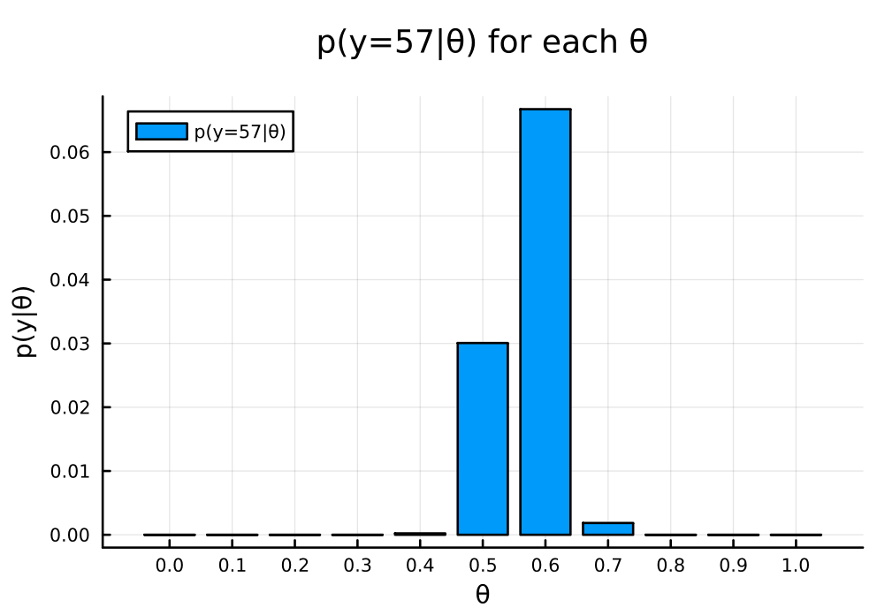
c
Answer
b で求めたものを使うと以下のように簡単に計算できる。
posterior_for_θs = pdf_for_θs ./ sum(pdf_for_θs)
11-element Vector{Float64}:
0.0
4.153700946664936e-30
3.780824452548815e-15
1.3217050800508843e-7
0.0023116953094392757
0.30409393133068335
0.6748515016170306
0.018741724664998797
1.0149073359758722e-6
9.502335447682657e-17
0.0
bar( θ, posterior_for_θs, xlabel = "θ", ylabel = "p(θ|y)", title = "p(θ|y=$y) for each θ", label = "p(θ|y=$y)", legend = :topleft, size = (600, 400) , margin = 5mm , xticks = 0:0.1:1.0 )
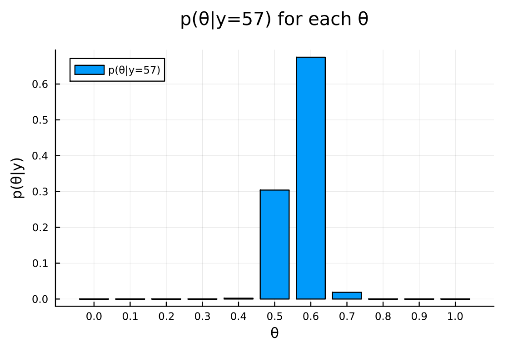
d
Answer
よって、以下のように計算できる。
posterior = x -> pdf(Binomial(n, x), y) # plot xs = 0:0.01:1.0 plot( xs, posterior.(xs), xlabel = "θ", ylabel = L"p(\theta) \times Pr(\sum_{i=1}^n Y_i = 57 \mid \theta)", title = L"p(\theta) \times Pr(\sum_{i=1}^n Y_i = 57 \mid \theta)", label = "p(θ|y=$y)", legend = :topleft, size = (600, 400) , margin = 5mm , xticks = 0:0.1:1.0 )
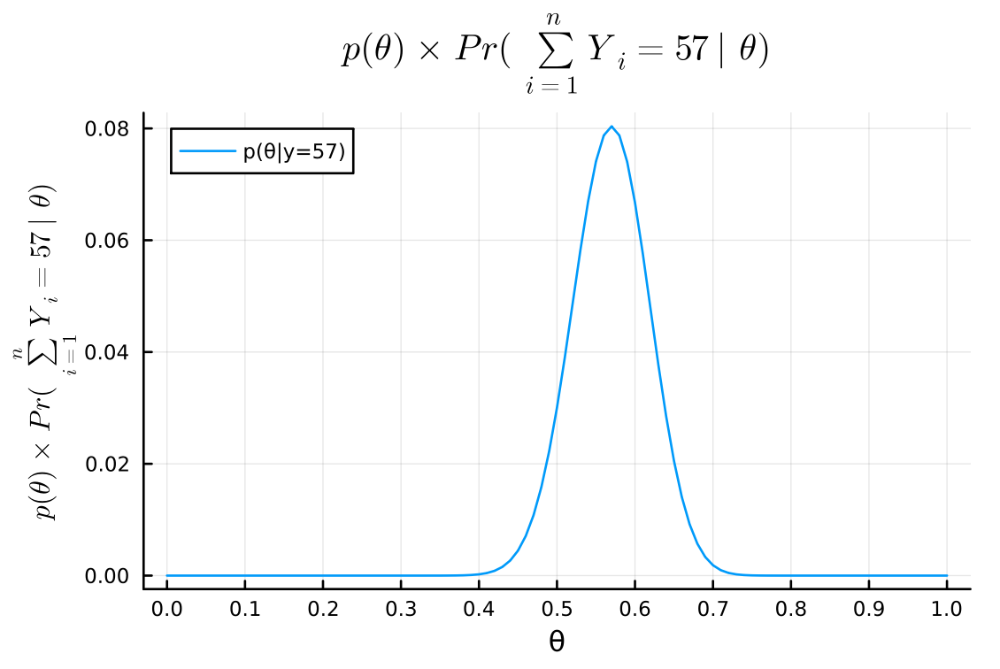
e
Answer
plot( Beta(1+y, 1+n-y), xlabel = "θ", ylabel = "p(θ|y)", title = "Beta(1+$y, 1+$n-$y)", label = nothing , size = (600, 400) , margin = 5mm )
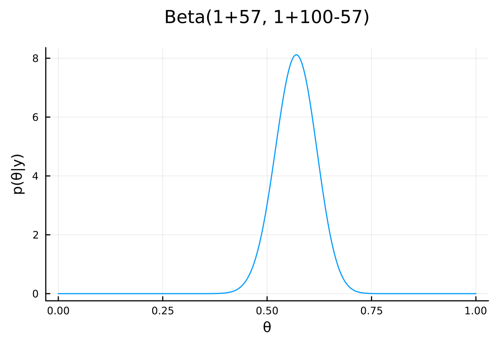
d と e は同じ形状で、dを正規化したのが e。また、c, b のグラフは、パラメータ\(\theta\)を 11 個の値をとる離散変数として扱っているもので、同じ形状をしている。コードを見ればわかるように、それぞれの確率の和が 1 になるように正規化しているのが c である。
3.2
Answer
θ₀_list = 0.1:0.1:0.9 n₀_list = [1, 2, 8, 16, 32] n = 100 y = 57 function get_half_cdf(θ₀, n₀) postrior = Beta(θ₀ * n₀ + y, (1 - θ₀) * n₀ + n - y) return 1 - cdf(postrior, 0.5) end contour( θ₀_list, n₀_list, (θ₀_list, n₀_list) -> get_half_cdf(θ₀_list, n₀_list) , clabels=true , xlabel="θ₀", ylabel="n₀" , title = L"Pr(\theta > 0.5 | \sum Y_i = 57,)" )
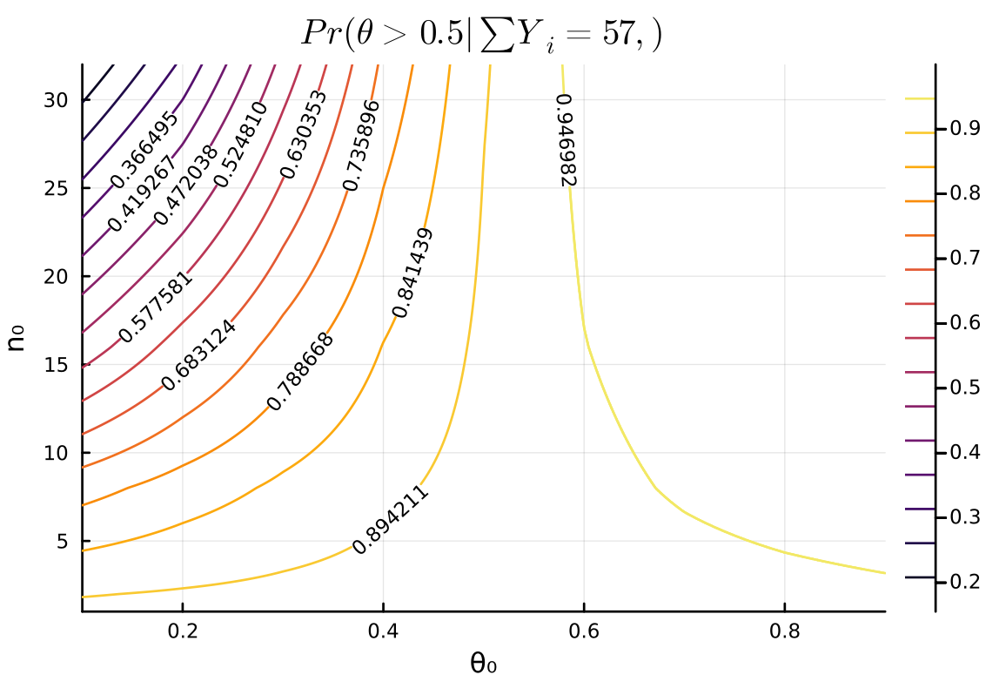
\(\theta_0\)は\(\theta\)に関する事前の信念、 \(n_0\)は\(\theta\)の事前の信念の強さを表している。 \(\theta_0\)が大きいほど、\(\theta > 0.5\)の事後確率も大きくなり、同じ\(\theta_0\)で比べた時は、だいたい\(\theta_0 < 0.5\)で\(n_0\)が大きいほど、\(\theta > 0.5\)の事後確率が小さくなり、 \(\theta_0 > 0.5\)で\(n_0\)が大きいほど、\(\theta > 0.5\)の事後確率が大きくなる。
よって、事前の知識などを参考にしながら、\(\theta_0\)はどれくらいか、またその信念の強さはどの程度なのかを考えたうえで、それに応じて上のプロットを見ながら\(\theta > 0.5\)の信念をアップデートすることができる。
3.3
a)
answer
using Distributions y_A = [12, 9, 12, 14, 13, 13, 15, 8, 15, 6] y_B = [11, 11, 10, 9, 9, 8, 7, 10, 6, 8, 8, 9, 7] n_A, sy_A = length(y_A) , sum(y_A) n_B, sy_B = length(y_B) , sum(y_B) a₀_A = 120 b₀_A = 10 a₀_B = 12 b₀_B = 1 # Posterior distributions dist_A = Gamma(a₀_A + sy_A, 1/(b₀_A + n_A)) dist_B = Gamma(a₀_B + sy_B, 1/(b₀_B + n_B))
mean_A = (a₀_A + sy_A) / (b₀_A + n_A) mean_B = (a₀_B + sy_B) / (b₀_B + n_B) ["Posterior mean of A: $mean_A" , "Posterior mean of B: $mean_B"]
| Posterior mean of A: 11.85 |
| Posterior mean of B: 8.928571428571429 |
var_A = (a₀_A + sy_A) / (b₀_A + n_A)^2 var_B = (a₀_B + sy_B) / (b₀_B + n_B)^2 ["Posterior variance of A: $var_A" , "Posterior variance of B: $var_B"]
| Posterior variance of A: 0.5925 |
| Posterior variance of B: 0.6377551020408163 |
# 95% quantile-based confidence intervals quantile_A = quantile.(dist_A, [0.025, 0.975]) quantile_B = quantile.(dist_B, [0.025, 0.975]) ["Posterior 95% quantile of A: $quantile_A" , "Posterior 95% quantile of B: $quantile_B"]
| Posterior 95% quantile of A: [10.389238190941795, 13.405448325642006] |
| Posterior 95% quantile of B: [7.432064219464302, 10.560308149242365] |
b
answer
list_n₀ = 1:50 exp_θ_B = n -> (a₀_B*n + sy_B) / (n + n_B ) # Plot plot( list_n₀, exp_θ_B.(list_n₀), label="Expected value of θ_B", xlabel="n₀", ylabel=L"\theta_B", legend=nothing, title="Expected value of θ_B as a function of n₀" )
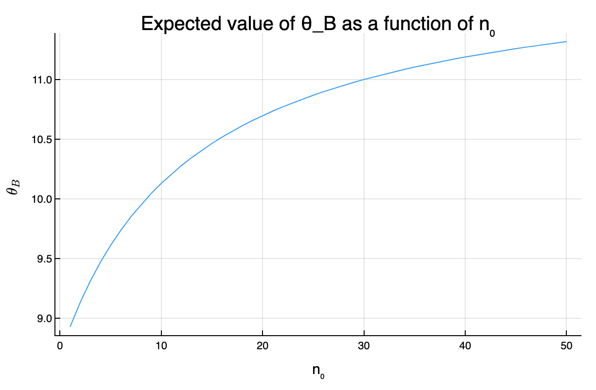
\(n_0 = 35\)くらいで、\(\theta_B\)の期待値が\(\theta_A\)の期待値を上回る。この時の\(\theta_B\)の事前分布のプロットは以下の通り。
n = 35 plot( Gamma(a₀_B*n + sy_B, 1/(n + n_B)) , label=L"Prior distribution of \theta_B when n_0 = $n" , legend=false )
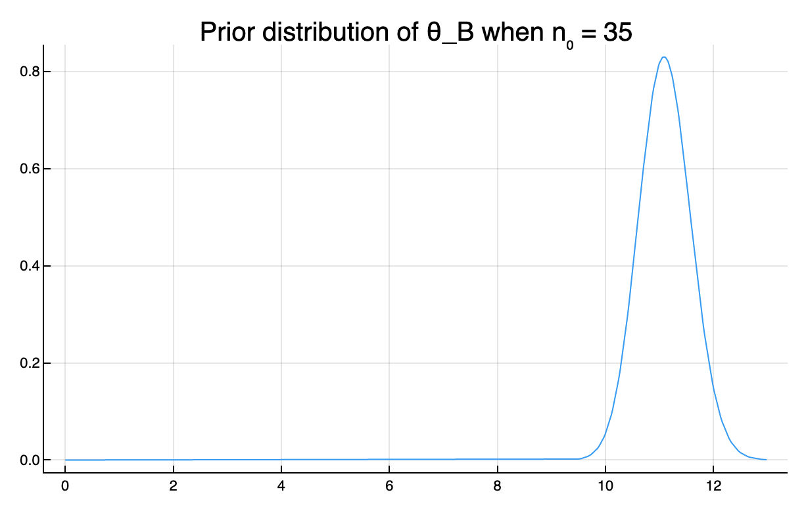
上の分布を見ればわかるように、 \(\theta_B\)の事後期待値が\(\theta_A\)の事後期待値と同じくらいになるためには、 \(\theta_B\)がかなりの確率で 11 の近くに分布しているという信念を反映した事前分布が必要。
c
answer
B 系統のマウスは A 系統のマウスと関連性があるとされているので、 A 系統のマウスについての腫瘍数の情報は B 系統のマウスについての腫瘍数の事前情報になり得る。よって、\(p(\theta_A, \theta_B) = p(\theta_A) \times p(\theta_B)\)という仮定は妥当ではなく、 B 系統のマウスと A 系統のマウスの関連の度合いに関する信念のパラメータ\(n_0\)を導入し、 \(p(\theta_B | \theta_A, n_0) = \text{gamma}(E[\theta_A] \times n_0, n_0)\) などという形でモデル化するのが妥当であると考えられる。また、A系統のマウスに関するデータが観測されたあとに B 系統のマウスに関する推測を行う場合には、 \(\theta_B\)の事前期待値に\(\theta_A\)の事後期待値を用いるようなモデリングも可能。
3.4
a
using Distributions using Plots using StatsPlots using LaTeXStrings a₀ = 2 b₀ = 8 n = 43 y = 15
# prior plot( Beta(a₀, b₀), title=L"p(\theta)", xlabel=L"\theta", ylabel=L"p(\theta)", legend=false, )
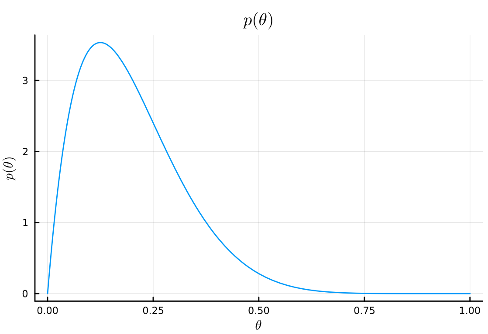
\(y \sim \text{binomial}(43, \theta)\)より、\(p(\theta \mid y)\)を\(\theta\)の関数としてプロットすると以下のようになる。
θ = 0:0.01:1.0 # 全てのθで計算 pdf_for_θs = map(θ -> pdf(Binomial(n, θ), y), θ) # plot plot( θ, pdf_for_θs, xlabel = "θ", ylabel = "p(y|θ)", title = "p(y=$y|θ) as a function of θ", legend = false, size = (600, 400) , margin = 5mm , xticks = 0:0.1:1.0 )
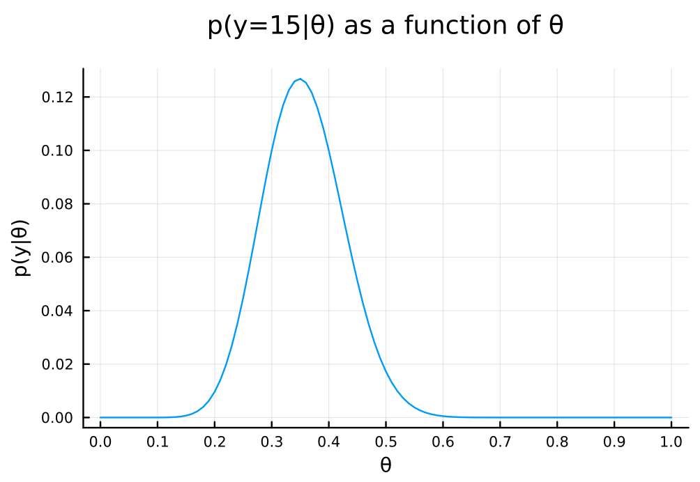
# posterior posterior_dist = Beta(a₀ + y, b₀ + n - y) plot( posterior_dist, title=L"p(\theta|y)", xlabel=L"\theta", ylabel=L"p(\theta|y)", legend=false, )
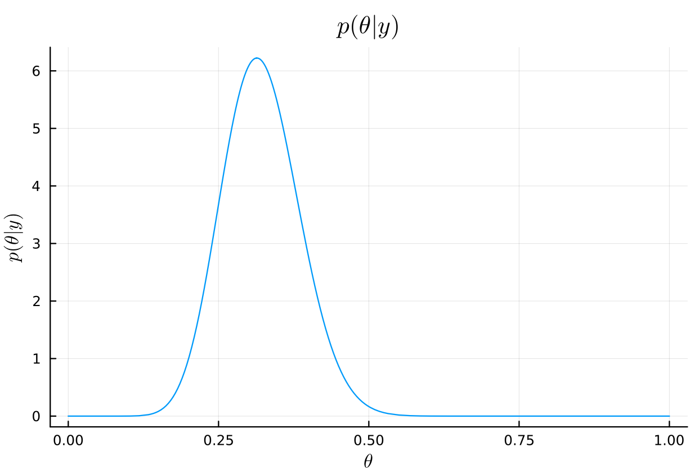
# posterior mean mean(posterior_dist) μ = (a₀ + y)/(a₀ + b₀ + n)
0.32075471698113206
# posterior mode mode(posterior_dist) (a₀ + y - 1)/(a₀ + b₀ + n - 2)
0.3137254901960784
# posterior standard deviation std(posterior_dist) var = (μ*(1 - μ))/(a₀ + b₀ + n + 1) sqrt(var)
0.0635188989834093
# posterior 95% interval quantile(posterior_dist, [0.025, 0.975])
2-element Vector{Float64}:
0.2032977878191033
0.45102398221663165
b
a₀_b = 8 b₀_b = 2
# prior plot( Beta(a₀_b, b₀_b), title=L"p(\theta)", xlabel=L"\theta", ylabel=L"p(\theta)", legend=false, )
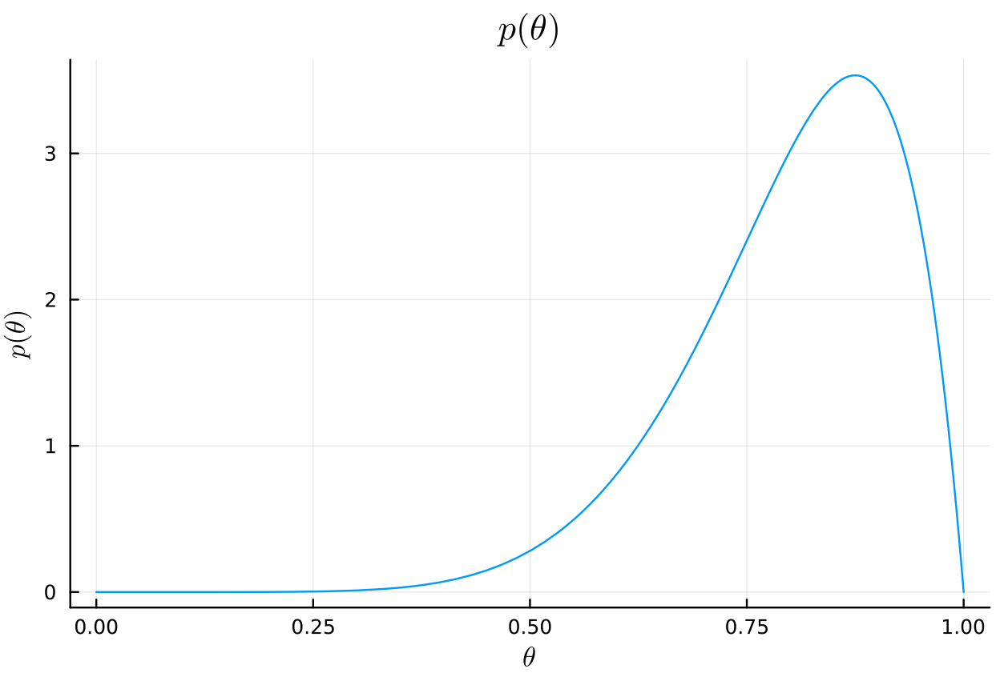
# posterior posterior_dist_b = Beta(a₀_b + y, b₀_b + n - y) plot( posterior_dist_b, title=L"p(\theta|y)", xlabel=L"\theta", ylabel=L"p(\theta|y)", legend=false, )
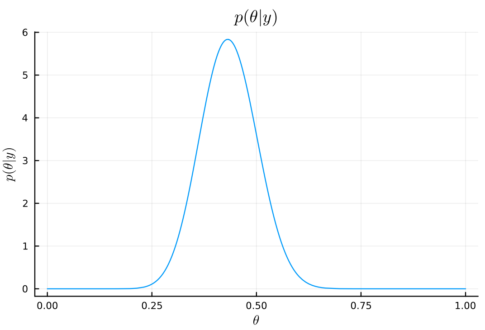
# posterior mean mean(posterior_dist_b) μ_b = (a₀_b + y)/(a₀_b + b₀_b + n)
0.4339622641509434
# posterior mode mode(posterior_dist_b) (a₀_b + y - 1)/(a₀_b + b₀_b + n - 2)
0.43137254901960786
# posterior standard deviation std(posterior_dist_b) var_b = (μ_b*(1 - μ_b))/(a₀_b + b₀_b + n + 1) sqrt(var_b)
0.06744531631926798
# posterior 95% interval quantile(posterior_dist_b, [0.025, 0.975])
2-element Vector{Float64}:
0.30469562471174694
0.5679527959964581
c
using SpecialFunctions prior_mix = θ -> 1//4 * gamma(10) / (gamma(2) * gamma(8)) * (3 * θ * (1 - θ)^7 + θ^7 * (1 - θ))
xs = 0:0.01:1.0 plot( xs, prior_mix.(xs), xlabel = "θ", ylabel = "p(θ)", title = "mixture of a beta(2,8) and a beta(8,2) prior distribution", titlefontsize = 12, legend = false, size = (600, 400) , margin = 5mm , xticks = 0:0.1:1.0 )
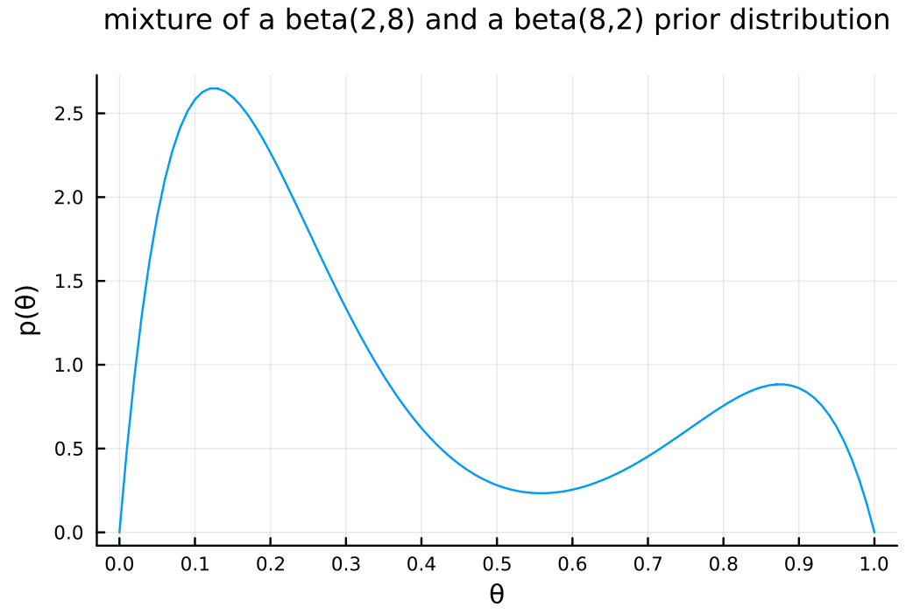
aやbの事前分布と異なり、上の分布は 2 つの山を持った形状になっている。この事前分布は、再犯率は高いか低いかのどちらかに偏っているという信念を表している。
d
For the prior in c):
i
Write out mathematically \(p(\theta) \times p(y \mid \theta)\) and simplify as much as possible.
Answer:
\begin{align*} p(\theta) \times p(y \mid \theta) &= \frac{1}{4} \frac{\Gamma(10)}{\Gamma(2)\Gamma(8)} [3 \theta (1-\theta)^7 + \theta^7 (1-\theta)] \times \begin{pmatrix} 43 \\ 15 \end{pmatrix} \theta^{15} (1-\theta)^{28} \\ &= \frac{1}{4} \frac{\Gamma(10)}{\Gamma(2)\Gamma(8)} \begin{pmatrix} 43 \\ 15 \end{pmatrix} \left[3 \theta^{1+15} (1-\theta)^{7+28} + \theta^{7+15} (1-\theta)^{1+28}\right] \\ &= \frac{1}{4} \frac{\Gamma(10) \Gamma(44)}{\Gamma(2)\Gamma(8) \Gamma(16) \Gamma(29)} \left[3 \theta^{16} (1-\theta)^{35} + \theta^{22} (1-\theta)^{29}\right] \\ \end{align*}ii
The posterior distribution is a mixture of two distributions you know. Identify these distributions.
Answer:
Beta(17, 36) and Beta(23, 30)
iii
On a computer, calculate and plot \(p(\theta) \times p(y \mid \theta)\) for a variety of \(\theta\) values. Also find (approximately) the posterior mode, and discuss its relation to the modes in a) and b).
Answer:
cond_prob = θ -> pdf(Binomial(n, θ), y) prior_times_cond_prob = θ -> prior_mix(θ) * cond_prob(θ) xs = 0:0.001:1.0 plot( xs, prior_times_cond_prob.(xs), xlabel = "θ", ylabel = "p(θ) × p(θ|y)", title = "p(θ) × p(θ|y)", legend = false, )
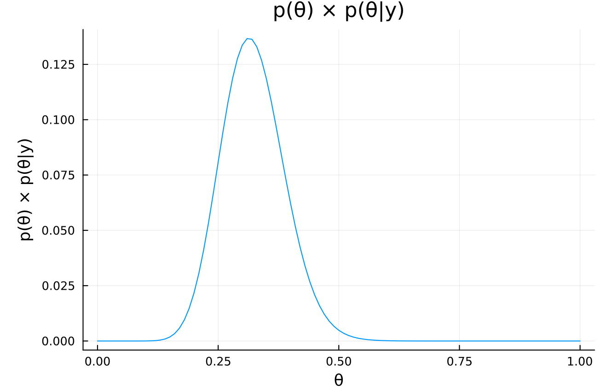
# prior_times_cond_probが最大になるθ xs[argmax(prior_times_cond_prob.(xs))]
a) の mode が 0.313,b)の mode が 0.431 であったので、この事後 mode はその中間（かなり a より)に位置している。
e
Find a general formula for the weights of the mixture distribution in d)ii, and provide an interpretation for their values.
Answer:
\(n ,y\)一般に対し、事後分布は
\begin{align*} p(\theta \mid y) &= \frac{p(y \mid \theta) p(\theta)}{p(y)} \\ & \propto p(y \mid \theta) p(\theta) \\ &= \begin{pmatrix} n \\ y \end{pmatrix} \theta^y (1-\theta)^{n-y} \times \frac{1}{4} \frac{\Gamma(10)}{\Gamma(2)\Gamma(8)} \left[3 \theta (1-\theta)^7 + \theta^7 (1-\theta)\right] \\ & \propto 3 \theta^{y+1} (1-\theta)^{n-y+7} + \theta^{y+7} (1-\theta)^{n-y+1} \\ & \propto \frac{3}{4} \theta^{y+2-1} (1-\theta)^{n-y+8-1} + \frac{1}{4} \theta^{y+8-1} (1-\theta)^{n-y+2-1} \\ &= \frac{3}{4} \text{dbeta}(y+2, n-y+8) + \frac{1}{4} \text{dbeta}(y+8, n-y+2) \end{align*}となる。よって事後分布は、Beta(y+2, n-y+8) と Beta(y+8, n-y+2)を 3 対 1 の重みをつけて混合させたものが事後分布となる。
3.5
Answer
a)
where \(\bar{t}(\boldsymbol{y}) = \frac{\sum t(y_i)}{n}\)
b)
3.6
Answer
a)
\( \int p(y \mid \theta) dy = 1 \) の両辺を \(\phi\) で微分すると左辺は、
\begin{align*} \frac{d}{d \phi } \int p(y \mid \theta) dy &= \int \frac{d}{d \phi } p(y \mid \theta) dy \\ &= \int \frac{d}{d \phi } c(\phi) h(y) \exp\{\phi t(y) \} dy \\ &= \int h(y) \left( c(\phi) \frac{d \exp \{\phi t(y) \} }{ d \phi } + \frac{d c(\phi)}{d \phi } \exp \{\phi t(y) \} \right) dy \\ &= \int h(y) \left( c(\phi) t(y) \exp \{\phi t(y) \} + c'(\phi) \exp \{\phi t(y) \} \right) dy \\ &= \int h(y) c(\phi) t(y) \exp \{\phi t(y) \} dy + \int h(y) c'(\phi) \exp \{\phi t(y) \} dy \\ &= E[ t(y) \mid \phi] + \frac{c'(\phi)}{c(\phi)} \int c(\phi) h(y) \exp \{\phi t(y) \} dy \\ &\quad (\because c(\phi) \neq 0 \text{ because } p(y \mid \theta) \text{ is a probability density}) \\ &= E[ t(y) \mid \phi] + \frac{c'(\phi)}{c(\phi)} \int p(y \mid \theta) dy \\ &= E[ t(y) \mid \phi] + \frac{c'(\phi)}{c(\phi)} \\ \end{align*}右辺は 0 なので、 \[ E[ t(y) \mid \phi] = - \frac{c'(\phi)}{c(\phi)} \]
b)
ここで、両辺を \(\phi\)について積分すると左辺は
\begin{align*} \int \frac{d p(\phi)}{d \phi} d \phi &= \frac{d}{d \phi} \int p(\phi) d \phi \\ &= \frac{d}{d \phi} 1 \\ &= 0 \\ \end{align*}右辺は
\begin{align*} n_0 \int \frac{c'(\phi)}{c(\phi)} p(\phi) d \phi + n_0 t_0 \int p(\phi) d \phi & = n_0 E \left[ \frac{c'(\phi)}{c(\phi)} \right] + n_0 t_0 \end{align*}以上より、 \[ E \left[- \frac{c'(\phi)}{c(\phi)} \right] = t_0 \]
3.7
answer: a)
事前分布は一様分布 Beta(1, 1)より、事後分布は Beta(3, 14)となる。
using Distributions begin a, b = 1 , 1 # prior parameters n₁, y₁ = 15, 2 # data mean = (a + y₁)/ (a + b + n₁) # posterior mean "Posterior mean : $mean" end
Posterior mean : 0.17647058823529413
mode = (a + y₁ - 1) / (a + b + n₁ - 2) # posterior mode "Posterior mode : $mode"
Posterior mode : 0.13333333333333333
var = mean * (1 - mean) / (a + b + n₁ + 1) # posterior variance std = sqrt(var) # posterior standard deviation "Posterior standard deviation : $std"
Posterior standard deviation : 0.08985442539129099
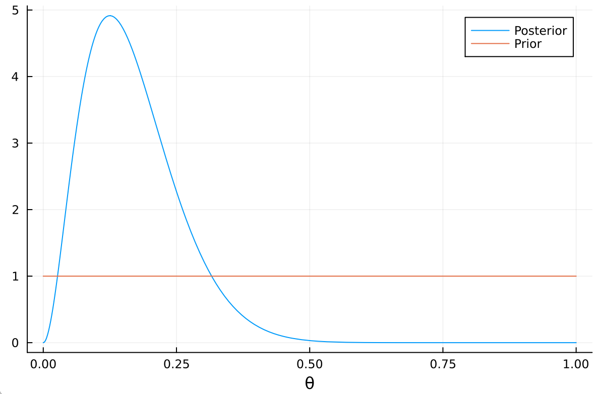
b)
answer: b) i.
Proof:
\begin{align*} \text{Pr}\left( Y_2 = y_2 \mid Y_1 = 2 \right) &= \int_0^1 \text{Pr}\left( Y_2 = y_2, \theta \mid Y_1 = 2 \right) d \theta \\ &= \int_0^1 \text{Pr}\left( Y_2 = y_2 \mid \theta , Y_1 = 2 \right) \text{Pr}\left( \theta \mid Y_1 = 2 \right) d \theta \\ \end{align*}より、等式が成り立つための条件は、
\begin{align*} & \text{Pr}\left( Y_2 = y_2, \mid \theta, Y_1 = 2 \right) = \text{Pr}\left( Y_2 = y_2 \mid \theta \right) \\ \Leftrightarrow \quad &\text{Pr}\left(Y_1 = 2 \mid \theta \right) \text{Pr}\left(Y_2 = y_2 \mid \theta , Y_1 = 2\right) = \text{Pr}\left(Y_1 = 2 \mid \theta \right) \text{Pr}\left(Y_2 = y_2 \mid \theta \right) \\ \Leftrightarrow \quad &\text{Pr}\left(Y_1 = 2 , Y_2 = y_2 \mid \theta \right) = \text{Pr}\left(Y_1 = 2 \mid \theta \right) \text{Pr}\left(Y_2 = y_2 \mid \theta \right) \end{align*}これを\((Y_1, Y_2)\)の同時分布について一般化すると、(\eqref{orga4ca400})が導かれる。
answer: b) ii.
answer: b) iii.
より、
\begin{align*} \text{Pr}\left( Y_2 = y_2 \mid Y_1 = 2 \right) &= \frac{\Gamma(3 + 14)}{\Gamma(3) \Gamma(14)} \begin{pmatrix} 278 \\ y_2 \end{pmatrix} \frac{\Gamma(y_2 + 3) \Gamma(292 - y_2)}{\Gamma(295)} \\ \end{align*}c)
answer
b)iiiの答えに\(y_2 = 0, 1, \dots\) を代入することもできるが、
\begin{align*} \text{Pr}\left( Y_2 = y_2 \mid Y_1 = 2 \right) &= \frac{\Gamma(3 + 14)}{\Gamma(3) \Gamma(14)} \begin{pmatrix} 278 \\ y_2 \end{pmatrix} \frac{\Gamma(y_2 + 3) \Gamma(292 - y_2)}{\Gamma(295)} \\ &= \begin{pmatrix} 278 \\ y_2 \end{pmatrix} \frac{B(y_2 + 3, 292 - y_2)}{B(3, 14)} \\ &= \begin{pmatrix} 278 \\ y_2 \end{pmatrix} \frac{B(y_2 + 3, 278 - y_2 + 14)}{B(3, 14)} \\ &= \text{dbetabinomial}(y_2, 278, 3, 14) \end{align*}より、 \(y_2\)はベータ二項分布に従うことがわかる。これを利用してプロットすると、以下のようになる。
n₂ = 278 plot(BetaBinomial(n₂, a + y₁, a + b + n₁ - y₁), 0:278, label=nothing) xlabel!("y₂")
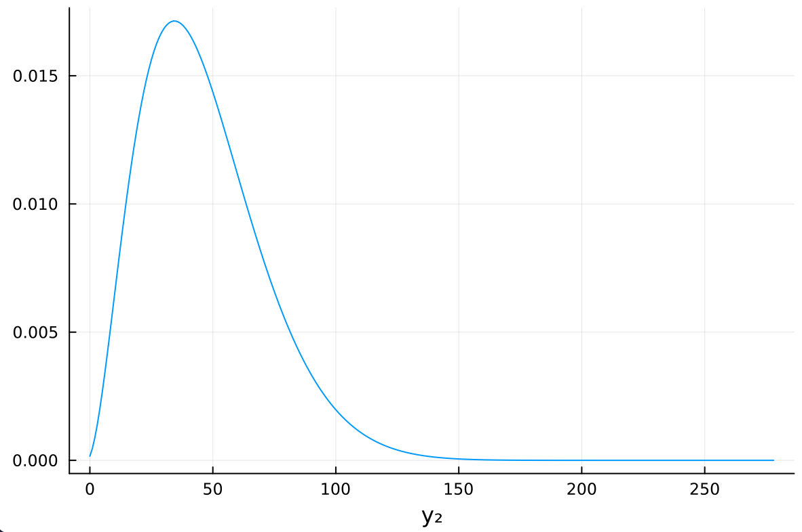
d)
answer:
θ̂ = 2 // 15 plot(Binomial(n₂, θ̂), 0:278, label=nothing, xlabel="y₂")
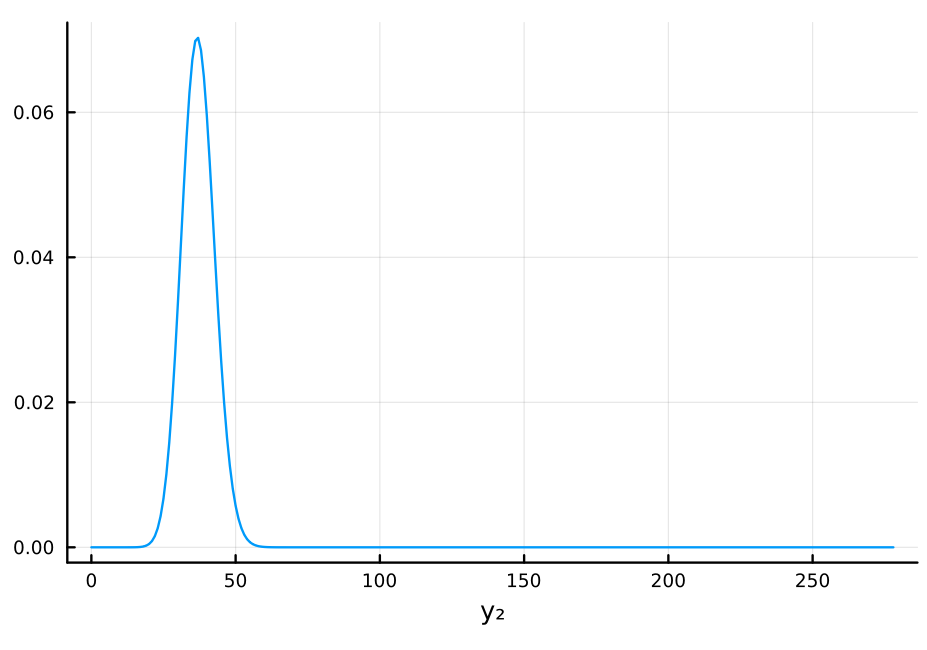
mean2 = n₂ * θ̂ var2 = n₂ * θ̂ * (1 - θ̂) std2 = sqrt(var2) "mean: $mean2, std: $std2"
mean: 37.06666666666666, std: 5.667843015155276
c) との比較:
mode は c) が 34, で上の分布が 37 と、かなり近いが、cの分布の方がかなり裾の広い分布（分散が大きい分布）となっていることがわかる。これは、1回目のデータが得られたあとの\(\theta\)の事後分布の不確実性が c)の分布に反映されているためである。逆に、上の分布には 1 回目のデータのサンプルサイズ（データの妥当性）が反映されていないため、予測には c の分布を使うのがよいと考えられる。
3.8
a)
answer
a₀_sym, b₀_sym = 15, 15 sym = Beta(a₀_sym, b₀_sym) a₀_asym, b₀_asym = 10, 20 asym = Beta(a₀_asym, b₀_asym) plot(sym, 0:0.01:1, label="symmetric") plot!(asym, 0:0.01:1, label="asymmetric")
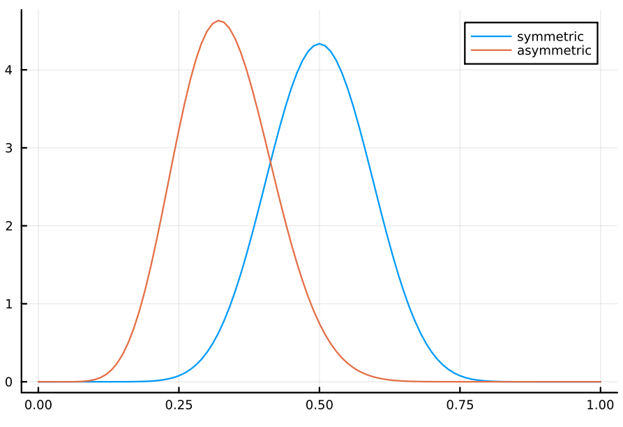
上の mixture model は、以下のようになる。
mm = MixtureModel([sym, asym], [0.2, 0.8]) histogram(rand(mm, 100000), label="mixture model prior", bins=100, normalize=:pdf, xlabel="θ")
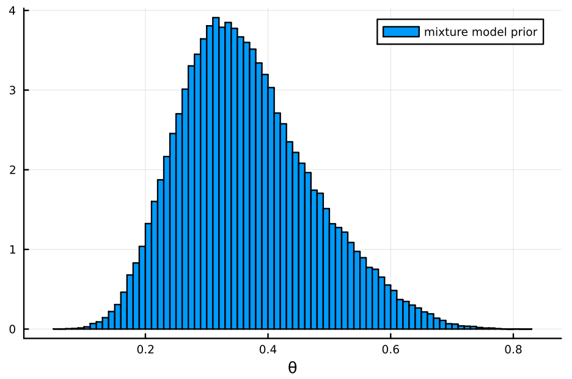
b)
answer
| num | front |
|---|---|
| 1 | 1 |
| 2 | 1 |
| 3 | 1 |
| 4 | 1 |
| 5 | 1 |
| 6 | 0 |
| 7 | 1 |
| 8 | 0 |
| 9 | 0 |
| 10 | 1 |
| 11 | 0 |
| 12 | 0 |
| 13 | 1 |
| 14 | 0 |
| 15 | 1 |
| 16 | 1 |
| 17 | 0 |
| 18 | 0 |
| 19 | 1 |
| 20 | 0 |
| 21 | 1 |
| 22 | 0 |
| 23 | 1 |
| 24 | 0 |
| 25 | 0 |
| 26 | 0 |
| 27 | 1 |
| 28 | 0 |
| 29 | 0 |
| 30 | 1 |
| 31 | 1 |
| 32 | 0 |
| 33 | 0 |
| 34 | 0 |
| 35 | 1 |
| 36 | 1 |
| 37 | 1 |
| 38 | 0 |
| 39 | 0 |
| 40 | 1 |
| 41 | 0 |
| 42 | 0 |
| 43 | 1 |
| 44 | 0 |
| 45 | 0 |
| 46 | 0 |
| 47 | 0 |
| 48 | 1 |
| 49 | 0 |
| 50 | 1 |
| Total | 23 |
平成 26 年 100 円玉
c)
answer
y₁, n₁ = 23 , 50 sym₁ = Beta(a₀_sym + y₁, b₀_sym + n₁ - y₁) asym₁ = Beta(a₀_asym + y₁, b₀_asym + n₁ - y₁) mm₁ = MixtureModel([sym₁, asym₁], [0.2, 0.8]) histogram(rand(mm₁, 100000), label="posterior distribution", bins=100, normalize=:pdf, xlabel="θ")
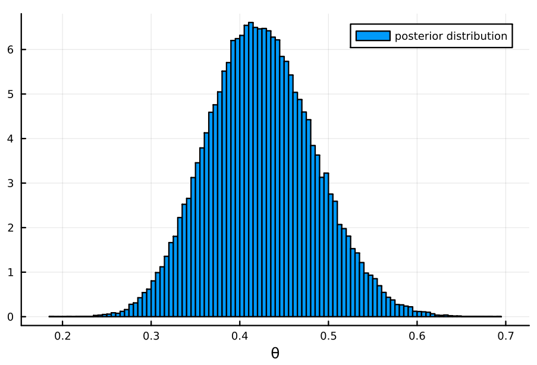
d)
answer
今回は、令和元年 100 円玉を使う。
| num | front |
|---|---|
| 1 | 0 |
| 2 | 0 |
| 3 | 1 |
| 4 | 0 |
| 5 | 0 |
| 6 | 1 |
| 7 | 1 |
| 8 | 1 |
| 9 | 0 |
| 10 | 0 |
| 11 | 0 |
| 12 | 1 |
| 13 | 1 |
| 14 | 0 |
| 15 | 0 |
| 16 | 0 |
| 17 | 0 |
| 18 | 0 |
| 19 | 0 |
| 20 | 1 |
| 21 | 1 |
| 22 | 1 |
| 23 | 0 |
| 24 | 0 |
| 25 | 0 |
| 26 | 0 |
| 27 | 1 |
| 28 | 1 |
| 29 | 0 |
| 30 | 0 |
| 31 | 0 |
| 32 | 1 |
| 33 | 0 |
| 34 | 0 |
| 35 | 1 |
| 36 | 1 |
| 37 | 0 |
| 38 | 0 |
| 39 | 1 |
| 40 | 1 |
| 41 | 1 |
| 42 | 1 |
| 43 | 0 |
| 44 | 0 |
| 45 | 0 |
| 46 | 1 |
| 47 | 0 |
| 48 | 0 |
| 49 | 0 |
| 50 | 1 |
| Total | 20 |
同じ 100 円玉なので、 c) で得た事後分布を事前分布として用いると、事後分布は以下のようになる。
n₂, y₂ = 50, 20 sym₂ = Beta(a₀_sym + y₁ + y₂, b₀_sym + n₁ - y₁ + n₂ - y₂) asym₂ = Beta(a₀_asym + y₁ + y₂, b₀_asym + n₁ - y₁ + n₂ - y₂) mm₂ = MixtureModel([sym₂, asym₂], [0.2, 0.8]) histogram(rand(mm₂, 100000), label="posterior distribution", bins=100, normalize=:pdf, xlabel="θ")
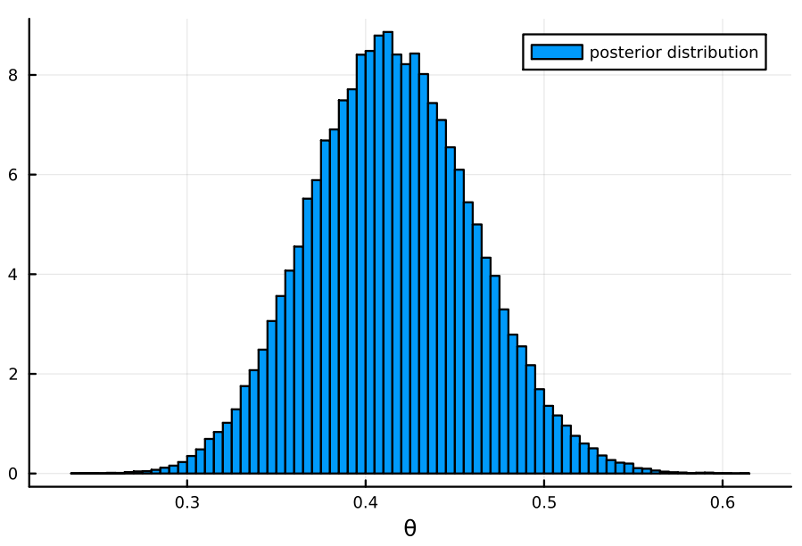
3.9
a)
answer
データ\(y_1, y_2, \dots, y_n\)を観測したとき、 y_1, y_2, …, y_n ∼ \text{i.i.d. Galenshore}(a, θ) とすると、 \(\theta\)の\(a\)の条件付き事後分布は、
\begin{align*} p(\theta | y_1, \dots, y_n, a) &\propto p(y_1, \dots, y_n | \theta, a) p(\theta | a) \\ &\propto \theta^{2a n} \exp \left( - \theta^2 \sum_{i=1}^n y_i^2 \right) \times p(\theta | a) \\ \end{align*}となる。上の計算より、 \(p(\theta | a)\)が共役事前分布であるためには、 \(\theta^{2 c_1} \exp(- \theta^2) \) のような項を含む分布である必要があるが、そのような分布としては、sampling model と同じ Galenshore 分布がある。
また、\(f(\theta) = - \theta^2 =: \phi\)とおくと、 \(\phi\)は\(\theta > 0\)で\(\theta\)の全単射の写像であり、
\begin{align*} p(\theta | y_1, \dots, y_n, a) &\propto \phi^{an} \exp \left( \phi \sum_{i=1}^n y_i^2 \right) \times p(\theta | a) \\ \end{align*}と問題を置き換えて \(\phi\)の事前分布として、ガンマ分布を考えることもできる。
以下では、\(\theta\)の事前分布として、Galenshore 分布を用いる。
plot(Normal(3,2), label="Normal(3,2)") plot!(Gamma(1,1), label="Gamma(1,1)")
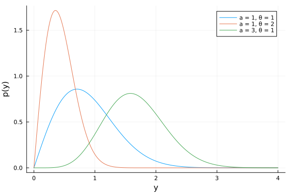
b)
answer
\(\theta\)の prior を Galenshore\((b, \phi)\) に設定すると、posterior は以下のように計算できる。
\begin{align*} p(\theta | y_1, \dots, y_n, a) &\propto p(y_1, \dots, y_n | \theta, a) p(\theta | a) \\ &\propto \theta^{2a n} \exp \left( - \theta^2 \sum_{i=1}^n y_i^2 \right) \times \theta^{2b-1} e^{-\phi^2 \theta^2} \\ &= \theta^{2(an+b) - 1} \exp \left( - \left( \sum_{i=1}^n y_i^2 + \phi^2 \right) \theta^2 \right) \\ \end{align*}以上より、 \[\theta | y_1, \dots, y_n, a \sim \text{Galenshore}(an+b, \sqrt{\sum_{i=1}^n y_i^2 + \phi^2}\]
c)
answer
上式から、十分統計量は、 \(\sum_{i=1}^n y_i^2\)であることが分かる。
d)
answer
e)
answer
Galenshore 分布は確率分布であることから、
\begin{equation} \label{eq:galenshore} \begin{aligned}[b] & \int_0^{\infty} \frac{2}{\Gamma(a)} \theta^{2a} y^{2a-1} e^{-\theta^2 y^2} dy = 1 \\ \Leftrightarrow \quad & \frac{2}{\Gamma(a)} \theta^{2a} \int_0^{\infty} y^{2a-1} e^{-\theta^2 y^2} dy = 1 \\ \Leftrightarrow \quad & \int_0^{\infty} y^{2a-1} e^{-\theta^2 y^2} dy = \frac{\Gamma(a)}{2} \theta^{-2a} \end{aligned} \end{equation}であることを用いると、
\begin{align*} p(\tilde{y} | y_1, \dots, y_n) &= \int_0^{\infty} p(\tilde{y} | \theta) p(\theta | y_1, \dots, y_n) d\theta \\ &= \int_0^{\infty} \frac{2}{\Gamma(a)} \theta^{2a} \tilde{y}^{2a-1} e^{-\theta^2 \tilde{y}^2} \times \frac{2}{\Gamma(an+b)} \left( \sum_{i=1}^n y_i^2 + \phi^2 \right)^{an+b} \theta^{2(an+b)-1} e^{- \left( \sum_{i=1}^n y_i^2 + \phi^2 \right) \theta^2} d\theta \\ &= \frac{4}{\Gamma(a) \Gamma(an+b)} \left( \sum_{i=1}^n y_i^2 + \phi^2 \right)^{an+b} \tilde{y}^{2a-1} \int_0^{\infty} \theta^{2(a + an+b)-1} e^{-(\tilde{y}^2 + \sum_{i=1}^n y_i^2 + \phi^2)\theta^2 } d\theta \\ &= \frac{4}{\Gamma(a) \Gamma(an+b)} \left( \sum_{i=1}^n y_i^2 + \phi^2 \right)^{an+b} \tilde{y}^{2a-1} \frac{\Gamma(a + an+b)}{2(\tilde{y}^2 + \sum_{i=1}^n y_i^2 + \phi^2)^{a + an+b}} \quad (\because \eqref{eq:galenshore}) \\ &= \frac{2}{B(a, an+b)} \left( \sum_{i=1}^n y_i^2 + \phi^2 \right)^{an+b} \tilde{y}^{2a-1} (\tilde{y}^2 + \sum_{i=1}^n y_i^2 + \phi^2)^{-(a + an+b)} \\ \end{align*}3.10
a)
answer
また、
\begin{align*} \frac{d h(\psi)}{d \psi} &= \frac{e^{\psi} (1+e^{\psi}) - e^{\psi} e^{\psi} }{(1+e^{\psi})^2} \\ &= \frac{e^{\psi} (1+e^{\psi} - e^{\psi} )}{(1+e^{\psi})^2} \\ &= \frac{e^{\psi}}{(1+e^{\psi})^2} \quad ( > 0)\\ \end{align*}よって、
\begin{align*} p_{\psi} (\psi) &= p_{\theta}(h(\psi)) \times \mid \frac{d h(\psi)}{d \psi} \mid \\ &= \frac{1}{B(a,b)} h(\psi)^{a-1} (1-h(\psi))^{b-1} \times \frac{e^{\psi}}{(1+e^{\psi})^2} \\ &= \frac{1}{B(a,b)} \left( \frac{e^{\psi}}{1 + e^{\psi} } \right)^{a-1} \left( \frac{1}{1 + e^{\psi} } \right)^{b-1} \times \frac{e^{\psi}}{(1+e^{\psi})^2} \\ &= \frac{1}{B(a,b)} \left( \frac{e^{\psi}}{1 + e^{\psi} } \right)^a \left( \frac{1}{1 + e^{\psi} } \right)^b \end{align*}using Plots using SpecialFunctions a, b = 1, 1 p_ψ = ψ -> exp(ψ)^a * (1 + exp(ψ))^(-b) / beta(a,b) ψs = range(-10, 10, length=100) p = plot(ψs, p_ψ.(ψs), xlabel="ψ", ylabel="p(ψ)", label="p(ψ)") savefig(p, "../../fig/ch3/excersise3-10a.png") "../../fig/ch3/excersise3-10a.png"

b)
answer
また、
\begin{align*} \frac{d h(\psi)}{d \psi} &= e^{\psi} \quad ( > 0) \end{align*}よって、
\begin{align*} p_{\psi} (\psi) &= p_{\theta}(h(\psi)) \times \mid \frac{d h(\psi)}{d \psi} \mid \\ &= \frac{b^a}{\Gamma(a)} h(\psi)^{a-1} e^{-b h(\psi)} \times e^{\psi} \\ &= \frac{b^a}{\Gamma(a)} e^{\psi (a-1)} e^{-b e^{\psi}} \times e^{\psi} \\ &= \frac{b^a}{\Gamma(a)} e^{\psi a -b e^{\psi} } \\ \end{align*}using Plots using SpecialFunctions a, b = 1, 1 p_ψ = ψ -> b^a/gamma(a) * exp(ψ*a - b*exp(ψ)) ψs = range(-10, 10, length=100) p = plot(ψs, p_ψ.(ψs), xlabel="ψ", ylabel="p(ψ)", label="p(ψ)") savefig(p, "../../fig/ch3/excersise3-10b.png") "../../fig/ch3/excersise3-10b.png"
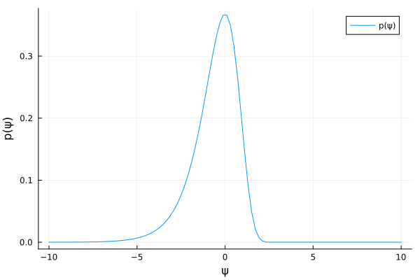
3.12(和訳は 3.11)
a)
answer
より、
\begin{align*} \frac{\partial^2 \log p(Y \mid \theta)}{\partial \theta^2} &= \frac{\partial}{\partial \theta} \left( \frac{Y}{\theta} - \frac{n-Y}{1-\theta} \right)\\ &= - \frac{n-Y}{(1-\theta)^2} - \frac{Y}{\theta^2} \\ \end{align*}よって、
\begin{align*} I(\theta) &= - E \left[ \frac{\partial^2 \log p(Y \mid \theta)}{\partial \theta^2} \middle| \theta \right] \\ &= - E \left[ - \frac{n-Y}{(1-\theta)^2} - \frac{Y}{\theta^2} \middle| \theta \right] \\ &= \frac{n-E[Y \mid \theta]}{(1-\theta)^2} + \frac{E[Y \mid \theta]}{\theta^2} \\ &= \frac{n - n \theta}{(1-\theta)^2} + \frac{n \theta}{\theta^2} \\ &= \frac{n}{1-\theta} + \frac{n}{\theta} \\ &= \frac{n}{\theta (1-\theta)} \end{align*}が得られる。また、
\begin{align*} p_J(\theta) &\propto \sqrt{\frac{n}{\theta (1-\theta)}} \\ &= \sqrt{n} \theta^{-\frac{1}{2}} (1-\theta)^{-\frac{1}{2}} \\ &\propto \theta^{ \frac{1}{2} - 1} (1-\theta)^{\frac{1}{2} - 1} \\ &\propto \text{dbeta}(\theta, \frac{1}{2}, \frac{1}{2}) \end{align*}より、Jeffreys’ prior distribution は、 Beta\((\frac{1}{2}, \frac{1}{2})\)となる。
b)
answer
これは 3.10 a) と同じ変換であることに注意。
\begin{align*} \log p(Y \mid \psi) &= \log \left[ \begin{pmatrix} n \\ Y \end{pmatrix} e^{\psi Y} (1+e^{\psi})^{-n} \right]\\ &= Y \psi + \log \begin{pmatrix} n \\ Y \end{pmatrix} - n \log (1+e^{\psi}) \\ \end{align*}より、
\begin{align*} \frac{\partial^2 \log p(Y \mid \psi)}{\partial \psi^2} &= \frac{\partial}{\partial \psi} \left( Y - \frac{n e^{\psi} }{1+e^{\psi} } \right)\\ &= - \frac{n e^{\psi} (1 + e^{\psi}) - e^{\psi} n e^{\psi} }{(1+e^{\psi})^2} \\ &= - \frac{n e^{\psi} }{(1+e^{\psi})^2} \\ \end{align*}よって、
\begin{align*} I(\psi) &= - E \left[ \frac{\partial^2 \log p(Y \mid \psi)}{\partial \psi^2} \middle| \psi \right] \\ &= - E \left[ - \frac{n e^{\psi} }{(1+e^{\psi})^2} \middle| \psi \right] \\ &= \frac{n e^{\psi} }{(1+e^{\psi})^2} \\ \end{align*}したがって、prior distribution は、
\begin{align*} p_J(\psi) = c \times \frac{\sqrt{e^{\psi} } }{1 + e^{\psi} } \qquad \text{where } c = \frac{1}{\int_{-\infty}^{\infty} \sqrt{ e^{\psi} } (1 + e^{\psi} )^{-1} d\psi} \\ \end{align*}c)
answer
よって、 b) と一致することがわかる。
3.13
a)
answer
より、
\begin{align*} \frac{\partial^2 \log p(Y \mid \theta)}{\partial \theta^2} &= \frac{\partial}{\partial \theta} \left( \frac{Y}{\theta} - 1 \right) \\ &= - \frac{Y}{\theta^2} \\ \end{align*}よって、
\begin{align*} I(\theta) &= - E \left[ \frac{\partial^2 \log p(Y \mid \theta)}{\partial \theta^2} \middle| \theta \right] \\ &= E \left[ \frac{Y}{\theta^2} \middle| \theta \right] \\ &= \frac{E[Y \mid \theta]}{\theta^2} \\ &= \frac{\theta}{\theta^2} \\ &= \frac{1}{\theta} \\ \end{align*}したがって、prior distribution は、
\begin{align*} p_J(\theta) \propto \times \frac{1}{\sqrt{\theta}} \end{align*}となるが、
\(\int_{0}^{\infty} \frac{1}{\sqrt{\theta}} d\theta \)は無限大に発散するので、確率分布とはならない。
b)
answer
Probably yes because we are interested in only the shape of the distribution.
3.14
a)
answer
一階の条件は、
\begin{align*} & \frac{\sum_{i=1}^n y_i}{\theta} = \frac{n - \sum_{i=1}^n y_i}{1 - \theta} \\ \Leftrightarrow \quad & (1 - \theta) \sum_{i=1}^n y_i = \theta (n - \sum_{i=1}^n y_i) \\ \therefore \quad & \hat{\theta} = \frac{\sum_{i=1}^n y_i}{n} \\ \end{align*}また、
\begin{align*} J(\theta) &= - \frac{\partial^2 l(\theta \mid \boldsymbol{y})}{\partial \theta^2} \\ &= \frac{\partial^2}{\partial \theta^2} \left( \left( \sum_{i=1}^n y_i \right) \log \theta + \left( n - \sum_{i=1}^n y_i \right) \log (1 - \theta) \right) \\ &= \frac{\partial}{\partial \theta} \left( \left( \sum_{i=1}^n y_i \right) \theta^{-1} - \left( n - \sum_{i=1}^n y_i \right) (1 - \theta)^{-1} \right) \\ &= - \left( \sum_{i=1}^n y_i \right) \theta^{-2} - \left( n - \sum_{i=1}^n y_i \right) (1 - \theta)^{-2} \\ \end{align*}より、上で求めた \(\hat{\theta}\) を代入すると、
\begin{align*} J(\hat{\theta}) &= - \left( \sum_{i=1}^n y_i \right) \hat{\theta}^{-2} - \left( n - \sum_{i=1}^n y_i \right) (1 - \hat{\theta})^{-2} \\ &= - \left( \sum_{i=1}^n y_i \right) \left( \frac{\sum_{i=1}^n y_i}{n} \right)^{-2} - \left( n - \sum_{i=1}^n y_i \right) \left(1 - \frac{\sum_{i=1}^n y_i}{n} \right)^{-2} \\ &= - \frac{n^2}{\sum_{i=1}^n y_i} - \frac{n^2}{n - \sum_{i=1}^n y_i} \\ \end{align*}よって、
\begin{align*} \frac{J(\hat{\theta})}{n} &= - \frac{n}{\sum_{i=1}^n y_i} - \frac{n}{n - \sum_{i=1}^n y_i} \\ &= -n \left( \frac{1}{\sum_{i=1}^n y_i} + \frac{1}{n - \sum_{i=1}^n y_i} \right) \\ \end{align*}b)
answer
\(p_U(\theta)\)は probability density なので、
\begin{align*} & \int_0^1 p_U (\theta) d\theta = 1 \\ \Leftrightarrow \quad & \int_0^1 \theta^{\frac{\sum_{i=1}^n y_i}{n}} (1 - \theta)^{\frac{n - \sum_{i=1}^n y_i}{n}} e^c d\theta = 1 \\ \Leftrightarrow \quad & e^c = \left( \int_0^1 \theta^{\frac{\sum_{i=1}^n y_i}{n}} (1 - \theta)^{\frac{n - \sum_{i=1}^n y_i}{n}} d\theta \right)^{-1} \\ & = B\left(\frac{\sum_{i=1}^n y_i}{n} +1, 2 - \frac{\sum_{i=1}^n y_i}{n} \right)^{-1} \\ \therefore \quad & c = - \log B\left(\frac{\sum_{i=1}^n y_i}{n} +1, 2 - \frac{\sum_{i=1}^n y_i}{n} \right) \\ \end{align*}また、
\begin{align*} - \frac{\partial^2 \log p_U (\theta)}{\partial \theta^2} &= n^{-1} \times \left( - \frac{\partial^2 l(\theta \mid \boldsymbol{y})}{\partial \theta^2 }\right) \\ &= n^{-1} \times J(\theta) \\ &= - \left( \frac{\sum_{i=1}^n y_i}{n} \right) \theta^{-2} - \left( 1 - \frac{\sum_{i=1}^n y_i}{n} \right) (1 - \theta)^{-2} \\ \end{align*}c)
answer
これは posterior distribution とみなすことができる。
d)
answer
a’)
一階の条件は、
\begin{align*} & \theta^{-1} \sum_{i=1}^n y_i - n = 0 \\ \therefore \quad & \hat{\theta} = \frac{\sum_{i=1}^n y_i}{n} \\ \end{align*}また、
\begin{align*} J(\theta) &= - \frac{\partial^2 l(\theta \mid \boldsymbol{y})}{\partial \theta^2} \\ &= \frac{\partial^2}{\partial \theta^2} \left( \log \theta \sum_{i=1}^n y_i - n \theta - \sum_{i=1}^n \log y_i! \right) \\ &= \frac{\partial}{\partial \theta} \left( \left( \sum_{i=1}^n y_i \right) \theta^{-1} - n \right) \\ &= - \left( \sum_{i=1}^n y_i \right) \theta^{-2} \\ \end{align*}より、上で求めた \(\hat{\theta}\) を代入すると、
\begin{align*} J(\hat{\theta}) &= - \left( \sum_{i=1}^n y_i \right) \hat{\theta}^{-2} \\ &= - \left( \sum_{i=1}^n y_i \right) \left( \frac{\sum_{i=1}^n y_i}{n} \right)^{-2} \\ &= - \frac{n^2}{\sum_{i=1}^n y_i} \\ \end{align*}よって、
\begin{align*} \frac{J(\hat{\theta})}{n} &= - \frac{n}{\sum_{i=1}^n y_i} \\ \end{align*}b’)
\(p_U(\theta)\)は probability density なので、
\begin{align*} & \int_0^{\infty} p_U (\theta) d \theta = 1 \\ \Leftrightarrow \quad & \int_0^{\infty} \theta^{\frac{\sum_{i=1}^n y_i }{n} } e^{c - \theta} \left( \prod_{i=1}^n y_i! \right)^{-n} d \theta = 1 \\ \Leftrightarrow \quad & e^c = \left( \prod_{i=1}^n y_i! \right)^n \left( \int_0^{\infty} \theta^{\frac{\sum_{i=1}^n y_i}{n} } e^{- \theta} d \theta \right)^{-1} \\ & = \left( \prod_{i=1}^n y_i! \right)^n \Gamma \left( \frac{\sum_{i=1}^n y_i}{n} + 1 \right)^{-1} \\ \end{align*}また、
\begin{align*} - \frac{\partial^2 \log p_U (\theta)}{\partial \theta^2} &= n^{-1} \times \left( - \frac{\partial^2 l(\theta \mid \boldsymbol{y})}{\partial \theta^2 }\right) \\ &= n^{-1} \times J(\theta) \\ &= - \left( \frac{\sum_{i=1}^n y_i}{n} \right) \theta^{-2} \end{align*}c’)
これは posterior distribution とみなすことができる。
Chapter 4
4.1
answer
\(\theta_1, \theta_2\)それぞれの事後分布は、
\begin{align*} & \theta_1 \sim \text{Beta}(1 +57, 1 + 43) \\ & \theta_2 \sim \text{Beta}(1 + 30, 1 + 20) \\ \end{align*}である。 Pr(\(\theta_1 < \theta_2 \mid\) the data and prior) は、以下のように計算できる。
using Distributions using Random Random.seed!(1234) a, b = 1, 1 sy₁, n₁ = 57, 100 sy₂, n₂ = 30, 50 θ₁_mc = rand(Beta(a + sy₁, b + n₁ -sy₁), 5000) θ₂_mc = rand(Beta(a + sy₂, b + n₂ -sy₂), 5000) mean(θ₁_mc .< θ₂_mc)
0.626
よって、事後分布の比較により、\(\theta_2\)の方が大きい事後確率は約 63%である。
4.2
a)
answer
using Distributions using Random Random.seed!(1234) y_A = [12, 9, 12, 14, 13, 13, 15, 8, 15, 6] y_B = [11, 11, 10, 9, 9, 8, 7, 10, 6, 8, 8, 9, 7] n_A, sy_A = length(y_A) , sum(y_A) n_B, sy_B = length(y_B) , sum(y_B) a₀_A = 120 b₀_A = 10 a₀_B = 12 b₀_B = 1 # Posterior distributions dist_A = Gamma(a₀_A + sy_A, 1/(b₀_A + n_A)) dist_B = Gamma(a₀_B + sy_B, 1/(b₀_B + n_B)) θ_A_mc = rand(dist_A, 5000) θ_B_mc = rand(dist_B, 5000) mean(θ_B_mc .< θ_A_mc)
0.996
以上より、 \[ \text{Pr}(\theta_B < \theta_A \mid \boldsymbol{y}_A, \boldsymbol{y}_B) \fallingdotseq 0.997 \]
b)
answer
dist_θ_B = n -> Gamma(a₀_B*n + sy_B, 1/(n + n_B) ) # %% t_mc = [] for n₀ in 1:50 θ_B_mc = rand(dist_θ_B(n₀), 5000) append!(t_mc, mean(θ_B_mc .< θ_A_mc)) end
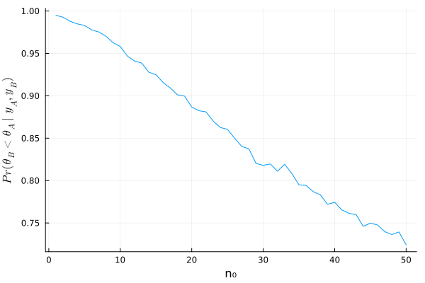
c)
answer a’
θ_A_mc = rand(dist_A, 10000) θ_B_mc = rand(dist_B, 10000) y_A_mc = rand.(Poisson.(θ_A_mc)) y_B_mc = rand.(Poisson.(θ_B_mc)) mean(y_A_mc .> y_B_mc)
0.6953
以上より、 \[ \text{Pr}(\tilde{Y}_B < \tilde{Y}_A \mid \boldsymbol{y}_A, \boldsymbol{y}_B) \fallingdotseq 0.695 \]
answer b’
t_mc = [] for n₀ in 1:50 θ_B_mc = rand(dist_θ_B(n₀), 10000) y_B_mc = rand.(Poisson.(θ_B_mc)) append!(t_mc, mean(θ_B_mc .< θ_A_mc)) end
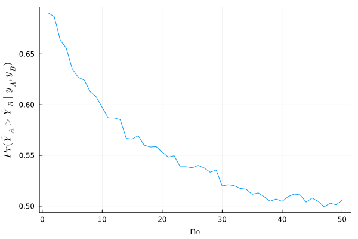
4.3
a)
answer
using Distributions using Random Random.seed!(1234) y_A = [12, 9, 12, 14, 13, 13, 15, 8, 15, 6] y_B = [11, 11, 10, 9, 9, 8, 7, 10, 6, 8, 8, 9, 7] n_A, sy_A = length(y_A) , sum(y_A) n_B, sy_B = length(y_B) , sum(y_B) a₀_A = 120 b₀_A = 10 a₀_B = 12 b₀_B = 1 # Posterior distributions dist_A = Gamma(a₀_A + sy_A, 1/(b₀_A + n_A)) dist_B = Gamma(a₀_B + sy_B, 1/(b₀_B + n_B)) n_A = 10 # %% t_mc = [] for s in 1:1000 θ_A = rand(dist_A) y_A_mc = rand(Poisson(θ_A), n_A) avg = mean(y_A_mc) sd = std(y_A_mc) append!(t_mc, avg/sd ) end
:RESULTS:
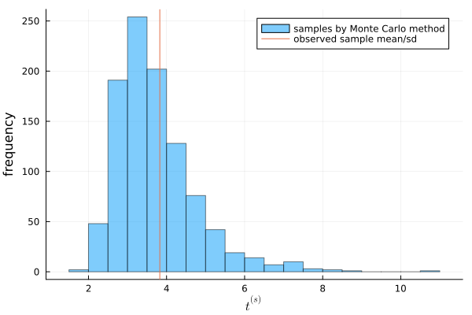
You can see that the observed value of \(t\) is in the middle of the distribution of \(t^{(s)}\). From this, we can conclude that the Poisson model is a good fit for the population of this data.
b)
answer
t_mc = [] for s in 1:1000 θ_B = rand(dist_B) y_B_mc = rand(Poisson(θ_B), n_B) avg = mean(y_B_mc) sd = std(y_B_mc) append!(t_mc, avg/sd ) end
:RESULTS:
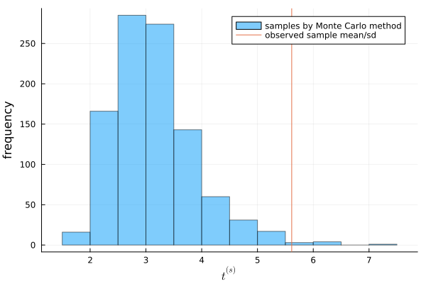
You can see that the observed value of \(t\) is located at the quite edge of the distribution. From this, we can conclude that the Poisson model cannot reflect the feature of the population.
4.4
a)
answer
3.4 d) ii の結果より、 mixture prior distribution を用いたときの posterior distribution は \(\frac{3}{4} \text{Beta}(17, 36) + \frac{1}{4} \text{Beta}(23, 30)\) に従う。プロットは以下の通り。
using Distributions using Random using LaTeXStrings using Plots mm = MixtureModel( [Beta(17, 36), Beta(23, 30)], [0.75, 0.25] ) mm_samples = rand(mm, 10_000_000) histogram( mm_samples, label="mixture model posterior" , bins=1000, normalize=:pdf, xlabel="θ", ylabel=L"p(\theta \mid y)" )
:RESULTS:
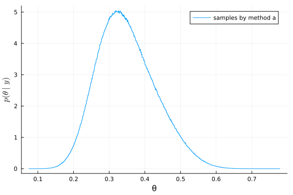
95% quantile-based posterior confidence interval は以下のように、サンプルの quantile を用いて近似値を求めることができる。
quantile(mm_samples, [0.025, 0.975])
2-element Vector{Float64}:
0.2098971517541345
0.5230478539666719
b)
answer
w = 0.75 z_mc = [] for s in 1:10_000_000 x = rand(Bernoulli(w), 1) dist = x == 1 ? Beta(17, 36) : Beta(23, 30) z = rand(dist) append!(z_mc, z) end
:RESULTS:
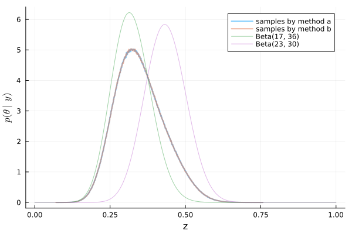
どちらも同じ形状の分布になる！
4.5
a)
answer
\(Y_i \sim \text{Poisson}(\theta X_i)\)より、尤度は
\begin{align*} p((Y_1, X_1), \dots, (Y_n, X_n) \mid \theta ) &= \prod_{i=1}^n p(Y_i, X_i \mid \theta ) \quad (\because \text{ i.i.d. })\\ &= \prod_{i=1}^n p(Y_i \mid X_i, \theta ) p(X_i \mid \theta ) \\ &\propto \prod_{i=1}^n p(Y_i \mid X_i, \theta ) \quad (\because X_i \text{ is independent from } \theta) \\ &= \prod_{i=1}^n \frac{(\theta X_i)^{Y_i} e^{-\theta X_i}}{Y_i!} \\ &\propto \theta^{ \sum_{i=1}^n Y_i } e^{-\theta \sum_{i=1}^n X_i} \end{align*}また、\(\theta \sim \text{gamma}(a, b)\)より、事前分布は、
\begin{align*} p(\theta) &= \frac{b^a}{\Gamma(a)} \theta^{a-1} e^{-b \theta} \\ &\propto \theta^{a-1} e^{-b \theta} \end{align*}ベイズの定理より、事後分布は、
\begin{align*} p(\theta \mid (Y_1, X_1), \dots, (Y_n, X_n)) &\propto \theta^{ \sum_{i=1}^n Y_i } e^{-\theta \sum_{i=1}^n X_i} \times \theta^{a-1} e^{-b \theta} \\ &\propto \theta^{ a-1 + \sum_{i=1}^n Y_i } e^{ - \theta (b + \sum_{i=1}^n X_i) } \end{align*}以上より、事後分布は、 Gamma(\(a + \sum_{i=1}^n Y_i, b + \sum_{i=1}^n X_i\)) に従う。
b)
answer
cancer_noreact=DataFrame(readdlm("./Exercises/cancer_noreact.dat", skipstart=1), :auto); sx₁, sy₁ = sum.(eachcol(cancer_noreact))
cancer_react=DataFrame(readdlm("./Exercises/cancer_react.dat", skipstart=1), :auto); sx₂, sy₂ = sum.(eachcol(cancer_react))
nuclear reactors に近い地域では、
\begin{align*} \sum_{i=1}^n X_i &= 95 \\ \sum_{i=1}^n Y_i &= 256 \end{align*}nuclear reactors に近くない地域では、
\begin{align*} \sum_{i=1}^n X_i &= 1037 \\ \sum_{i=1}^n Y_i &= 2285 \end{align*}であることから、\(\theta_1, \theta_2\)それぞれの事後分布は、
\begin{align*} \theta_1 &\sim \text{Gamma}(a_1 + 2285, b_1 + 1037) \\ \theta_2 &\sim \text{Gamma}(a_2 + 256, b_2 + 95) \end{align*}である。
c)
i
answer
a₁, b₁ = 2.2 * 100, 100 a₂, b₂ = 2.2 * 100, 100 # Posterior distributions dist_1 = Gamma(a₁ + sy₁, 1/(b₁ + sx₁)) dist_2 = Gamma(a₂ + sy₂, 1/(b₂ + sx₂)) mean_1 = round((a₁ + sy₁) /(b₁ + sx₁), digits=2) mean_2 = round((a₂ + sy₂) /(b₂ + sx₂), digits=2) ["Posterior mean of Group 1: $mean_1" , "Posterior mean of Group 2: $mean_2"]
| Posterior mean of Group 1: 2.2 |
| Posterior mean of Group 2: 2.44 |
# 95% quantile-based confidence intervals ci_1 = round.(quantile.(dist_1, [0.025, 0.975]), digits=2) ci_2 = round.(quantile.(dist_2, [0.025, 0.975]), digits=2) ["95% CI of Group 1: $ci_1" , "95% CI of Group 2: $ci_2"]
| 95% CI of Group 1: [2.12, 2.29] |
| 95% CI of Group 2: [2.23, 2.67] |
θ₁_mc = rand(dist_1, 10000); θ₂_mc = rand(dist_2, 10000); "Pr(θ₂>θ₁|data) = $(mean(θ₁_mc .< θ₂_mc))"
"Pr(θ₂>θ₁|data) = 0.9788"
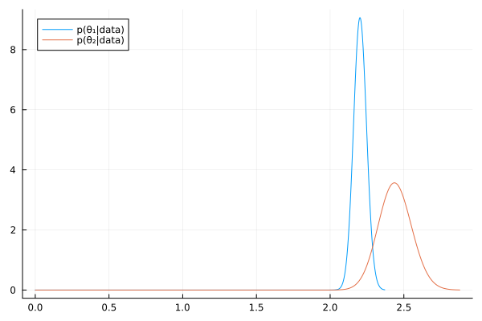
ii.
answer
a₁, b₁ = 2.2 * 100, 100 a₂, b₂ = 2.2 , 1 # Posterior distributions dist_1 = Gamma(a₁ + sy₁, 1/(b₁ + sx₁)) dist_2 = Gamma(a₂ + sy₂, 1/(b₂ + sx₂)) mean_1 = round((a₁ + sy₁) /(b₁ + sx₁), digits=2) mean_2 = round((a₂ + sy₂) /(b₂ + sx₂), digits=2) ["Posterior mean of Group 1: $mean_1" , "Posterior mean of Group 2: $mean_2"]
| Posterior mean of Group 1: 2.2 |
| Posterior mean of Group 2: 2.69 |
# 95% quantile-based confidence intervals ci_1 = round.(quantile.(dist_1, [0.025, 0.975]), digits=2) ci_2 = round.(quantile.(dist_2, [0.025, 0.975]), digits=2) ["95% CI of Group 1: $ci_1" , "95% CI of Group 2: $ci_2"]
| 95% CI of Group 1: [2.12, 2.29] |
| 95% CI of Group 2: [2.37, 3.03] |
θ₁_mc = rand(dist_1, 10000); θ₂_mc = rand(dist_2, 10000); "Pr(θ₂>θ₁|data) = $(mean(θ₁_mc .< θ₂_mc))"
"Pr(θ₂>θ₁|data) = 0.9992"

iii.
answer
a₁, b₁ = 2.2 , 1 a₂, b₂ = 2.2 , 1 # Posterior distributions dist_1 = Gamma(a₁ + sy₁, 1/(b₁ + sx₁)) dist_2 = Gamma(a₂ + sy₂, 1/(b₂ + sx₂)) mean_1 = round((a₁ + sy₁) /(b₁ + sx₁), digits=2) mean_2 = round((a₂ + sy₂) /(b₂ + sx₂), digits=2) ["Posterior mean of Group 1: $mean_1" , "Posterior mean of Group 2: $mean_2"]
| Posterior mean of Group 1: 2.2 |
| Posterior mean of Group 2: 2.69 |
# 95% quantile-based confidence intervals ci_1 = round.(quantile.(dist_1, [0.025, 0.975]), digits=2) ci_2 = round.(quantile.(dist_2, [0.025, 0.975]), digits=2) ["95% CI of Group 1: $ci_1" , "95% CI of Group 2: $ci_2"]
| 95% CI of Group 1: [2.11, 2.29] |
| 95% CI of Group 2: [2.37, 3.03] |
θ₁_mc = rand(dist_1, 10000); θ₂_mc = rand(dist_2, 10000); "Pr(θ₂>θ₁|data) = $(mean(θ₁_mc .< θ₂_mc))"
"Pr(θ₂>θ₁|data) = 0.9984"
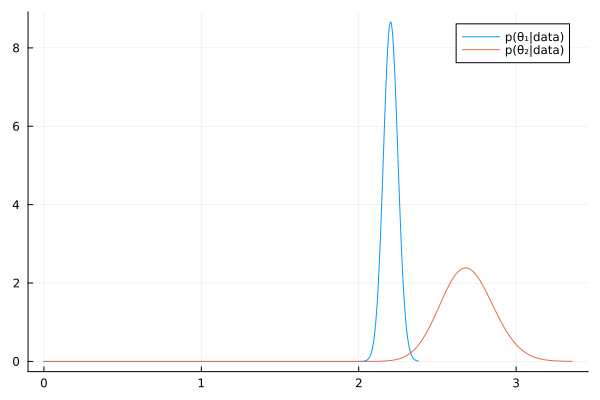
d)
answer
「人口が多い地域は、人口が少ない地域よりも医療が充実しており、がんになった場合の生存率が高い可能性がある」など考えることもできるので、人口規模と致死率が独立していると考えるのは必ずしも合理的であると言えない。
そこで、 \( \theta_i \sim \exp(\beta_0 + \beta_1 X_i) \) などとして、階層モデルを考えるなどする。
e)
Answer
のような形で、それぞれの事前分布を重み付きの混合分布にすることで、事前従属にできる。
4.6
answer
a, b = 1, 1 θ_prior_mc = rand(Beta(a, b), 1000000) γ_prior_mc = map(θ -> log(θ/(1-θ)), θ_prior_mc)
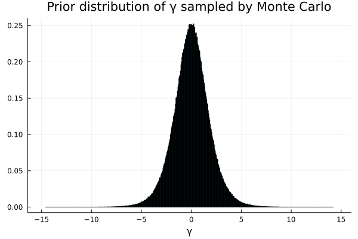
This prior is informative about \( \gamma \) because this gives us information that \( \gamma \) is symmetrically distributed around 0.
4.7
a)
answer
Random.seed!(1234) dist_inv_σ² = Gamma(10, 1/2.5) dist_θ = σ² -> Normal(4.1, σ²/20) π = [0.31, 0.46, 0.23] t = Multinomial(1, π) dist_list = (θ, σ) -> [Normal(θ, σ), Normal(2θ, 2σ), Normal(3θ, 3σ)] y_mc = Array{Float64, 1}() for i in 1:5000 inv_σ² = rand(dist_inv_σ²) σ² = 1 / inv_σ² σ = sqrt(σ²) θ = rand(dist_θ(σ²)) w = rand(t) .== 1 dist_pred = dist_list(θ, σ)[w][1] y = rand(dist_pred) append!(y_mc, y) end
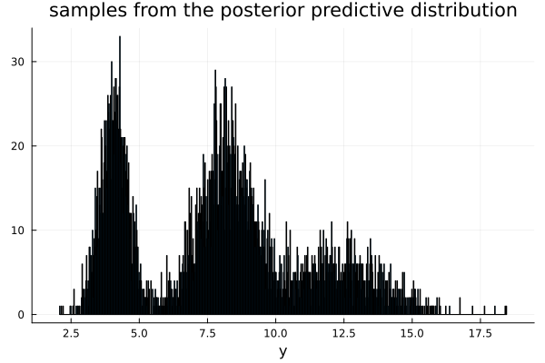
b)
answer
# 75% quantile prob = 0.75 lower = (1 - prob) / 2 upper = 1 - lower ci_quantile = quantile(y_mc, [lower, upper])
2-element Vector{Float64}:
3.954945418674755
12.059043291517227
c)
answer
# i sorted_y_mc = sort(y_mc) y_density = kerneldensity(y_mc) y_density_normalized = y_density ./ sum(y_density) # ii y_density_sorted = sort(y_density_normalized, rev=true) # iii y_density_sorted_cumsum = cumsum(y_density_sorted) threshhold_cumsum_idx = findfirst(x -> x > prob, y_density_sorted_cumsum) y_density_sorted_cumsum[threshhold_cumsum_idx] threshhold_prob = y_density_sorted[threshhold_cumsum_idx]
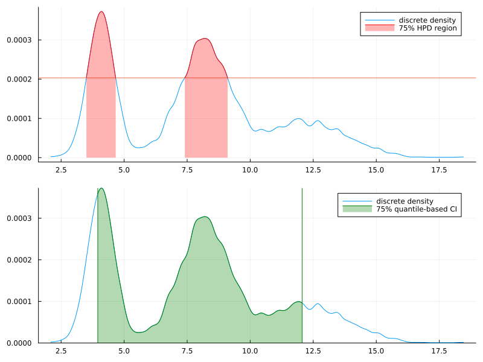
d)
answer
The model is as follows:
\begin{align*} \boldsymbol{w} = \begin{pmatrix} w_1 \\ w_2 \\ w_3 \end{pmatrix} &\sim \text{Multinomial}(0.31, 0.46, 0.23) \\ \sigma^2 &\sim \text{InverseGamma}(10, 2.5) \\ \theta | \sigma^2 &\sim \text{Normal}(4.1, \sigma^2/20) \\ y | \theta, \sigma^2, \boldsymbol{w} &\sim w_1 \mathcal{N}(\theta, \sigma^2) + w_2 \mathcal{N}(2 \theta, 2 \sigma^2) + w_3 \mathcal{N}(3 \theta, 3 \sigma^2) \end{align*}Then the marginal distribution of \(Y\) is
\begin{align*} p(y) &= \int \int \int p(y, \theta, \sigma^2, \boldsymbol{w}) d\theta d\sigma^2 d\boldsymbol{w} \\ &= \int \int \int p(y | \theta, \sigma^2, \boldsymbol{w}) p(\theta | \sigma^2) p(\sigma^2) p(\boldsymbol{w}) d\theta d\sigma^2 d\boldsymbol{w}. \\ \end{align*}Therefore, \(Y\) can be sampled from the following procedure:
- Sample \(\sigma^{2(s)} \sim p(\sigma^2) \).
- Sample \(\theta^{(s)} \sim p(\theta | \sigma^{2(s)}) \).
- Sample \(\boldsymbol{w}^{(s)} \sim p(\boldsymbol{w})\).
- Sample \(y^{(s)} \sim p(y | \theta^{(s)}, \sigma^{2(s)}, \boldsymbol{w}^{(s)})\).
Then, the empirical distribution of \(\{y^{(1)}, \dots, y^{(s)}\} \to p(y)\) as \(s \to \infty\).
4.8
a)
answer
menchild_bach = [] open("../../Exercises/menchild30bach.dat") do file for line in eachline(file) append!(menchild_bach, parse.(Int, split(line))) end end menchild_nobach = [] open("../../Exercises/menchild30nobach.dat") do file for line in eachline(file) append!(menchild_nobach, parse.(Int, split(line))) end end # data sy_A = sum(menchild_bach) n_A = length(menchild_bach) sy_B = sum(menchild_nobach) n_B = length(menchild_nobach) # prior parameters a₀ = 2 b₀ = 1 # Posterior distributions dist_θ_A = Gamma(a₀ + sy_A, 1/(b₀ + n_A)) dist_θ_B = Gamma(a₀ + sy_B, 1/(b₀ + n_B)) # Monte Carlo samples θ_A_mc = rand(dist_θ_A, 5000) θ_B_mc = rand(dist_θ_B, 5000) y_A_mc = rand.(Poisson.(θ_A_mc)) y_B_mc = rand.(Poisson.(θ_B_mc))
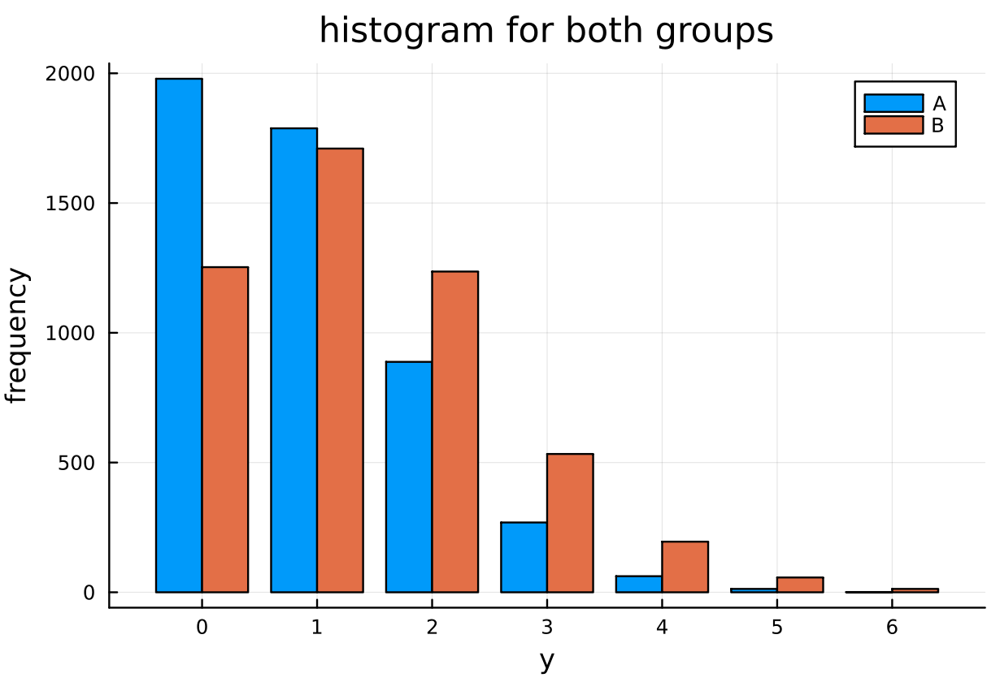
b)
answer
for \(\theta_B - \theta_A\):
quantile(θ_B_mc .- θ_A_mc, [0.025, 0.975])
2-element Vector{Float64}:
0.14453032216400238
0.7359150252471184
for \(\hat{Y}_B - \hat{Y}_A\):
quantile(y_B_mc .- y_A_mc, [0.025, 0.975])
2-element Vector{Float64}:
-2.0
4.0
c)
answer
(a₀ + sy_B) / (b₀ + n_B)
1.4018264840182648
\(\hat{\theta} = 1.4 \)はほぼ\(\theta_B\)の事後平均。
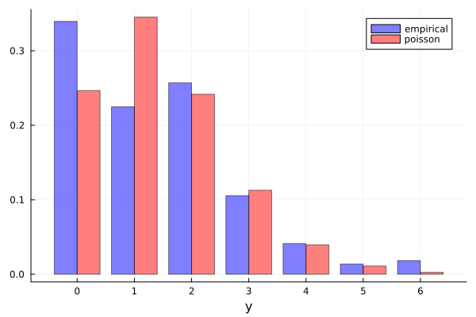
モデルはデータに比べて、子供の数が 1 人の人の割合が多く、0人と 2 人の割合が少ない。 Poisson モデルは峰が２つあるような分布を表現できないので、もし母集団の分布が上の empirical distribution のように、0と 2 の２点でピークを持つような分布であれば、Poisson モデルは適切ではないと考えられる。
d)
answer
obs_zero = sum(menchild_nobach .== 0) obs_one = sum(menchild_nobach .== 1) num_zero = [] num_one = [] for θ in θ_B_mc y_mc = rand(Poisson(θ), n_B) push!(num_zero, sum(y_mc .== 0)) push!(num_one, sum(y_mc .== 1)) end
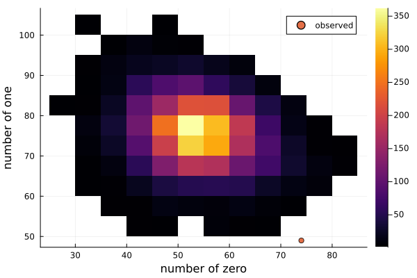
上図より、Poisson モデルが母集団の真の分布であると仮定すると、今回の標本が観測される可能性は極めて低いことがわかる。よって、Poisson モデルは適切ではないと考えられる。
Chapter 5
5.1
a)
answer
school1 = readdlm("./Exercises/school1.dat") school2 = readdlm("./Exercises/school2.dat") school3 = readdlm("./Exercises/school3.dat") # set prior parameters μ₀ = 5 σ₀² = 4 κ₀ = 1 ν₀ = 2 # %% n1 = length(school1) n2 = length(school2) n3 = length(school3) ȳ₁ = mean(school1) ȳ₂ = mean(school2) ȳ₃ = mean(school3) s₁² = var(school1) s₂² = var(school2) s₃² = var(school3) function calc_posterior_param(n, ȳ, s², μ₀, σ₀², κ₀, ν₀) κn = κ₀ + n νn = ν₀ + n μn = (κ₀ * μ₀ + n * ȳ) / κn σ²n = (ν₀ * σ₀² + (n-1) * s² + (κ₀ * n * (ȳ - μ₀)^2)/ κn ) / νn return κn, νn, μn, σ²n end function calc_mc(n, ȳ, s², μ₀, σ₀², κ₀, ν₀, n_mc) κn, νn, μn, σ²n = calc_posterior_param(n, ȳ, s², μ₀, σ₀², κ₀, ν₀) dist_inverse_σ² = Gamma(νn/2, 2/(νn * σ²n)) σ²_mc = rand(dist_inverse_σ², n_mc) .^ -1 calc_θ_mc = σ² -> rand(Normal(μn, sqrt(σ²/κn))) θ_mc = calc_θ_mc.(σ²_mc) return θ_mc, sqrt.(σ²_mc) end function write_quantile_ci(θ_mc, σ_mc, ci) lower = (1 - ci) / 2 upper = 1 - lower θ_quantile = round.(quantile(θ_mc, [lower, upper]), digits=3) σ_quantile = round.(quantile(σ_mc, [lower, upper]), digits=3) res = ["$(θ_quantile[1]) < θ < $(θ_quantile[2])" ,"$(σ_quantile[1]) < σ < $(σ_quantile[2])"] return res end
# School 1 θ₁_mc, σ₁_mc = calc_mc(n1, ȳ₁, s₁², μ₀, σ₀², κ₀, ν₀, 5000); write_quantile_ci(θ₁_mc, σ₁_mc, 0.95)
2-element Vector{String}:
"7.746 < θ < 10.814"
"2.985 < σ < 5.181"
# School 2 θ₂_mc, σ₂_mc = calc_mc(n2, ȳ₂, s₂², μ₀, σ₀², κ₀, ν₀, 5000); write_quantile_ci(θ₂_mc, σ₂_mc, 0.95)
2-element Vector{String}:
"5.24 < θ < 8.753"
"3.356 < σ < 5.91"
# School 3 θ₃_mc, σ₃_mc = calc_mc(n3, ȳ₃, s₃², μ₀, σ₀², κ₀, ν₀, 5000); write_quantile_ci(θ₃_mc, σ₃_mc, 0.95)
2-element Vector{String}:
"6.129 < θ < 9.421"
"2.818 < σ < 5.114"
b)
answer
θ_mcs = [θ₁_mc, θ₂_mc, θ₃_mc] perms(l) = isempty(l) ? [l] : [[x; y] for x in l for y in perms(setdiff(l, x))] for perm in perms([1,2,3]) i, j, k = perm p = mean(θ_mcs[i] .< θ_mcs[j] .< θ_mcs[k]) println("p(θ$i < θ$j < θ$k) = $p") end
p(θ1 < θ2 < θ3) = 0.0084 p(θ1 < θ3 < θ2) = 0.005 p(θ2 < θ1 < θ3) = 0.0904 p(θ2 < θ3 < θ1) = 0.6506 p(θ3 < θ1 < θ2) = 0.02 p(θ3 < θ2 < θ1) = 0.2256
c)
answer
function sample_posterior_predictive(θ_mc, σ_mc) ỹ_mc = rand.(Normal.(θ_mc, σ_mc)) return ỹ_mc end ỹ₁_mc = sample_posterior_predictive(θ₁_mc, σ₁_mc) ỹ₂_mc = sample_posterior_predictive(θ₂_mc, σ₂_mc) ỹ₃_mc = sample_posterior_predictive(θ₃_mc, σ₃_mc) ỹ_mcs = [ỹ₁_mc, ỹ₂_mc, ỹ₃_mc] for perm in perms([1,2,3]) i, j, k = perm p = mean(ỹ_mcs[i] .< ỹ_mcs[j] .< ỹ_mcs[k]) println("p(ỹ$i < ỹ$j < ỹ$k) = $p") end
p(ỹ1 < ỹ2 < ỹ3) = 0.109 p(ỹ1 < ỹ3 < ỹ2) = 0.1008 p(ỹ2 < ỹ1 < ỹ3) = 0.1882 p(ỹ2 < ỹ3 < ỹ1) = 0.2634 p(ỹ3 < ỹ1 < ỹ2) = 0.1498 p(ỹ3 < ỹ2 < ỹ1) = 0.1888
d)
answer
上の計算結果を用いて、
\begin{align*} Pr(\theta_1 > \theta_2, \theta_1 > \theta_3 | \text{data}) &= Pr(\theta_1 > \theta_2 > \theta_3 | \text{data}) + Pr(\theta_1 > \theta_3 > \theta_2 | \text{data}) \\ &= 0.6506 + 0.2256 = 0.8762 \\ \\ Pr(\tilde{Y}_1 > \tilde{Y}_2, \tilde{Y}_1 > \tilde{Y}_3 | \text{data}) &= Pr(\tilde{Y}_1 > \tilde{Y}_2 > \tilde{Y}_3 | \text{data}) + Pr(\tilde{Y}_1 > \tilde{Y}_3 > \tilde{Y}_2 | \text{data}) \\ &= 0.2634 + 0.1888 = 0.4522 \end{align*}5.2
answer
μ₀ = 75 σ₀² = 100 # %% n_A = 16 n_B = 16 ȳ_A = 75.2 ȳ_B = 77.5 s_A = 7.3 s_B = 8.1 calc_μn = (n, ȳ, μ₀, κ₀) -> (κ₀ * μ₀ + n * ȳ) / (κ₀ + n) calc_σ²n = (n, ȳ, s², σ₀², κ₀, ν₀) -> (ν₀ * σ₀² + (n-1) * s² + (κ₀ * n * (ȳ - μ₀)^2) / (κ₀ + n)) / (ν₀ + n) function calc_posterior_param(n, ȳ, s², μ₀, σ₀², κ₀, ν₀) κn = κ₀ + n νn = ν₀ + n μn = (κ₀ * μ₀ + n * ȳ) / κn σ²n = (ν₀ * σ₀² + (n-1) * s² + (κ₀ * n * (ȳ - μ₀)^2)/ κn ) / νn return κn, νn, μn, σ²n end function calc_mc(n, ȳ, s², μ₀, σ₀², κ₀, ν₀, n_mc) κn, νn, μn, σ²n = calc_posterior_param(n, ȳ, s², μ₀, σ₀², κ₀, ν₀) dist_inverse_σ² = Gamma(νn/2, 2/(νn * σ²n)) σ²_mc = rand(dist_inverse_σ², n_mc) .^ -1 calc_θ_mc = σ² -> rand(Normal(μn, sqrt(σ²/κn))) θ_mc = calc_θ_mc.(σ²_mc) return θ_mc, sqrt.(σ²_mc) end m = 10000 prob_A_lt_B = [] for k in [2^i for i in 0:5] κ₀, ν₀ = k, k θ_mc_A, σ_mc_A = calc_mc(n_A, ȳ_A, s_A^2, μ₀, σ₀², κ₀, ν₀, m) θ_mc_B, σ_mc_B = calc_mc(n_B, ȳ_B, s_B^2, μ₀, σ₀², κ₀, ν₀, m) prob = mean(θ_mc_A .< θ_mc_B) push!(prob_A_lt_B, prob) end
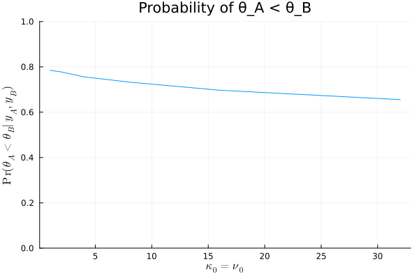
prior のパラメータ \(\kappa_0, \nu_0\) を大きくとるほど、事後分布に対するデータの影響が相対的に小さくなり、 \(\theta_A < \theta_B\)の事後確率は減少していることがわかるが、同時に \(\kappa_0, \nu_0\)の値を上の範囲でいくら変えても、 \(\theta_A < \theta_B\)の確率は 70%程度であることがいえる。
5.3
answer
marginal posterior distribution of \(\theta\)
where
\begin{align*} \kappa_n &= \kappa_0 + n \\ \mu_n &= \frac{\kappa_0 \mu_0 + n \bar{y}}{\kappa_n} \\ \nu_n &= \nu_0 + n \\ \sigma_n^2 &= \frac{1}{\nu_n} \left( \nu_0 \sigma_0^2 + (n-1)s^2 + \frac{\kappa_0 n}{\kappa_n} (\bar{y} - \mu_0)^2 \right) \\ \tau_n^2 &= \frac{\nu_n \sigma_n^2}{\kappa_n} \\ \end{align*}marginal posterior distribution of \(\tilde{\sigma}^2\)
\(\sigma^2\)の marginal posterior distribution は、
\begin{align*} p(\sigma^2 | y_1, \dots, y_n) & \propto p(\sigma^2) p(y_1, \dots, y_n | \sigma^2) \\ &= p(\sigma^2) \int p(y_1, \dots, y_n | \theta, \sigma^2) p(\theta | \sigma^2) d\theta \\ \end{align*}となる。
ここで、
\begin{equation} \label{eq:ex5-3.1} \begin{aligned}[b] \sum_{i=1}^n (y_i - \theta)^2 &= \sum_{i=1}^n (y_i - \bar{y} + \bar{y} - \theta)^2 \\ &= \sum_{i=1}^n (y_i - \bar{y})^2 + n (\bar{y} - \theta)^2 + 2 (\bar{y} - \theta) \sum_{i=1}^n (y_i - \bar{y}) \\ &= \sum_{i=1}^n (y_i - \bar{y})^2 + n (\bar{y} - \theta)^2 \\ &= n (\theta - \bar{y})^2 + (n-1)s^2 \\ \end{aligned} \end{equation} \begin{equation} \label{eq:ex5-3.2} \begin{aligned} A(x - a)^2 + B(x - b)^2 &= (A + B)(x - c)^2 + \frac{AB}{A + B}(a - b)^2 \\ \text{where } c &= \frac{aA + bB}{A + B} \\ \end{aligned} \end{equation}を用いると、
\begin{align*} p(y_1, \dots, y_n | \theta, \sigma^2) p(\theta | \sigma^2) &= \prod_{i=1}^n p(y_i | \theta, \sigma^2) p(\theta | \sigma^2) \\ &= \prod_{i=1}^n \left( \frac{1}{\sqrt{2 \pi \sigma^2}} \exp \left( - \frac{(y_i - \theta)^2}{2 \sigma^2} \right) \right) \left( \frac{\sqrt{\kappa_0} }{\sqrt{2 \pi \sigma^2}} \exp \left( - \frac{ \kappa_0 (\theta - \mu_0)^2}{2 \sigma^2} \right) \right) \\ &= (2 \pi \sigma^2)^{-\frac{n + 1}{2} } \sqrt{\kappa_0} \exp \left( - \frac{1}{2 \sigma^2} \sum_{i=1}^n (y_i - \theta)^2 \right) \exp \left( - \frac{\kappa_0}{2 \sigma^2} (\theta - \mu_0)^2 \right) \\ &= (2 \pi \sigma^2)^{-\frac{n + 1}{2} } \sqrt{\kappa_0} \exp \left( - \frac{1}{2 \sigma^2} ( n (\theta - \bar{y})^2 + (n-1)s^2 ) \right) \\ & \qquad \times \exp \left( - \frac{\kappa_0}{2 \sigma^2} (\theta - \mu_0)^2 \right) \quad (\because \eqref{eq:ex5-3.1}) \\ &= (2 \pi \sigma^2)^{-\frac{n + 1}{2} } \sqrt{\kappa_0} \exp \left( - \frac{1}{2 \sigma^2} ( n(\theta - \bar{y})^2 + \kappa_0 (\theta - \mu_0)^2 ) \right) \exp \left( - \frac{1}{2 \sigma^2} (n-1)s^2 \right) \\ &= (2 \pi \sigma^2)^{-\frac{n + 1}{2} } \sqrt{\kappa_0} \exp \left( - \frac{1}{2 \sigma^2} ( (n + \kappa_0)(\theta - \theta^{\ast})^2 + r ) \right) \exp \left( - \frac{1}{2 \sigma^2} (n-1)s^2 \right) \\ & \qquad \text{ where } \theta^{\ast} = \frac{n \bar{y} + \kappa_0 \mu_0}{n + \kappa_0}, \quad r = \frac{n \kappa_0}{n + \kappa_0} (\bar{y} - \mu_0)^2 \qquad \qquad \qquad \qquad \qquad (\because \eqref{eq:ex5-3.2}) \\ &= (2 \pi \sigma^2)^{-\frac{n + 1}{2} } \sqrt{\kappa_0} \exp \left( - \frac{ n + \kappa_0}{2 \sigma^2} (\theta - \theta^{\ast})^2 \right) \exp \left( - \frac{r}{2 \sigma^2} \right) \exp \left( - \frac{1}{2 \sigma^2} (n-1)s^2 \right) \\ \end{align*}となるので、
\begin{align*} p(\sigma^2 | y_1, \dots, y_n) & \propto p(\sigma^2) p(y_1, \dots, y_n | \sigma^2) \\ &= p(\sigma^2) \int p(y_1, \dots, y_n | \theta, \sigma^2) p(\theta | \sigma^2) d\theta \\ &= p(\sigma^2) \int (2 \pi \sigma^2)^{-\frac{n + 1}{2} } \sqrt{\kappa_0} \exp \left( - \frac{ n + \kappa_0}{2 \sigma^2} (\theta - \theta^{\ast})^2 \right) \exp \left( - \frac{r}{2 \sigma^2} \right) \exp \left( - \frac{1}{2 \sigma^2} (n-1)s^2 \right) d\theta \\ &= p(\sigma^2) (2 \pi \sigma^2)^{-\frac{n + 1}{2} } \sqrt{\kappa_0} \exp \left( - \frac{1}{2 \sigma^2} ( (n-1)s^2 + r) \right) \\ & \qquad \times \left(2 \pi \frac{\sigma^2}{n + \kappa_0} \right)^{\frac{1}{2} } \int \left(2 \pi \frac{\sigma^2}{n + \kappa_0} \right)^{-\frac{1}{2} } \exp \left( - \frac{ n + \kappa_0}{2 \sigma^2} (\theta - \theta^{\ast})^2 \right) d\theta \\ &= p(\sigma^2) (2 \pi \sigma^2)^{-\frac{n + 1}{2} } \sqrt{\kappa_0} \exp \left( - \frac{1}{2 \sigma^2} ( (n-1)s^2 + r) \right) \left(2 \pi \frac{\sigma^2}{n + \kappa_0} \right)^{\frac{1}{2} } \\ & \propto p(\sigma^2) (\sigma^2)^{- \frac{n}{2} } \exp \left( - \frac{1}{2 \sigma^2} ( (n-1)s^2 + r) \right) \\ & \propto (\sigma^2)^{- (\frac{ \nu_0 }{2} + 1 )} \exp \left( - \frac{\nu_0 \sigma_0^2}{2 \sigma^2} \right) (\sigma^2)^{- \frac{n}{2} } \exp \left( - \frac{1}{2 \sigma^2} ( (n-1)s^2 + r) \right) \\ &= (\sigma^2)^{- (\frac{ \nu_0 + n }{2} + 1 )} \exp \left( - \frac{\nu_0 \sigma_0^2 + (n-1)s^2 + r}{2 \sigma^2} \right) \\ &= (\sigma^2)^{- (\frac{ \nu_0 + n }{2} + 1 )} \exp \left( - \frac{\nu_0 + n}{2 \sigma^2} \left( \frac{\nu_0 \sigma_0^2 + (n-1)s^2 + \frac{\kappa_0 n}{\kappa_0 + n} (\bar{y} - \mu_0)^2 }{\nu_0 + n} \right) \right) \\ &\propto \text{dinverse-gamma}(\sigma^2, \frac{\nu_n}{2}, \frac{\nu_n \sigma_n^2}{2}) \\ & \text{ where } \nu_n = \nu_0 + n, \quad \sigma_n^2 = \frac{1}{\nu_n}\left[ \nu_0 \sigma_0^2 + (n-1)s^2 + \frac{\kappa_0 n}{\kappa_n} (\bar{y} - \mu_0)^2 \right] \end{align*}よって、
\begin{equation*} \left| \frac{d \sigma^2}{d \tilde{\sigma}^2} \right| = (\tilde{\sigma}^2)^{-2} \end{equation*}より
\begin{align*} p( \tilde{\sigma}^2 | y_1, \dots, y_n) &= p( (\tilde{\sigma}^2)^{-1} | y_1, \dots, y_n) \left| \frac{d \sigma^2}{d \tilde{\sigma}^2} \right| \\ &= \text{dinverse-gamma}(\tilde{\sigma}^{-2} | \frac{\nu_n}{2}, \frac{\nu_n \sigma_n^2}{2}) \times (\tilde{\sigma}^2)^{-2} \\ &\propto (\tilde{\sigma}^2)^{(\frac{ \nu_0 + n }{2} + 1 )} \exp \left( - \frac{\nu_n \sigma_n^2}{2 (\tilde{\sigma}^2)^{-1} } \right) \times (\tilde{\sigma}^2)^{-2} \\ &= (\tilde{\sigma}^2)^{(\frac{ \nu_0 + n }{2} - 1 )} \exp \left( - \tilde{\sigma}^2 \frac{\nu_n \sigma_n^2}{2} \right) \\ &= \text{dgamma}(\tilde{\sigma}^2 | \frac{\nu_n}{2}, \frac{\nu_n \sigma_n^2}{2}) \end{align*}5.4
a)
answer
対数尤度は、
\begin{align*} \ell(y | \theta, \sigma^2) &= \log p(y | \theta, \sigma^2) \\ &= \log \left[ \prod_{i=1}^n \frac{1}{\sqrt{2 \pi \sigma^2}} \exp \left( - \frac{(y_i - \theta)^2}{2 \sigma^2} \right) \right] \\ &= \log \left[ (2 \pi \sigma^2)^{-\frac{n}{2} } \exp \left( - \frac{1}{2 \sigma^2} \sum_{i=1}^n (y_i - \theta)^2 \right) \right] \\ &= - \frac{n}{2} \log (2 \pi ) - \frac{n}{2} \log (\sigma^2) - \frac{1}{2 \sigma^2} \sum_{i=1}^n (y_i - \theta)^2 \\ &= - \frac{n}{2} \log (2 \pi ) - \frac{n}{2} \log (\sigma^2) - \frac{1}{2 \sigma^2} \sum_{i=1}^n (y_i^2 - 2 y_i \theta + \theta^2) \\ &= - \frac{n}{2} \log (2 \pi ) - \frac{n}{2} \log (\sigma^2) - \frac{1}{2 \sigma^2} (\sum_{i=1}^n y_i^2 - 2 \theta \sum_{i=1}^n y_i + n \theta^2) \\ \end{align*}と表せる。従って、\(\theta, \sigma^2\)による一回微分はそれぞれ、
\begin{align*} \ell_{\theta} &= - \frac{1}{2 \sigma^2} (- 2 \sum_{i=1}^n y_i + 2 n \theta) \\ &= \frac{1}{\sigma^2} (\sum_{i=1}^n y_i - n \theta) \\ \\ \ell_{\sigma^2} &= - \frac{n}{2 \sigma^2} + \frac{1}{2 (\sigma^2)^2} (\sum_{i=1}^n y_i^2 - 2 \theta \sum_{i=1}^n y_i + n \theta^2) \\ \end{align*}となる。よって、
\begin{align*} I(\theta, \sigma^2) &= \begin{pmatrix} - E[\ell_{\theta \theta}] & - E[\ell_{\theta \sigma^2}] \\ - E[\ell_{\sigma^2 \theta}] & - E[\ell_{\sigma^2 \sigma^2}] \end{pmatrix} \\ & = \begin{pmatrix} - E[- \frac{n}{\sigma^2}] & - E[\frac{n \theta - \sum y_i }{(\sigma^2)^2}] \\ - E[\frac{n \theta - \sum y_i }{(\sigma^2)^2}] & - E[\frac{n}{2 (\sigma^2)^2} - \frac{\sum (y_i - \theta)^2 }{ (\sigma^2)^3}] \end{pmatrix} \\ & = \begin{pmatrix} \frac{n}{\sigma^2} & \frac{ \sum E[y_i] - n \theta }{(\sigma^2)^2} \\ \frac{\sum E[y_i] - n \theta }{(\sigma^2)^2} & - \frac{n}{2 (\sigma^2)^2} + \frac{\sum E [(y_i - \theta)^2] }{ (\sigma^2)^3} \end{pmatrix} \\ & = \begin{pmatrix} \frac{n}{\sigma^2} & \frac{ n \theta - n \theta }{(\sigma^2)^2} \\ \frac{n \theta - n \theta }{(\sigma^2)^2} & - \frac{n}{2 (\sigma^2)^2} + \frac{n \sigma^2 }{(\sigma^2)^3} \end{pmatrix} \\ & = \begin{pmatrix} \frac{n}{\sigma^2} & 0 \\ 0 & \frac{n}{2 (\sigma^2)^2} \end{pmatrix} \\ \\ |I(\theta, \sigma^2)| &= \frac{n}{\sigma^2} \frac{n}{2 (\sigma^2)^2} \\ &= \frac{n^2}{2 (\sigma^2)^3} \\ \end{align*}となるので、Jeffreys’ prior は、
\begin{align*} p_J(\theta, \sigma^2) &\propto \sqrt{ |I(\theta, \sigma^2)|} \\ &= \sqrt{ \frac{n^2}{2 (\sigma^2)^3} } \\ &= \frac{n}{\sqrt{2} } \times (\sigma^2)^{- \frac{3}{2} } \\ &\propto (\sigma^2)^{- \frac{3}{2} } \\ \end{align*}であり、示せた。
b)
answer
where \(\bar{y^2} = \frac{1}{n} \sum_{i=1}^n y_i^2\) and \(s^2 = \frac{1}{n-1} \sum_{i=1}^n (y_i - \bar{y})^2\).
上式より、joint density は posterior density になっていることが確認できた。
5.5
a)
answer
b)
answer
従って、
\begin{align*} \log p_U(\theta, \psi) &= \frac{l(\theta, \psi | \boldsymbol{y})}{n} + c \\ &= - \frac{1}{2} \log (2\pi) + \frac{1}{2} \log \psi - \frac{\psi}{2} s^2 - \frac{\psi}{2} (\bar{y} - \theta )^2 + c \\ \end{align*}となるので、
\begin{align*} p_U(\theta, \psi) &= (2 \pi)^{- \frac{1}{2} } \psi^{ \frac{1}{2} } \exp \left( - \frac{s^2}{2} \psi \right) \exp \left( - \frac{\psi}{2} (\bar{y} - \theta )^2 \right) \exp \left( c \right) \\ &\propto \psi^{ \frac{1}{2} } \exp \left( - \frac{\psi}{2} ( \theta - \bar{y} )^2 \right) \times \psi^{ 1 - 1} \exp \left( - \frac{s^2}{2} \psi \right) \\ &\propto \text{dnormal}(\theta, \bar{y}, \psi^{-1}) \times \text{dgamma}(\psi, 1, \frac{s^2}{2}) \end{align*}c)
answer
上式より、joint density は posterior density になっていることが確認できた。
Chapter 6
6.1
a)
answer
より、 \[ E[\theta_A \theta_B] \neq E[\theta_A] E[\theta_B] \] となるが、もし\(\theta_A\)と\(\theta_B\)が独立ならば、 \( E[\theta_A \theta_B] = E[\theta_A] E[\theta_B] \) が成り立つはずである。よって、\(\theta_A\)と\(\theta_B\)は独立ではない。
また、このような同時事前分布の設定は、B群の一人当たりの子供の数が A 群の一人当たりの子供の数の実数倍であるという事前の信念がある時に正当化される。
b)
answer
c)
answer
d)
answer
menchild_bach = [] open("../../Exercises/menchild30bach.dat") do file for line in eachline(file) append!(menchild_bach, parse.(Int, split(line))) end end menchild_nobach = [] open("../../Exercises/menchild30nobach.dat") do file for line in eachline(file) append!(menchild_nobach, parse.(Int, split(line))) end end a_θ = 2 b_θ = 1 γ_prior_param = [ 2^i for i in 3:7 ] function get_θ_diff(y_A, y_B, a_θ, b_θ, a_γ, b_γ, S) sy_A = sum(y_A) n_A = length(y_A) mean_A = mean(y_A) sy_B = sum(y_B) n_B = length(y_B) mean_B = mean(y_B) θ = Vector{Float64}(undef, S) θ[1] = t = mean_A γ = Vector{Float64}(undef, S) γ[1] = g = mean_B/mean_A for s in 2:S dist_θ = Gamma(a_θ + sy_A + sy_B, 1/(b_θ + n_A + n_B * g)) t = rand(dist_θ) dist_γ = Gamma(a_γ + sy_B, 1/(b_γ + n_B * t)) g = rand(dist_γ) θ[s] = t γ[s] = g end θ_A_mc = θ θ_B_mc = θ .* γ return mean(θ_B_mc .- θ_A_mc) end function θ_diff_by_p(p, S) get_θ_diff(menchild_bach, menchild_nobach, a_θ, b_θ, p, p, S) end S = 5000 exp_diff = [] for p in γ_prior_param push!(exp_diff, θ_diff_by_p(p, S)) end exp_diff
:RESULTS:
5-element Vector{Any}:
0.38839289030002194
0.3301515531279979
0.26360712597646224
0.1972987037901306
0.1332427833449685
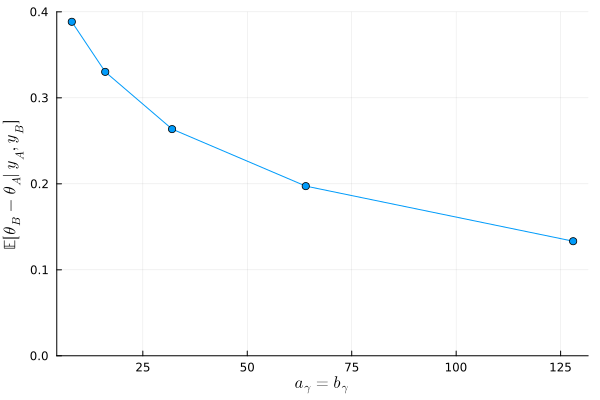
\( a_{\gamma} = b_{\gamma}\)に従うガンマ分布の期待値は 1 であり、この値が大きければ大きいほど\( \frac{\theta_B}{\theta_A} \)が 1 （すなわち、A群と B 群の子供の数の平均が等しい）という事前の信念が強いことになる。上のグラフからも、\(a_{\gamma} = b_{\gamma} \)が大きくなるにつれて、データの影響が小さくなり、事後期待値の差が小さくなっていることがわかる。
6.2
a)
answer
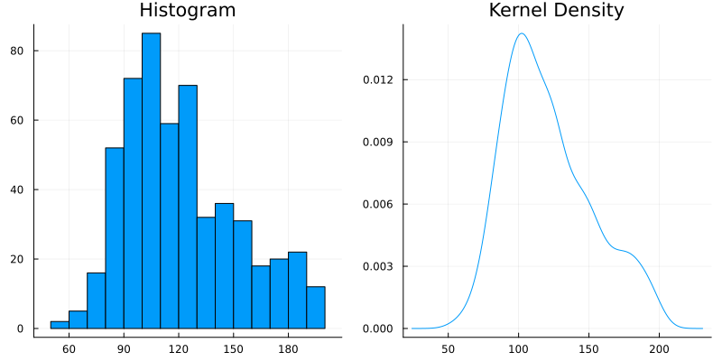
ヒストグラム及び kernel density のプロットは、左右非対称で右裾が長いという点で、正規分布の形から逸脱している。
b)
answer
同時分布は以下のように書ける。
\begin{equation} \label{eq:6.2b-2} \begin{aligned}[b] &p( Y_1, \dots, Y_n, X_1, \dots, X_n, p, \theta_1, \theta_2, \sigma_1^2, \sigma_2^2) \\ = &p( Y_1, \dots, Y_n | X_1, \dots, X_n, p, \theta_1, \theta_2, \sigma_1^2, \sigma_2^2) p( X_1, \dots, X_n, p, \theta_1, \theta_2, \sigma_1^2, \sigma_2^2) \\ = &p( Y_1, \dots, Y_n | X_1, \dots, X_n, p, \theta_1, \theta_2, \sigma_1^2, \sigma_2^2) p( X_1, \dots, X_n, p, \theta_1, \theta_2, \sigma_1^2, \sigma_2^2) \\ = &p( Y_1, \dots, Y_n | X_1, \dots, X_n, p, \theta_1, \theta_2, \sigma_1^2, \sigma_2^2) p(X_1, \dots, X_n | p) p(p) p(\theta_1) p(\theta_2) p(\sigma_1^2) p(\sigma_2^2) \\ = & \prod_{i=1}^n p(Y_i | X_i, \theta_1, \theta_2, \sigma_1^2, \sigma_2^2) \times \prod_{i=1}^n p(X_i | p) \times p(p) \times p(\theta_1) \times p(\theta_2) \times p(\sigma_1^2) \times p(\sigma_2^2) \\ = & \prod_{i; X_i = 1} p(Y_i | X_i=1, \theta_1, \sigma_1^2) \times \prod_{i; X_i = 2} p(Y_i | X_i=2, \theta_2, \sigma_2^2) \times \prod_{i=1}^n p(X_i | p) \\ & \qquad \times p(p) \times p(\theta_1) \times p(\theta_2) \times p(\sigma_1^2) \times p(\sigma_2^2) \\ \end{aligned} \end{equation}また、各\(i\)についての同時分布は以下のように書ける。
\begin{equation} \label{eq:6.2b-1} \begin{aligned}[b] & p( Y_i, X_i, p, \theta_1, \theta_2, \sigma_1^2, \sigma_2^2) \\ = &p( Y_i | X_i, p, \theta_1, \theta_2, \sigma_1^2, \sigma_2^2) p(X_i, p, \theta_1, \theta_2, \sigma_1^2, \sigma_2^2) \\ = &p( Y_i | X_i, p, \theta_1, \theta_2, \sigma_1^2, \sigma_2^2) p(X_i | p) p(p) p(\theta_1) p(\theta_2) p(\sigma_1^2) p(\sigma_2^2) \\ \end{aligned} \end{equation}the full conditional distribution of \( (X_1, \dots, X_n)\)
同様にして、
\begin{align*} & p(X_i = 2 | Y_i, p, \theta_1, \theta_2, \sigma_1^2, \sigma_2^2) \\ = & \frac{p \times \text{dnorm}(Y_i, \theta_2, \sigma_2) }{ p \times \text{dnorm}(Y_i, \theta_1, \sigma_1) + (1 - p) \times \text{dnorm}(Y_i, \theta_2, \sigma_2) } \\ \end{align*}従って、
\begin{align*} & p( X_1, \dots, X_n | Y_1, \dots, Y_n p, \theta_1, \theta_2, \sigma_1^2, \sigma_2^2) \\ = & \prod_{i=1}^n p( X_i | Y_i, \theta_1, \theta_2, \sigma_1^2) \\ = & \prod_{i, X_i = 1} p(X_i = 1 | Y_i, p, \theta_1, \theta_2, \sigma_1^2, \sigma_2^2) \times \prod_{i, X_i = 2} p(X_i = 2 | Y_i, p, \theta_1, \theta_2, \sigma_1^2, \sigma_2^2) \\ = & \prod_{i, X_i = 1} \frac{ p \times \text{dnorm}(Y_i, \theta_1, \sigma_1) }{ p \times \text{dnorm}(Y_i, \theta_1, \sigma_1) + (1 - p) \times \text{dnorm}(Y_i, \theta_2, \sigma_2) } \\ & \quad\times \prod_{i, X_i = 2} \frac{p \times \text{dnorm}(Y_i, \theta_2, \sigma_2) }{ p \times \text{dnorm}(Y_i, \theta_1, \sigma_1) + (1 - p) \times \text{dnorm}(Y_i, \theta_2, \sigma_2) } \\ \end{align*}the full conditional distribution of \(p\)
the full conditional distribution of \(\theta_1\)
なお、最後の式変形は教科書 p.70 を参照。
the full conditional distribution of \(\theta_2\)
\(\theta_2\)についても同様に計算すると、
\begin{align*} & p(\theta_2 | Y_1, \dots, Y_n, X_1, \dots, X_n, p, \theta_1, \sigma_1^2, \sigma_2^2) \\ \propto & \text{dnormal}(\theta_2, \mu_2, \tau_2), \quad \text{ where } \\ & \mu_2 = \frac{\frac{1}{\tau_0^2} \mu_0 + \frac{n_2}{\sigma_2^2} \bar{Y}_2}{\frac{1}{\tau_0^2} + \frac{n_2}{\sigma_2^2}}, \quad \tau_2^2 = \left( \frac{1}{\tau_0^2} + \frac{n_2}{\sigma_2^2} \right)^{-1} \\ \end{align*}the full conditional distribution of \(\sigma_1^2\)
the full conditional distribution of \(\sigma_2^2\)
\(\sigma_2^2\)についても同様に計算すると、
\begin{align*} & p(\sigma_2^2 | Y_1, \dots, Y_n, X_1, \dots, X_n, p, \theta_1, \theta_2, \sigma_1^2) \\ \propto & \text{dinverse-gamma}(\sigma_2^2, \frac{\nu_2}{2}, \frac{\nu_2 \sigma_2^2(\theta_2)}{2}), \quad \text{ where } \\ & \nu_2 = \nu_0 + n_2, \\ & \sigma_2^2(\theta_2) = \frac{1}{\nu_2} [ \nu_0 \sigma_0^2 + n_2 s_2^2(\theta_2) ] \\ \end{align*}c)
Answer
a = b = 1 μ₀ = 120 τ₀² = 200 σ₀² = 1000 ν₀ = 10 S = 10000 # %% function rand_X(y, p, θ₁, θ₂, σ₁², σ₂²) # probability of Xi = 1 function bin_prob(yi, p, θ₁, θ₂, σ₁², σ₂²) p1 = p * pdf(Normal(θ₁, sqrt(σ₁²)), yi) p2 = (1 - p) * pdf(Normal(θ₂, sqrt(σ₂²)), yi) prob = p1/(p1 + p2) end n = length(y) X = Vector{Float64}(undef, n) for i in 1:n X[i] = 2 - rand(Bernoulli(bin_prob(y[i], p, θ₁, θ₂, σ₁², σ₂²))) end return X end # %% function rand_p(X, a, b) n1 = sum(X .== 1) n2 = sum(X .== 2) return rand(Beta(a + n1, b + n2)) end # %% function rand_θ(μ₀, τ₀², σ², y) n = length(y) ȳ = mean(y) μn = (μ₀/τ₀² + ȳ * n/σ²) / (1/τ₀² + n/σ²) τn² = 1/(1/τ₀² + n/σ²) return rand(Normal(μn, sqrt(τn²))) end # %% function rand_σ²(θ, ν₀, σ₀², y) n = length(y) ȳ = mean(y) s² = var(y) ns² = (n-1) * s² + n * (ȳ - θ)^2 νn = ν₀ + n σn² = (ν₀ * σ₀² + ns²)/νn α = νn/2 β = νn * σn²/2 return 1/rand(Gamma(α, 1/β)) end # %% mean_y = mean(data) var_y = var(data) # %% # Gibbs Sampler THETA = Matrix{Float64}(undef, S, 2) SIGMA = Matrix{Float64}(undef, S, 2) P = [] X_MC = Matrix{Int}(undef, S, length(data)) # starting values θ₁ = θ₂ = mean_y σ₁² = σ₂² = var_y p = 0.5 for s in 1:S X_MC[s, :] = rand_X(data, p, θ₁, θ₂, σ₁², σ₂²) p = rand_p(X_MC[s, :], a, b) θ₁ = rand_θ(μ₀, τ₀², σ₁², data[X_MC[s, :] .== 1]) θ₂ = rand_θ(μ₀, τ₀², σ₂², data[X_MC[s, :] .== 2]) σ₁² = rand_σ²(θ₁, ν₀, σ₀², data[X_MC[s, :] .== 1]) σ₂² = rand_σ²(θ₂, ν₀, σ₀², data[X_MC[s, :] .== 2]) THETA[s, :] = [θ₁, θ₂] SIGMA[s, :] = [σ₁², σ₂²] push!(P, p) if s % 1000 == 0 println("Iteration: $s done") end end # %% # get smaller one for each row THETA1 = mapslices(minimum, THETA, dims = 2) THETA2 = mapslices(maximum, THETA, dims = 2) # %% # autocorrelation plot lags = 0:100 fig = plot( lags, autocor(THETA1, lags), label = L"\theta_1^(s)", xlabel = "Lag", ylabel = "Autocorrelation", title = "Autocorrelation Plot" ) fig = plot!( lags, autocor(THETA2, lags), label = L"\theta_2^(s)", ) fig
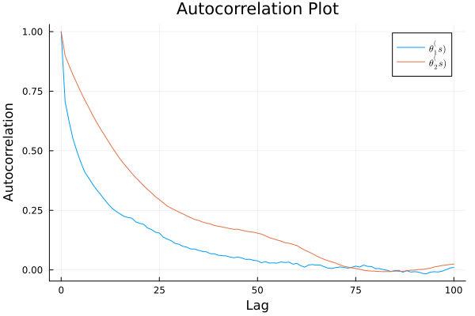
ess(Chains([THETA1 THETA2]))
ESS
parameters ess rhat
Symbol Float64 Float64
param_1 464.2489 1.0002
param_2 238.5754 1.0000
d)
Answer
# sample y function function rand_y(p, θ₁, θ₂, σ₁², σ₂²) x = 2 - rand(Bernoulli(p)) if x == 1 return rand(Normal(θ₁, sqrt(σ₁²))) else return rand(Normal(θ₂, sqrt(σ₂²))) end end # %% # Gibbs Sampler THETA = Matrix{Float64}(undef, S, 2) SIGMA = Matrix{Float64}(undef, S, 2) P = [] X_MC = Matrix{Int}(undef, S, length(data)) Y = [] # starting values θ₁ = θ₂ = mean_y σ₁² = σ₂² = var_y p = 0.5 for s in 1:S X_MC[s, :] = rand_X(data, p, θ₁, θ₂, σ₁², σ₂²) if s % 1000 == 0 println("Iteration: $s") tmp = X_MC[s, :] println(sum(tmp .== 1),", ", sum(tmp .== 2)) end p = rand_p(X_MC[s, :], a, b) θ₁ = rand_θ(μ₀, τ₀², σ₁², data[X_MC[s, :] .== 1]) θ₂ = rand_θ(μ₀, τ₀², σ₂², data[X_MC[s, :] .== 2]) σ₁² = rand_σ²(θ₁, ν₀, σ₀², data[X_MC[s, :] .== 1]) σ₂² = rand_σ²(θ₂, ν₀, σ₀², data[X_MC[s, :] .== 2]) THETA[s, :] = [θ₁, θ₂] SIGMA[s, :] = [σ₁², σ₂²] push!(P, p) # sample y y = rand_y(p, θ₁, θ₂, σ₁², σ₂²) push!(Y, y) end
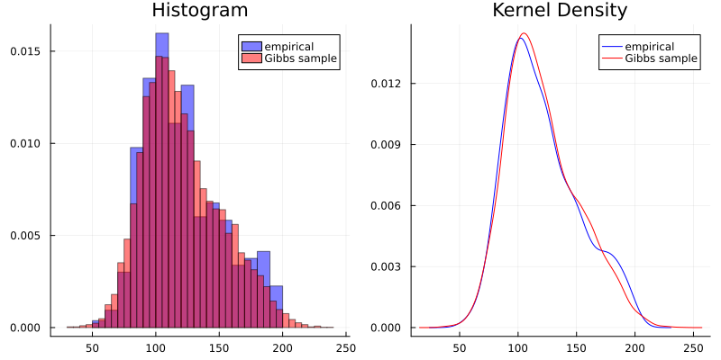
このモデルは、データの分布を割とうまく近似できてるんちゃうん。
6.3
a)
answer
ここで、
\begin{align*} \sum_{i=1}^n (z_i - \beta x_i)^2 + \frac{1}{\tau_{\beta}^2} \beta^2 &= \sum_{i=1}^n z_i^2 - 2 \beta \sum_{i=1}^n x_i z_i + \beta^2 \sum_{i=1}^n x_i^2 + \frac{1}{\tau_{\beta}^2} \beta^2 \\ &= a \beta^2 - 2 b \beta + \sum_{i=1}^n z_i^2 \\ \mathrm{where} \quad a &= \sum_{i=1}^n x_i^2 + \frac{1}{\tau_{\beta}^2} \\ b &= \sum_{i=1}^n x_i z_i \\ \end{align*}となるので、
\begin{align*} p(\beta | \boldsymbol{y}, \boldsymbol{x}, \boldsymbol{z}, c) &\propto \exp \left\{ -\frac{1}{2} \left( a \beta^2 - 2 b \beta \right) \right\} \\ &= \exp \left\{ -\frac{1}{2} a \left( \beta^2 - \frac{2 b}{a} \beta + \frac{b^2}{a^2} \right) + \frac{1}{2} \frac{b^2}{a} \right\} \\ &\propto \exp \left\{ -\frac{1}{2} a \left( \beta - \frac{b}{a} \right)^2 \right\} \\ &= \exp \left\{ - \frac{1}{2} \left( \frac{\beta - b/a}{1/ \sqrt{a} } \right) \right\} \\ &= \mathrm{dnorm}(\beta, b/a, 1/ \sqrt{a} ) \\ \end{align*}よって、
\begin{align*} \beta | \boldsymbol{y}, \boldsymbol{x}, \boldsymbol{z}, c \sim \mathrm{Normal} \left( \frac{ \sum_{i=1}^n x_i z_i }{ \sum_{i=1}^n x_i^2 + \frac{1}{\tau_{\beta}^2} }, \frac{1}{ \sum_{i=1}^n x_i^2 + \frac{1}{\tau_{\beta}^2} } \right) \end{align*}b)
answer
Chapter 7
7.1
a)
Answer
\(p_J\)が確率密度関数であるためには、 \(\int \int p_J(\boldsymbol{\theta}, \Sigma) d\boldsymbol{\theta} d\Sigma = 1\) である必要があるが、 \(\int p_J(\boldsymbol{\theta}, \Sigma) d\boldsymbol{\theta} = \infty\) であるため、\(p_J\)は確率密度関数ではない。
b)
Answer
7.2
Answer
a)
より、
\begin{align*} \log p_U(\boldsymbol{\theta}, \Psi) &= \frac{ l(\boldsymbol{\theta}, \Psi | \boldsymbol{Y}) }{n} + c \\ &= -\frac{p}{2} \log (2 \pi) + \frac{1}{2} \log |\Psi| -\frac{1}{2} \text{tr}(S \Psi) -\frac{1}{2} (\bar{\boldsymbol{y} } - \boldsymbol{\theta})^T \Psi (\bar{\boldsymbol{y} } - \boldsymbol{\theta}) + c \\ \end{align*}となる。よって
\begin{align*} p_U(\boldsymbol{\theta}, \Psi) &= \exp \left\{ -\frac{p}{2} \log (2 \pi) + \frac{1}{2} \log |\Psi| -\frac{1}{2} \text{tr}(S \Psi) -\frac{1}{2} (\bar{\boldsymbol{y} } - \boldsymbol{\theta})^T \Psi (\bar{\boldsymbol{y} } - \boldsymbol{\theta}) + c \right\} \\ &= (2 \pi)^{- \frac{p}{2} } |\Psi|^{ \frac{1}{2} } \exp \left\{ -\frac{1}{2} \text{tr}(S \Psi) \right\} \exp \left\{-\frac{1}{2} (\bar{\boldsymbol{y} } - \boldsymbol{\theta})^T \Psi (\bar{\boldsymbol{y} } - \boldsymbol{\theta}) \right\} \exp(c)\\ &\propto (2 \pi)^{- \frac{p}{2} } |\Psi^{-1}|^{- \frac{1}{2} } \exp \left\{-\frac{1}{2} (\bar{\boldsymbol{y} } - \boldsymbol{\theta})^T \Psi (\bar{\boldsymbol{y} } - \boldsymbol{\theta}) \right\} \times |\Psi|^{ \frac{p+1-p-1}{2} } \exp \left\{ -\frac{1}{2} \text{tr}(S \Psi) \right\} \\ &\propto (2 \pi)^{- \frac{p}{2} } |\Psi^{-1}|^{- \frac{1}{2} } \exp \left\{-\frac{1}{2} (\bar{\boldsymbol{y} } - \boldsymbol{\theta})^T \Psi (\bar{\boldsymbol{y} } - \boldsymbol{\theta}) \right\} \times |\Psi|^{ \frac{p+1-p - 1}{2} } \exp \left\{ -\frac{1}{2} \text{tr}(S \Psi) \right\} \\ &\propto \text{dmultivariate-normal}(\boldsymbol{\theta} | \bar{ \boldsymbol{y} } , \Psi^{-1}) \times \text{dWishart}(\Psi | p+1, S^{-1}) \\ \end{align*}が成立。
b)
上式より、 \(p_U(\boldsymbol{\theta}, \boldsymbol{\Sigma} | \boldsymbol{y}_1, \ldots, \boldsymbol{y}_n)\) は、データと事前分布の情報が反映された分布であることがわかるので、事後分布とみなせる。
7.3
a)
Answer
import Pkg; Pkg.activate("..") using DelimitedFiles using Distributions using LinearAlgebra using StatsBase bluecrab = readdlm("../../Exercises/bluecrab.dat") orangecrap = readdlm("../../Exercises/orangecrab.dat") μ_blue = mean(bluecrab, dims=1) |> vec μ_orange = mean(orangecrap, dims=1) |> vec Λ_blue = S_blue = cov(bluecrab) Λ_orange = S_orange = cov(orangecrap) ν₀ = 4 # Gibbs sampler function bivariate_gibbs(S, Σ_init, μ₀, Λ₀, S₀, ν₀, Y) THETA = Matrix{Float64}(undef, S, 2) SIGMA = Matrix{Float64}(undef, S, 4) n = size(Y, 1) Σ = Σ_init ȳ = mean(Y, dims=1) |> vec for s in 1:S # update θ Λn = inv( inv(Λ₀) + n * inv(Σ) ) μn = Λn * ( inv(Λ₀) * μ₀ + n * inv(Σ) * ȳ ) |> vec dist = MvNormal(μn, Symmetric(Λn)) θ = rand(dist) # update Σ Sn = S₀ + (Y' .- θ) * (Y' .- θ)' Σ = rand(InverseWishart(n + ν₀, Sn)) # save results THETA[s, :] = vec(θ) SIGMA[s, :] = vec(Σ) end return THETA, SIGMA end S = 10000 # Blue crab THETA_blue, SIGMA_blue = bivariate_gibbs(S, Λ_blue, μ_blue, Λ_blue, S_blue, ν₀, bluecrab) # Orange crab THETA_orange, SIGMA_orange = bivariate_gibbs(S, Λ_orange, μ_orange, Λ_orange, S_orange, ν₀, orangecrap)
b)
Answer

- 両方の種で、\(\theta_1\) と \(\theta_2\) は正の相関を持つ。
- orange crab の方が blue crab よりも幅、深さともに大きい。
c)
Answer
function get_pos_cor(SIGMA, p, S) COR = Array{Float64}(undef, p, p, S) for s in 1:S Sig = reshape(SIGMA[s, :], p, p) COR[:, :, s] = Sig ./ sqrt.(diag(Sig) * diag(Sig)') end return COR end p = bluecrab |> size |> last COR_mc_blue = get_pos_cor(SIGMA_blue, p, S) COR_mc_orange = get_pos_cor(SIGMA_orange, p, S)
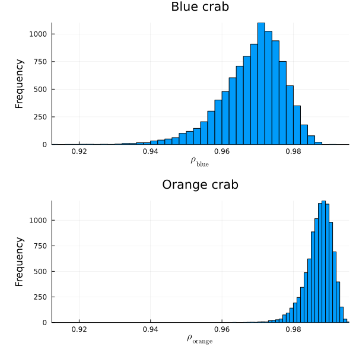
mean(COR_mc_blue[1, 2, :] .< COR_mc_orange[1, 2, :] )
0.9893
- オレンジの方がブルーに比べて、幅と深さの相関が強い。
7.4
a)
Answer
自分のイメージでは、アメリカの平均的な夫婦の年齢は 50 歳くらいで、やや女性の方が若いと思うので、\(\mu_h = 51, \mu_h = 49\) とする。また、95%くらいで、25 歳から 75 歳くらいまでの範囲に収まると思うので、 \(\sigma_h = \sigma_w = 12.5\) とする。夫婦の年齢の相関はかなり大きいイメージなので、0.9 になるように、
\begin{align*} &0.9 = \frac{\sigma_{hw}}{\sigma_h \sigma_w} = \frac{\sigma_{hw}}{12.5^2} \\ \iff &\sigma_{hw} = 0.9 \times 12.5^2 = 140.625 \end{align*}と設定する。まとめると、私の prior は以下のようになる。
\begin{align*} \boldsymbol{\mu}_0 &= (51, 49)^T \\ \Lambda_0 &= \begin{pmatrix} 12.5^2 & 140.625 \\ 140.625 & 12.5^2 \end{pmatrix} \\ \end{align*}b)
Answer
μ₀ = [51, 49] Λ₀ = [ 12.5^2 140.625 140.625 12.5^2 ] # %% n = 100 prior_dist = MvNormal(μ₀, Λ₀) dataset1 = rand(prior_dist, n) dataset2 = rand(prior_dist, n) dataset3 = rand(prior_dist, n)
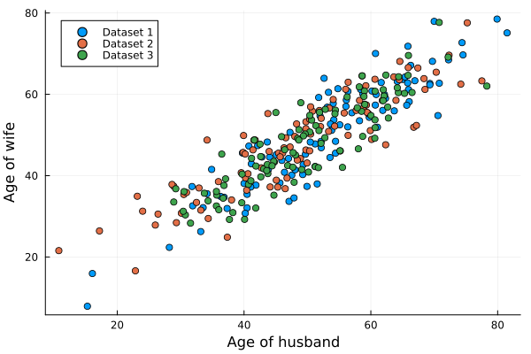
- 割とイメージ通りかなあ
c)
Answer
joint posterior distribution of \(\theta_h\) and \(\theta_w\)
agehw = readdlm("../../Exercises/agehw.dat", skipstart=1) p = size(agehw,2) S = 10000 Σ_init = cov(agehw) S₀ = Λ₀ ν₀ = p+2 THETA, SIGMA = bivariate_gibbs(S, Σ_init, μ₀, Λ₀, S₀, ν₀, agehw) COR = get_pos_cor(SIGMA, p, S)
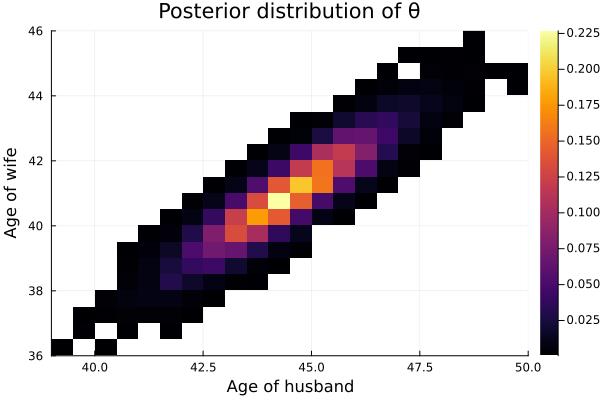
marginal posterior density of the correlation between \(Y_h\) and \(Y_w\)
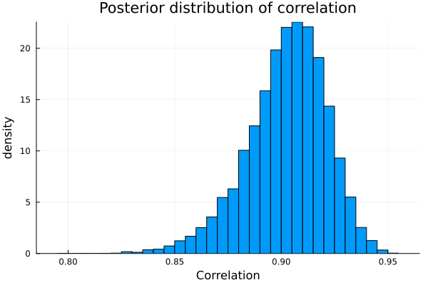
95% posterior confidence intervals for \(\theta_h\), \(\theta_w\), and the correlation coefficient
quantile(THETA[:, 1], [0.025, 0.975]) quantile(THETA[:, 2], [0.025, 0.975]) quantile(COR[1, 2, :], [0.025, 0.975])
2-element Vector{Float64}:
41.82793288516493
47.10559872633597
2-element Vector{Float64}:
38.46175689329701
43.44815317601299
2-element Vector{Float64}:
0.8602554314182437
0.9340079518830947
d)
Answer
Jeffreys’ prior
THETA_J = Matrix{Float64}(undef, S, 2) SIGMA_J = Matrix{Float64}(undef, S, 4) n = size(agehw, 1) ȳ = mean(agehw, dims=1) |> vec # Gibbs sampler Σ = cov(agehw) # use the sample covariance matrix as initial value for s in 1:S # update θ θ = rand(MvNormal(ȳ, Symmetric(Σ ./ n))) # update Σ S_θ = (agehw' .- θ) * (agehw' .- θ)' Σ = rand(InverseWishart(n+1, S_θ)) # save results THETA_J[s, :] = vec(θ) SIGMA_J[s, :] = vec(Σ) end COR_J = get_pos_cor(SIGMA_J, p, S) # 95% credible interval quantile(THETA_J[:, 1], [0.025, 0.975]) quantile(THETA_J[:, 2], [0.025, 0.975]) quantile(COR_J[1, 2, :], [0.025, 0.975])
julia> quantile(THETA_J[:, 1], [0.025, 0.975])
2-element Vector{Float64}:
41.68056977372846
47.14646200233917
julia> quantile(THETA_J[:, 2], [0.025, 0.975])
2-element Vector{Float64}:
38.3145806498635
43.44817143945637
julia> quantile(COR_J[1, 2, :], [0.025, 0.975])
2-element Vector{Float64}:
0.861004578540727
0.9345565686407257
the unit information prior
S_y = (agehw' .- ȳ) * (agehw' .- ȳ)' ./ n THETA_U = Matrix{Float64}(undef, S, 2) SIGMA_U = Matrix{Float64}(undef, S, 4) for s in 1:S # sample Σ Σ = rand(InverseWishart(n-p-1, S_y .* (n+1))) # sample θ θ = rand(MvNormal(ȳ, Symmetric(Σ ./ (n+1)))) # save results THETA_U[s, :] = vec(θ) SIGMA_U[s, :] = vec(Σ) end COR_U = get_pos_cor(SIGMA_U, p, S) # 95% credible interval quantile(THETA_U[:, 1], [0.025, 0.975]) quantile(THETA_U[:, 2], [0.025, 0.975]) quantile(COR_U[1, 2, :], [0.025, 0.975])
julia> quantile(THETA_U[:, 1], [0.025, 0.975])
2-element Vector{Float64}:
41.72596492912597
47.1866768937701
julia> quantile(THETA_U[:, 2], [0.025, 0.975])
2-element Vector{Float64}:
38.33626197183087
43.4809122415242
julia> quantile(COR_U[1, 2, :], [0.025, 0.975])
2-element Vector{Float64}:
0.8600180341629133
0.9358050299774748
diffuse prior
μ₀ = zeros(p) Λ₀ = 10^5 .* Matrix{Float64}(I, p, p) S₀ = 1000 .* Matrix{Float64}(I, p, p) ν₀ = 3 Σ_init = cov(agehw) THETA_D, SIGMA_D = bivariate_gibbs(S, Σ_init, μ₀, Λ₀, S₀, ν₀, agehw) COR_D = get_pos_cor(SIGMA_D, p, S) # 95% credible interval quantile(THETA_D[:, 1], [0.025, 0.975]) quantile(THETA_D[:, 2], [0.025, 0.975]) quantile(COR_D[1, 2, :], [0.025, 0.975])
julia> quantile(THETA_D[:, 1], [0.025, 0.975])
2-element Vector{Float64}:
41.716486213023344
47.116138763264516
julia> quantile(THETA_D[:, 2], [0.025, 0.975])
2-element Vector{Float64}:
38.335596688123054
43.49771322728793
julia> quantile(COR_D[1, 2, :], [0.025, 0.975])
2-element Vector{Float64}:
0.7916370487843212
0.9002008981233564
e)
Answer
Comparison of 95% Credible Intervals of couple age
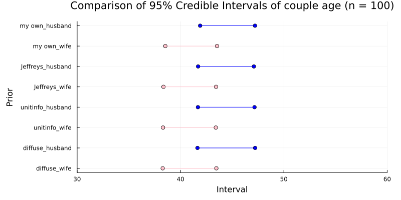 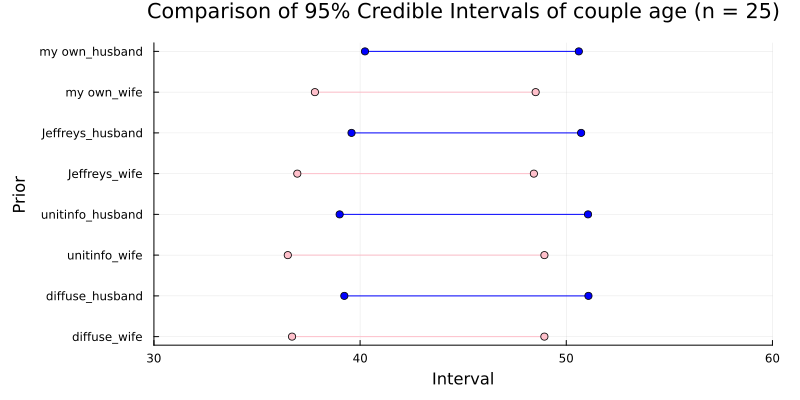
Comparison of 95% Credible Intervals of correlation coefficient
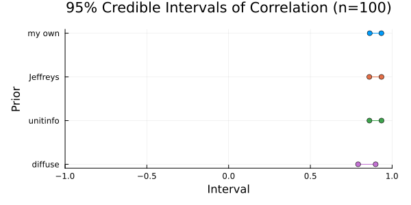 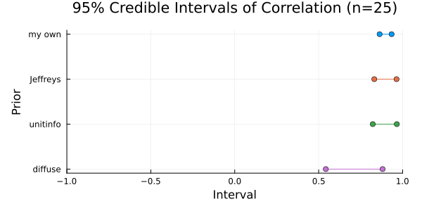
Discussion
サンプルサイズが大きい場合\((n=100)\)、事前の情報は事後分布にほとんど影響を与えなていない。一方で、サンプルサイズが小さいと\((n=25)\)、相関係数の信用区間のプロットからもわかるように、事前の情報が事後分布に与える影響が大きくなるので、事前の情報が重要になる。
7.5
a)
Answer
Y_src = readdlm("../../Exercises/interexp.dat", skipstart=1) function parse_matrix(input_matrix) nrow, ncol = size(input_matrix) output_matrix = Matrix{Union{Missing, Float64}}(missing, nrow, ncol) for i in 1:nrow for j in 1:ncol if input_matrix[i, j] == "NA" output_matrix[i, j] = missing else output_matrix[i, j] = Float64(input_matrix[i, j]) end end end return output_matrix end Y = parse_matrix(Y_src) θ̂_A = mean(skipmissing(Y[:, 1])) θ̂_B = mean(skipmissing(Y[:, 2])) σ̂²_A = var(skipmissing(Y[:, 1])) σ̂²_B = var(skipmissing(Y[:, 2])) # get index of not missing ind_A = ismissing.(Y[:, 1]) ind_B = ismissing.(Y[:, 2]) Y_comp = Y[ind_A.+ind_B.==0, :] ρ̂ = cor(Y_comp[:, 1], Y_comp[:, 2])
julia> θ̂_A 24.200487804878044 julia> θ̂_B 24.805348837209298 julia> ρ̂ 0.6164509013184667 julia> σ̂²_A 4.092799756097562 julia> σ̂²_B 4.69157785160576
b)
Answer
function impute(Y) nrow = size(Y, 1) Y_imp = copy(Y) for i in 1:nrow if ismissing(Y[i, 1]) Y_imp[i, 1] = θ̂_A + (Y[i, 2] - θ̂_B) * ρ̂ * sqrt(σ̂²_A / σ̂²_B) end if ismissing(Y[i, 2]) Y_imp[i, 2] = θ̂_B + (Y[i, 1] - θ̂_A) * ρ̂ * sqrt(σ̂²_B / σ̂²_A) end end return Y_imp end Y_imp = impute(Y) # Do a paired sample t-test using HypothesisTests OneSampleTTest(Y_imp[:, 1] .- Y_imp[:, 2])
:+RESULTS:
One sample t-test
-----------------
Population details:
parameter of interest: Mean
value under h_0: 0
point estimate: -0.611704
95% confidence interval: (-0.9851, -0.2383)
Test summary:
outcome with 95% confidence: reject h_0
two-sided p-value: 0.0018
Details:
number of observations: 58
t-statistic: -3.280709515438293
degrees of freedom: 57
empirical standard error: 0.18645474208325274
c)
Answer
Gibbs sampler
function impute_Gibbs_Jeffreys(S, Y, Y_full, Σ_init) n, p = size(Y) O = 1 .* .!ismissing.(Y) THETA = Matrix{Float64}(undef, S, p) SIGMA = Matrix{Float64}(undef, S, p * p) Y_MISS = Matrix{Float64}(undef, S, sum(ismissing.(Y))) # initialize Σ = Σ_init for s in 1:S # update θ ȳ = mean(Y_full, dims=1) |> vec θ = rand(MvNormal(ȳ, Symmetric(Σ ./ n))) # update Σ S_θ = (Y_full' .- θ) * (Y_full' .- θ)' Σ = rand(InverseWishart(n + 1, S_θ)) # update missing data for i in 1:n b = (O[i, :] .== 0) a = (O[i, :] .== 1) iSa = inv(Σ[a, a]) βj = Σ[b, a] * iSa Σj = Σ[b, b] - Σ[b, a] * iSa * Σ[a, b] θj = θ[b] + βj * ( Y_full[i, a] - θ[a] ) Y_full[i, b] = rand(MvNormal(θj, Symmetric(Σj))) end # store THETA[s, :] = vec(θ) SIGMA[s, :] = vec(Σ) Y_MISS[s, :] = vec(Y_full[O .== 0]) end return THETA, SIGMA, Y_MISS end S = 10000 Y_full = Float64.(Y_imp) Σ_init = cov(Y_full) THETA, SIGMA, Y_MISS = impute_Gibbs_Jeffreys(S, Y, Y_full, Σ_init)
Posterior mean and confidence interval
# posterior mean mean(THETA[:, 1] .- THETA[:, 2])
-0.6129730482663495
# posterior confidence interval quantile(THETA[:, 1] .- THETA[:, 2], [0.025, 0.975])
2-element Vector{Float64}:
-1.2864936536119458
0.057091581482583
discussion
b)で行った t 検定では、有意水準 5%で帰無仮説が棄却され、刺激 A と刺激 B の反応時間には有意な差があることが示唆される結果になったが、ベイズ推定による代入法では、差の事後分布の 95%信用区間が 0 を含んでおり、必ずしも刺激 A と刺激 B の反応時間に有意な差があるとは言えない結果になった。
7.6
a)
Answer
preprocess & Gibbs sampler
Y_src = readdlm("../../Exercises/azdiabetes.dat", header=true) Y = Y_src[1] header = Y_src[2] |> vec df = DataFrame(Y, header) col_int = [:npreg, :glu, :bp, :skin, :age] col_float = [:bmi, :ped] col_str = :diabetes df[!,col_int] = Int.(df[!,col_int]) df[!,col_float] = Float32.(df[!,col_float]) df[!,col_str] = String.(df[!,col_str]) df_d = filter(:diabetes => ==("Yes"), df) df_n = filter(:diabetes => ==("No"), df) function getPosterior(df, S) # select columns except for diabetes Y = select(df, Not(:diabetes)) |> Matrix n, p = size(Y) ȳ = mean(Y, dims=1) |> vec Σ̂ = cov(Y) # set prior μ₀ = ȳ Λ₀ = Σ̂ S₀ = Σ̂ ν₀ = p + 2 function multivariateGibbs(S, Σ_init, μ₀, Λ₀, S₀, ν₀, Y) n, p = size(Y) THETA = Matrix{Float64}(undef, S, p) SIGMA = Matrix{Float64}(undef, S, p^2) Σ = Σ_init ȳ = mean(Y, dims=1) |> vec for s in 1:S # update θ Λn = inv( inv(Λ₀) + n * inv(Σ) ) μn = Λn * ( inv(Λ₀) * μ₀ + n * inv(Σ) * ȳ ) |> vec dist = MvNormal(μn, Symmetric(Λn)) θ = rand(dist) # update Σ Sn = S₀ + (Y' .- θ) * (Y' .- θ)' # Σ = rand(InverseWishart(n + ν₀, Sn)) Σ = rand(InverseWishart(n + ν₀, round.(Sn, digits=5))) # save results THETA[s, :] = vec(θ) SIGMA[s, :] = vec(Σ) end return THETA, SIGMA end THETA, SIGMA = multivariateGibbs(S, Σ̂, μ₀, Λ₀, S₀, ν₀, Y) return THETA, SIGMA end S = 10000 THETA_d, SIGMA_d = getPosterior(df_d, S) THETA_n, SIGMA_n = getPosterior(df_n, S)
marginal posterior distribution
p = size(THETA_d, 2) for i in 1:p theta_d = THETA_d[:, i] theta_n = THETA_n[:, i] println("Pr(θd,$i > θn,$i) = ", mean(theta_d .> theta_n)) end
Pr(θd,1 > θn,1) = 1.0 Pr(θd,2 > θn,2) = 1.0 Pr(θd,3 > θn,3) = 1.0 Pr(θd,4 > θn,4) = 1.0 Pr(θd,5 > θn,5) = 1.0 Pr(θd,6 > θn,6) = 1.0 Pr(θd,7 > θn,7) = 1.0
- 全ての変数で、糖尿病患者と非糖尿病患者間での平均値の差があると言える。
b)
Answer
standard deviation
correlation
discussion
- 標準偏差は、糖尿病患者群の方が、やや大きい
- 相関係数は diabetes pedigree 以外の変数に関して、非患者群の方が大きい。
Chapter 8
8.1
a)
Answer
\( \text{Var}[y_{i,j}|\mu, \tau^2] \) is bigger because it includes both between-group and within-group variability while \( \text{Var}[y_{i,j}|\theta_j, \sigma^2] \) only includes within-group variability.
b)
Answer
I think \(\text{Cov}[y_{i_1, j}, y_{i_2,j}|\theta_j, \sigma^2]\) is zero because when \(\theta_j\) is known, \(y_{i_2,j}\) tells us nothing about \(y_{i_1,j}\) more than what we already know. However, \(\text{Cov}[y_{i_1, j}, y_{i_2,j}|\mu, \tau^2]\) will be positive because \(y_{i_2,j}\) tells us something about group-specific information \(\theta_j\) which we do not know.
c)
Answer
d)
Answer
This means that the \(\sigma^2, \boldsymbol{y}_1, \dots, \boldsymbol{y}_2\) give us no additional information about \(\mu\) given \(\theta_1, \ldots, \theta_m, \tau^2\).
8.2
a)
Answer
The prior correlation of \(\theta_A\) and \(\theta_B\) is computed as follows:
\begin{align*} \text{cov}(\theta_A, \theta_B) &= \text{cov}(\mu + \delta, \mu - \delta) \\ &= E[(\mu + \delta)(\mu - \delta)] - E[\mu + \delta] E[\mu - \delta] \\ &= E[\mu^2 - \delta^2] - (E[\mu] + E[\delta]) (E[\mu] - E[\delta]) \\ &= E[\mu^2] - E[\delta^2] - (E[\mu]^2 - E[\delta]^2) \\ &= \text{var}(\mu) - \text{var}(\delta) \\ &= 100 - \tau^2_0 \\ \text{Var}[\theta_A] &= \text{Var}[\mu + \delta] \\ &= \text{Var}[\mu] + \text{Var}[\delta] + 2 \text{cov}(\mu, \delta) \\ &= 100 + \tau^2_0 \\ \text{Var}[\theta_B] &= \text{Var}[\mu - \delta] \\ &= \text{Var}[\mu] + \text{Var}[\delta] - 2 \text{cov}(\mu, \delta) \\ &= 100 + \tau^2_0 \\ \text{Corr}(\theta_A, \theta_B) &= \frac{\text{cov}(\theta_A, \theta_B)}{\sqrt{\text{Var}[\theta_A] \text{Var}[\theta_B]}} \\ &= \frac{100 - \tau^2_0}{100 + \tau^2_0} \end{align*}# set prior parameters μ₀ = 75 γ₀² = 100 ν₀ = 2 σ₀² = 100 δ₀_list = [-4, -2, 0, 2, 4] τ₀²_list = [10, 50, 100, 500] # set data n_A = 16 n_B = 16 ȳ_A = 75.2 ȳ_B = 77.5 s_A = 7.3 s_B = 8.1 function GibssSampling(S, n_A, n_B,ȳ_A, ȳ_B, s_A, s_B, μ₀, γ₀², ν₀, σ₀², δ₀, τ₀²) # Gibbs sampler MU = Vector{Float64}(undef, S) DELTA = Vector{Float64}(undef, S) SIGMA = Vector{Float64}(undef, S) Y1 = Vector{Float64}(undef, S) Y2 = Vector{Float64}(undef, S) # starting values μ = (ȳ_A + ȳ_B) / 2 δ = (ȳ_A - ȳ_B) / 2 for s in 1:S # update σ² νₙ = ν₀ + n_A + n_B νₙσₙ² = ν₀ * σ₀² + n_A*(s_A^2 + ȳ_A^2 - 2*ȳ_A*(μ + δ) + (μ + δ)^2) + n_B*(s_B^2 + ȳ_B^2 - 2*ȳ_B*(μ - δ) + (μ - δ)^2) σ² = 1 / rand(Gamma(νₙ / 2, 2 / νₙσₙ²)) # update μ γₙ² = 1 / (1 / γ₀² + (n_A + n_B) / σ²) μₙ = γₙ² * (μ₀ / γ₀² + n_A*(ȳ_A - δ) / σ² + n_B*(ȳ_B + δ) / σ²) μ = rand(Normal(μₙ, sqrt(γₙ²))) # update δ τₙ² = 1 / (1 / τ₀² + (n_A + n_B) / σ²) δₙ = τₙ² * (δ₀ / τ₀² + n_A*(ȳ_A - μ) / σ² - n_B*(ȳ_B - μ) / σ²) δ = rand(Normal(δₙ, sqrt(τₙ²))) # save parameter values MU[s] = μ DELTA[s] = δ SIGMA[s] = σ² # update Ys Y1[s] = rand(Normal(μ .+ δ, sqrt(σ²))) Y2[s] = rand(Normal(μ .- δ, sqrt(σ²))) end return MU, DELTA, SIGMA, Y1, Y2 end function priorCorrelation(γ₀², τ₀²) (γ₀² - τ₀²) / (γ₀² + τ₀²) end function getPosteriorValues( S, n_A, n_B, ȳ_A, ȳ_B, s_A, s_B, μ₀, γ₀², ν₀, σ₀², δ₀, τ₀²) MU, DELTA, SIGMA, Y1, Y2 = GibssSampling( S, n_A, n_B, ȳ_A, ȳ_B, s_A, s_B, μ₀, γ₀², ν₀, σ₀², δ₀, τ₀² ) values = [ δ₀, τ₀², mean(DELTA .< 0), quantile(DELTA, [0.025, 0.975]), priorCorrelation(γ₀², τ₀²), cor(MU .+ DELTA, MU .- DELTA) ] return values end S=5000 storedf = DataFrame( δ₀ = Float64[], τ₀² = Float64[], Pr_δ_lt_0 = Float64[], δ_CI = Vector{Float64}[], prior_cor = Float64[], posterior_cor = Float64[] ) for δ₀ in δ₀_list for τ₀² in τ₀²_list values = getPosteriorValues( S, n_A, n_B, ȳ_A, ȳ_B, s_A, s_B, μ₀, γ₀², ν₀, σ₀², δ₀, τ₀² ) push!(storedf, values) end end storedf
:RESULTS:
20×6 DataFrame
Row │ δ₀ τ₀² Pr_δ_lt_0 δ_CI prior_cor posterior_cor
│ Float64 Float64 Float64 Array… Float64 Float64
─────┼─────────────────────────────────────────────────────────────────────────────
1 │ -4.0 10.0 0.9004 [-4.40737, 0.960564] 0.818182 0.0832215
2 │ -4.0 50.0 0.809 [-4.07596, 1.57355] 0.333333 0.0296429
3 │ -4.0 100.0 0.7998 [-4.0521, 1.71576] 0.0 -0.00939503
4 │ -4.0 500.0 0.7886 [-4.12576, 1.81624] -0.666667 -0.0262716
5 │ -2.0 10.0 0.837 [-3.92399, 1.32537] 0.818182 0.10129
6 │ -2.0 50.0 0.8028 [-4.05612, 1.6224] 0.333333 0.00869293
7 │ -2.0 100.0 0.8038 [-4.0379, 1.6864] 0.0 -0.00810778
8 │ -2.0 500.0 0.7888 [-4.05015, 1.76565] -0.666667 -0.0191756
9 │ 0.0 10.0 0.7576 [-3.48922, 1.67463] 0.818182 0.0929888
10 │ 0.0 50.0 0.7726 [-3.923, 1.72819] 0.333333 0.00904771
11 │ 0.0 100.0 0.7826 [-3.97522, 1.82757] 0.0 -0.0190771
12 │ 0.0 500.0 0.7928 [-4.0154, 1.72617] -0.666667 0.0197301
13 │ 2.0 10.0 0.6736 [-3.22579, 2.10982] 0.818182 0.0825033
14 │ 2.0 50.0 0.763 [-3.85493, 1.81963] 0.333333 -0.00669629
15 │ 2.0 100.0 0.774 [-3.89927, 1.66101] 0.0 -0.0104147
16 │ 2.0 500.0 0.7908 [-4.0372, 1.75225] -0.666667 0.00590126
17 │ 4.0 10.0 0.5678 [-2.83371, 2.36965] 0.818182 0.0925342
18 │ 4.0 50.0 0.7368 [-3.65975, 1.90021] 0.333333 0.0114906
19 │ 4.0 100.0 0.7718 [-3.86476, 1.78857] 0.0 0.0232417
20 │ 4.0 500.0 0.7924 [-4.17904, 1.72876] -0.666667 0.00648826
b)
Answer
The posterior probability that \(\theta_A \lt \theta_B \iff \delta \lt 0\) is over 50% for all combinations of \(\delta_0\) and \(\tau_0^2\). Even if we have a strong prior belief that \(\theta_A > \theta_B\), the posterior probability that \(\theta_A \lt \theta_B\) is still over 50%. (See the case of \(\delta_0 = 4\) and \(\tau_0^2 = 10\).) In the case of Exercise 5.2, where each group was modeled independently, we could not provide such strong evidence.
8.3
a)
Answer
using Distributions using Random using LaTeXStrings using Plots, StatsPlots using Plots.Measures using CSV, DataFrames using DelimitedFiles using StatsBase using SpecialFunctions Random.seed!(1234) # %% # read data Y = Matrix{Float64}(undef, 0, 2) for i in 1:8 school = readdlm("../../Exercises/school$i.dat") Y = vcat(Y, hcat(repeat([i], size(school, 1)), school)) end # %% # set prior parameters μ₀ = 7 γ₀² = 5 τ₀² = 10 η₀ = 2 σ₀² = 10 ν₀ = 2 # %% # starting values m = length(unique(Y[:,1])) n = Vector{Float64}(undef, m) ȳ = Vector{Float64}(undef, m) sv = Vector{Float64}(undef, m) for j in 1:m ȳ[j] = mean(Y[Y[:,1] .== j, 2]) sv[j] = var(Y[Y[:,1] .== j, 2]) n[j] = length(Y[Y[:,1] .== j, 2]) end θ = copy(ȳ) σ² = mean(sv) μ = mean(θ) τ² = var(θ) # setup MCMC Random.seed!(1) S = 5000 THETA = Matrix{Float64}(undef, S, m) MST = Matrix{Float64}(undef, S, 3) # MCMC algorithm for s in 1:S # sample new values of the θs for j in 1:m v_θ = 1 / (n[j] / σ² + 1 / τ²) E_θ = v_θ * (n[j]*ȳ[j]/σ² + μ/τ²) θ[j] = rand(Normal(E_θ, sqrt(v_θ))) end # sample new value of σ² νₙ = ν₀ + sum(n) ss = ν₀ * σ₀² for j in 1:m ss += sum((Y[Y[:,1] .== j, 2] .- θ[j]).^2) end σ² = 1 / rand(Gamma(νₙ / 2, 2/ss)) # sample a new value of μ v_μ = 1 / (m/τ² + 1/γ₀²) E_μ = v_μ * (m * mean(θ) / τ² + μ₀ / γ₀²) μ = rand(Normal(E_μ, sqrt(v_μ))) # sample a new value of τ² etam = η₀ + m ss = η₀ * τ₀² + sum((θ .- μ).^2) τ² = 1 / rand(Gamma(etam/2, 2/ss)) # store results THETA[s, :] = θ MST[s, :] = [μ, σ², τ²] end
Figure 1: stationarity plot
using MCMCDiagnosticTools using MCMCChains ess(MCMCChains.Chains(MST))
ESS
parameters ess ess_per_sec
Symbol Float64 Missing
param_1 4046.5607 missing
param_2 4697.5784 missing
param_3 3299.9524 missing
b)
Answer
# posterior mean and 95% confidence region for σ² julia> mean(MST[:,2]) 14.413317696499103 julia> quantile(MST[:,2], [0.025, 0.975]) 2-element Vector{Float64}: 11.733606090321313 17.92710379952854
# posterior mean and 95% confidence region for μ julia> mean(MST[:,1]) 7.587311747784735 julia> quantile(MST[:,1], [0.025, 0.975]) 2-element Vector{Float64}: 5.910059688648781 9.160791496009686
julia> mean(MST[:,3]) 5.478604048700004 julia> quantile(MST[:,3], [0.025, 0.975]) 2-element Vector{Float64}: 1.9240022529423977 14.101516261365546

Figure 2: Comparison of posterior and prior densities
The following things were learned from the data:
- \(\sigma^2\) is around 14.4, which is higher than the prior mean 10.0, and the variance is smaller than the prior variance 100.
- \(\mu\) is around 7.6, which is higher than the prior mean 7.0, and the variance is smaller than the prior variance 10.0.
- \(\tau^2\) is around 5.5, which is smaller than the prior mean 10.0, and the variance is smaller than the prior variance 100.
c)
Answer
σ²_pri = rand(Gamma(ν₀/2, 2σ₀²/ν₀), S) τ²_pri = rand(Gamma(η₀/2, 2τ₀²/η₀), S) R_pri = τ²_pri ./ (σ²_pri .+ τ²_pri) R_pos = MST[:,3] ./(MST[:,2] .+ MST[:,3])
Figure 3: Prior and posterior densities of \(R\)
The plot above shows that about 25% of the variance is due to between-school variation, and the rest is due to within-school variation.
d)
Answer
# posterior probability that θ₇ is smaller than θ₆ mean(THETA[:,7] .< THETA[:,6])
0.5222
# posterior probability that θ₇ is the smallest of all the θ’s mean(THETA[:,7] .≤ minimum(THETA, dims=2))
0.325
e)
Answer
θ̄ = mean(THETA, dims=1) |> vec fig_e = plot( ȳ, θ̄, seriestype=:scatter, xlabel=L"\bar{y}_i", ylabel=L"\theta_i", legend=:none, xlims=(6,11), ylims=(6,11), size=(400, 400), margin=5mm, alpha=0.5 ) fig_e = plot!(fig_e, x->x, color=:red, linewidth=1,alpha=0.5) fig_e
Figure 4: Sample averages and posterior expectations
For the schools with large sample averages, the posterior expectations tend to be smaller than the sample averages. For the schools with small sample averages, the posterior expectations tend to be larger than the sample averages.
# sample mean of all observations mean(Y[:,2])
7.6912777777777785
# posterior mean of μ mean(MST[:,1])
7.587311747784735
Chapter 9
9.1
a)
Answer
The prior information means that the line \(\beta_1 + \beta_2 x\) should produce values between 22 and 24 when \(x\) is between 1 and 6. A little algebra shows that we need a prior distribution on \((\beta_1, \beta_2)\) such that \(\frac{98}{5} < \beta_1 < \frac{132}{5}\) and \(-\frac{2}{5} < \beta_2 < \frac{2}{5}\) with high probability. This could be done by taking \(\boldsymbol{\beta}_0 = (23, 0) \) and \(\Sigma_0 = \text{diag}\left( \left(\frac{17}{5} \right)^2, \left(\frac{1}{5} \right)^2 \right)\). For \(\nu_0\) and \(\sigma_0^2\), we could take \(\nu_0 = 2\) and \(\sigma_0^2 = 0.5\) so that the prior distribution of \(\sigma^2\) is concentrated around 0.5.
# read data swim = readdlm("../../Exercises/swim.dat", header=false) function regressionSemiconjugatePrior(y, X, β₀, Σ₀, ν₀, σ₀²; S=5000) n, p = size(X) BETA = Matrix{Float64}(undef, S, p) SIGMA² = Vector{Float64}(undef, S) # starting values olsfit = lm(X, y) β = coef(olsfit) σ² = sum(map(x -> x^2, residuals(olsfit))) / (n - p) # MCMC algorithm for s in 1:S # update β V = inv(inv(Σ₀) + X'X / σ²) E = V * (inv(Σ₀) * β₀ + X'y / σ²) β = rand(MvNormal(E, Symmetric(V))) # update σ² νₙ = ν₀ + n SSR = sum(map(x -> x^2, y - X*β)) νₙσ²ₙ = ν₀ * σ₀² + SSR σ² = rand(InverseGamma(νₙ / 2, 2/νₙσ²ₙ)) # store BETA[s, :] = β SIGMA²[s] = σ² end return BETA, SIGMA² end # set prior parameters β₀ = [23, 0] Σ₀ = diagm([(17/5)^2, (1/5)^2]) ν₀ = 2 σ₀² = 0.5 S = 5000 Y_PRED = Matrix{Float64}(undef, S, size(swim,1)) fig = plot( title="posterior predictive distribution", xlabel="time", ylabel="density" , size=(800, 400), margin=3mm ) for i in 1:size(swim,1) y = swim[i, :] X = [repeat([1], length(y)) 1:length(y)] BETA, SIGMA² = regressionSemiconjugatePrior(y, X, β₀, Σ₀, ν₀, σ₀², S=S) μ_ypred = BETA[:,1] .+ BETA[:,2] * (length(y)+1) ypred = rand.(Normal.(μ_ypred, sqrt.(SIGMA²))) Y_PRED[:, i] = ypred fig = density!(fig, ypred, label="swimmer $i") ypred_mean = ypred |> mean |> x -> round(x, digits=2) println("swimmer $i: ", ypred_mean) end
:RESULTS:
swimmer 1: 22.73 swimmer 2: 23.52 swimmer 3: 22.86 swimmer 4: 23.44
b)
Answer
ind_fastest = mapslices(x -> x .== minimum(x), Y_PRED, dims=2) mean(ind_fastest, dims=1)
:RESULTS:
1×4 Matrix{Float64}:
0.4184 0.1064 0.3504 0.1248
The probability that each swimmer is the fastest is shown above. Swimmer 1 will be the fastest with probability 0.4184, so I recommend that the coach choose swimmer 1.
9.2
a)
Answer
Y_src = readdlm("../../Exercises/azdiabetes.dat", header=true) Y = Y_src[1] header = Y_src[2] |> vec df = DataFrame(Y, header) col_int = [:npreg, :glu, :bp, :skin, :age] col_float = [:bmi, :ped] col_str = :diabetes df[!,col_int] = Int.(df[!,col_int]) df[!,col_float] = Float32.(df[!,col_float]) df[!,col_str] = String.(df[!,col_str]) function ResidualSE(y,X) fit = lm(X, y) return sum(map(x -> x^2, residuals(fit))) / (size(X, 1) - size(X, 2)) end function lmGprior(y, X; g=length(y), ν₀=1, σ₀²=ResidualSE(y,X), S=1000) n, p = size(X) Hg = (g/(g+1)) * X * inv(X'X) * X' SSRg = y' * (diagm(ones(n)) - Hg) * y σ² = 1 ./ rand(Gamma((ν₀+n)/2, 2/(ν₀*σ₀²+SSRg)), S) Vb = g * inv(X'X) /(g+1) Eb = Vb * X' * y β = Matrix{Float64}(undef, 0, p) for i in 1:S s = σ²[i] β = vcat(β, rand(MvNormal(Eb, Symmetric(s * Vb)))') end return β, σ² end # set prior parameters g = size(df, 1) ν₀ = 2 σ₀² = 1 y = df[:, :glu] X = select(df, Not([:diabetes, :glu])) |> Matrix X = [ones(size(X, 1)) X] # add intercept S=5000 BETA, SIGMA² = lmGprior(y, X; g=g, ν₀=ν₀, σ₀²=σ₀², S=S)
# posterior confidence intervals for σ² ci_σ² = quantile(SIGMA², [0.025, 0.975]) # %% # posterior confidence intervals for β ci_β = map(x -> quantile(x, [0.025, 0.975]), eachcol(BETA))
:RESULTS:
8×4 DataFrame
Row │ param ci_lower ci_upper ci_length
│ String Float64 Float64 Float64
─────┼───────────────────────────────────────────────
1 │ intercept 35.1914 69.5733 34.3819
2 │ npreg -1.64525 0.306686 1.95194
3 │ bp -0.01787 0.425742 0.443612
4 │ skin -0.112215 0.511 0.623215
5 │ bmi 0.142702 1.129 0.986294
6 │ ped 3.36953 17.7334 14.3639
7 │ age 0.454045 1.09135 0.637302
8 │ σ² 745.993 948.869 202.875
b)
Answer
function lpyX(y, X; g=length(y), ν₀=1) n = size(X, 1) p = size(X, 2) if p ==0 σ̂² = mean(y.^2) H0 = zeros(n, n) else fit = lm(X, y) σ̂² = sum(map(x -> x^2, residuals(fit))) / (n - p) H0 = (g/(g+1)) * X * inv(X'X) * X' end SS0 = y' * (diagm(ones(n)) - H0) * y return( -0.5*n*log(2*π) + logabsgamma(0.5*(ν₀+n))[1] - logabsgamma(0.5*ν₀)[1] - 0.5*p*log(1+g) + 0.5*ν₀*log(0.5*ν₀*σ̂²) - 0.5*(ν₀+n)*log(0.5*(ν₀*σ̂²+SS0)) ) end function BayesianModelAveraging(y, X; S=5000) n, p = size(X) BETA = Matrix{Float64}(undef, S, p) Z = Matrix{Int64}(undef, S, p) z = ones(p) lpy_c = lpyX(y, X[:, findall(z .== 1)]) for s in 1:S for j in shuffle(1:p) zp = copy(z) zp[j] = 1 .- zp[j] lpy_p = lpyX(y, X[:, findall(zp .== 1)]) r = (lpy_p - lpy_c)*(-1)^(zp[j]==0) z[j] = rand(Bernoulli(1/(1+exp(-r)))) |> Int if z[j] == zp[j] lpy_c = lpy_p end end β = copy(z) if sum(z) > 0 β[findall(z .== 1)] = lmGprior(y, X[:, findall(z .== 1)], S=1)[1] end Z[s, :] = z BETA[s, :] = β if s % 10 == 0 bpm = mean(BETA[1:s, :], dims=1) |> vec mse = mean((y - X * bpm).^2) println("s = ", s, ", mse = ", mse) end end return BETA, Z end BETA2, Z = BayesianModelAveraging(y, X; S=5000) z_prob = mean(Z, dims=1) |> vec ci_β_bma = map(x -> quantile(x, [0.025, 0.975]), eachcol(BETA2)) df_ci_bma = DataFrame( param = coef_name, prob = z_prob, ci_lower = map(x -> x[1], ci_β_bma), ci_upper = map(x -> x[2], ci_β_bma) )
:RESULTS:
7×5 DataFrame
Row │ param prob ci_lower ci_upper ci_length
│ String Float64 Float64 Float64 Float64
─────┼─────────────────────────────────────────────────────
1 │ intercept 1.0 43.3728 76.389 33.0162
2 │ npreg 0.0978 -1.00526 0.0 1.00526
3 │ bp 0.168 0.0 0.32304 0.32304
4 │ skin 0.0934 0.0 0.363007 0.363007
5 │ bmi 0.9812 0.403414 1.34051 0.937095
6 │ ped 0.6928 0.0 17.7104 17.7104
7 │ age 1.0 0.480682 1.01743 0.536749
\(\mathrm{Pr}(\beta_j \neq 0|\boldsymbol{y})\) is nearly 1 for intercept, bmi and age, and is around 0.1 for npreg, bp and skin. Compared to the results in part a), the lengths of the confidence intervals tend to be shorter (except for ped) in part b).
9.3
a)
Answer
The result of bayesian regression using the g-prior is shown below:
crime_src = readdlm("../../Exercises/crime.dat", header=true) crime = crime_src[1] header = crime_src[2] |> vec df = DataFrame(crime, header) using GLM function ResidualSE(y,X) fit = lm(X, y) return sum(map(x -> x^2, residuals(fit))) / (size(X, 1) - size(X, 2)) end function lmGprior(y, X; g=length(y), ν₀=1, σ₀²=ResidualSE(y,X), S=1000) n, p = size(X) Hg = (g/(g+1)) * X * inv(X'X) * X' SSRg = y' * (diagm(ones(n)) - Hg) * y σ² = 1 ./ rand(Gamma((ν₀+n)/2, 2/(ν₀*σ₀²+SSRg)), S) Vb = g * inv(X'X) /(g+1) Eb = Vb * X' * y β = Matrix{Float64}(undef, 0, p) for i in 1:S s = σ²[i] β = vcat(β, rand(MvNormal(Eb, Symmetric(s * Vb)))') end return β, σ² end # set prior parameters n = size(df, 1) g = n ν₀ = 2 σ₀² = 1 y = df[:, :y] X = select(df, Not(:y)) |> Matrix X = [ones(size(X, 1)) X] # add intercept p = size(X, 2) S=5000 BETA, SIGMA² = lmGprior(y, X; g=g, ν₀=ν₀, σ₀²=σ₀², S=S) # posterior mean for β β̂_gprior = mean(BETA, dims=1) |> vec # posterior confidence intervals for β ci_gprior = map(x -> quantile(x, [0.025, 0.975]), eachcol(BETA)) # store results coef_name = names(df[:, Not(:y)]) |> vec coef_name = ["intercept", coef_name...] result_gprior = DataFrame( param = coef_name, β̂ = β̂_gprior, ci_lower = map(x -> x[1], ci_gprior), ci_upper = map(x -> x[2], ci_gprior) ) @transform!(result_gprior, :ci_length = :ci_upper - :ci_lower) end
:RESULTS:
16×5 DataFrame
Row │ param β̂ ci_lower ci_upper ci_length
│ String Float64 Float64 Float64 Float64
─────┼────────────────────────────────────────────────────────────
1 │ intercept -0.00138411 -0.145485 0.141785 0.28727
2 │ M 0.280085 0.0326016 0.522226 0.489625
3 │ So 0.000124904 -0.335994 0.326097 0.662091
4 │ Ed 0.531345 0.213679 0.848809 0.63513
5 │ Po1 1.4448 0.0578835 2.9098 2.85191
6 │ Po2 -0.769673 -2.28756 0.708661 2.99622
7 │ LF -0.0649535 -0.345494 0.201018 0.546512
8 │ M.F 0.128508 -0.147925 0.402133 0.550058
9 │ Pop -0.0704276 -0.301267 0.153849 0.455116
10 │ NW 0.105647 -0.200629 0.416185 0.616814
11 │ U1 -0.265548 -0.631514 0.103081 0.734594
12 │ U2 0.359167 0.0283685 0.688258 0.659889
13 │ GDP 0.239074 -0.213783 0.692641 0.906425
14 │ Ineq 0.715697 0.299354 1.13272 0.83337
15 │ Prob -0.27993 -0.527327 -0.0344898 0.492837
16 │ Time -0.0602993 -0.288748 0.181236 0.469984
The result of least square estimation is shown below:
# least square estimates olsfit = lm(X, y) tstat = coef(olsfit) ./ stderror(olsfit) pval = 2 * (1 .- cdf.(Normal(), abs.(tstat))) result_ols = DataFrame( param = coef_name, β̂ = coef(olsfit), pvalue = pval, ci_lower = confint(olsfit)[:, 1], ci_upper = confint(olsfit)[:, 2] ) @transform!(result_ols, :ci_length = :ci_upper - :ci_lower)
16×6 DataFrame
Row │ param β̂ pvalue ci_lower ci_upper ci_length
│ String Float64 Float64 Float64 Float64 Float64
─────┼─────────────────────────────────────────────────────────────────────────
1 │ intercept -0.000458109 0.995369 -0.161444 0.160527 0.321971
2 │ M 0.286518 0.0348684 0.00955607 0.56348 0.553924
3 │ So -0.000114046 0.999506 -0.375493 0.375265 0.750757
4 │ Ed 0.544514 0.00243231 0.178196 0.910832 0.732636
5 │ Po1 1.47162 0.0715397 -0.193934 3.13718 3.33111
6 │ Po2 -0.78178 0.358608 -2.51862 0.955056 3.47367
7 │ LF -0.0659646 0.667281 -0.378923 0.246994 0.625917
8 │ M.F 0.131298 0.397494 -0.185192 0.447788 0.63298
9 │ Pop -0.0702919 0.579692 -0.329144 0.18856 0.517704
10 │ NW 0.109057 0.525852 -0.241574 0.459687 0.701261
11 │ U1 -0.270536 0.168865 -0.671568 0.130495 0.802063
12 │ U2 0.36873 0.0403534 0.00190637 0.735554 0.733648
13 │ GDP 0.238059 0.357931 -0.290079 0.766198 1.05628
14 │ Ineq 0.726292 0.00192334 0.24874 1.20384 0.955105
15 │ Prob -0.285226 0.033017 -0.558095 -0.0123574 0.545738
16 │ Time -0.0615769 0.638379 -0.328802 0.205648 0.534451
The point estimates and 95% confidence/credible intervals are very similar between bayesian regression and least square estimation. The lengths of the intervals seem to be shorter in bayesian regression than in least square estimation. Seeing the results of bayesian regression, the 95% credible intervals of coefficients of M, Ed, Po1, U2, Ineq and Prob do not include 0, so these variables seem strongly predictive of crime rates. On the other hand, the results of least square estimation show that the p-values of M, Ed, U2 and Ineq are less than 0.05, so these variables seem strongly predictive of crime rates. Using these types of criteria, the difference between the two results is that Po1 and Prob are predictive of crime rates in bayesian regression, but not in least square estimation.
b)
Answer
# split data into training and test set Random.seed!(1234) i_te = sample(1:n, div(n, 2), replace=false) i_tr = setdiff(1:n, i_te) y_tr = y[i_tr] y_te = y[i_te] X_tr = X[i_tr, :] X_te = X[i_te, :]
# OLS olsfit = lm(X_tr, y_tr) β̂_ols = coef(olsfit) ŷ_ols = X_te * β̂_ols error_ols = mean((y_te - ŷ_ols).^2)
:RESULTS:
0.6155918321208247
# Bayesian BETA, SIGMA² = lmGprior(y_tr, X_tr; g=g, ν₀=ν₀, σ₀²=σ₀², S=S) β̂_bayes = mean(BETA, dims=1) |> vec ŷ_bayes = X_te * β̂_bayes error_bayes = mean((y_te - ŷ_bayes).^2)
:RESULTS:
0.6012597112455574

From the above results, the least square regression and bayesian regression seem to yield very similar predictions for the test data. For this time, the bayesian regression predict better than the least square regression, but the gap is very small.
c)
Answer
function computeMses(y, X; g=g, ν₀=ν₀, σ₀²=σ₀², S=S) # split data into training and test set y_tr, y_te, X_tr, X_te = splitData(y, X) # OLS olsfit = lm(X_tr, y_tr) β̂_ols = coef(olsfit) ŷ_ols = X_te * β̂_ols error_ols = mean((y_te - ŷ_ols).^2) # Bayesian BETA, SIGMA² = lmGprior(y_tr, X_tr; g=g, ν₀=ν₀, σ₀²=σ₀², S=S) β̂_bayes = mean(BETA, dims=1) |> vec ŷ_bayes = X_te * β̂_bayes error_bayes = mean((y_te - ŷ_bayes).^2) return error_ols, error_bayes end # compute MSEs n_sim = 1000 error_ols = zeros(n_sim) error_bayes = zeros(n_sim) for i in 1:n_sim error_ols[i], error_bayes[i] = computeMses(y, X) end # average MSEs mean(error_ols), mean(error_bayes)
:RESULTS:
(1.12446194924989, 1.092206057122776)
Chapter 10
10.1
Answer
It is obvious that the support of the proposal distribution is positive. Therefore, it suffices to show \(J(\theta_1|\theta_0) = J(\theta_0 | \theta_1)\). Let \(\theta_1, \theta_0, \delta \) be arbitrary positive numbers, and without loss of generality, assume \(\theta_1 \ge \theta_0\).
When \(\theta_1 - \theta_0 \ge \delta\), \(J(\theta_1|\theta_0) = J(\theta_0 | \theta_1) = 0\) holds. Thus, we can only consider the case \(\theta_1 - \theta_0 < \delta \).
(i-i) When \(\theta_0 \le \delta \), and \( \theta_0 - \delta < -\theta_1 \), \(\theta_1 \) will be proposed when \(\tilde{\theta} \) equals either \(\theta_1\) or \(-\theta_1\). On the other hand, given \(\theta_1\), \(\theta_0\) will be proposed when \(\tilde{\theta} \) equals either \(\theta_0\) or \(-\theta_0\) because \( \theta_1 - \delta < -\theta_0 < 0 \le \theta_0 \le \theta_1 + \delta \).
(i-ii) When \(\theta_0 \le \delta \) and \( -\theta_1 \le \theta_0 - \delta \), \(\theta_1 \) will be proposed when \(\tilde{\theta} \) equals \(\theta_1\). Given \(\theta_1\), \(\theta_0\) will be proposed when \(\tilde{\theta} \) equals \(\theta_0\) because \(-\theta_0 \le \theta_1 - \delta < 0 \le \theta_0 \le \theta_1 + \delta \). Therefore, \(J(\theta_1|\theta_0) = J(\theta_0 | \theta_1)\) holds.
(ii) When \(\theta_0 > \delta \), \((\theta_0 - \delta, \theta_0 + \delta)\) covers only positive numbers. Thus, \(\theta_1 \) will be proposed when \(\tilde{\theta} \) equals either \(\theta_1\). Conversely, given \(\theta_1\), \(\theta_0\) will be proposed when \(\tilde{\theta} \) equals \(\theta_0\) because \(\theta_1 - \delta > 0 \). Therefore, \(J(\theta_1|\theta_0) = J(\theta_0 | \theta_1)\) holds.
In conclusion, it holds that the proposal distribution is symmetric.
Answer
提案分布が正の値のみをサポートすることは明らか。したがって、\(J(\theta_1|\theta_0) = J(\theta_0 | \theta_1)\)を示せば十分。
\(\theta_1, \theta_0, \delta \)を任意の正の数とし、一般性を失わず\(\theta_1 \ge \theta_0\)と仮定する。
(i-i) \(\theta_0 \le \delta \)かつ\( \theta_0 - \delta < -\theta_1 \)のとき、 \(\theta_1\)は\(\tilde{\theta} = \theta_1\)または\(\tilde{\theta} =-\theta_1\)のときに提案される。一方、\(\theta_1\)が与えられたとき、\( \theta_1 - \delta < -\theta_0 < 0 \le \theta_0 \le \theta_1 + \delta \)より\(\tilde{\theta} = \theta_0\)または\(\tilde{\theta} =-\theta_0\)のときに\(\theta_0\)が提案される。
(i-ii) \(\theta_0 \le \delta\) かつ \( -\theta_1 \le \theta_0 - \delta \)のとき、 \(\theta_1\)は\(\tilde{\theta} = \theta_1\)のときに提案される。一方、\(\theta_1\)が与えられたとき、\(-\theta_0 \le \theta_1 - \delta < 0 \le \theta_0 \le \theta_1 + \delta \)より\(\tilde{\theta} = \theta_0\)のときに\(\theta_0\)が提案される。
(ii) \(\theta_0 > \delta \)のとき、\((\theta_0 - \delta, \theta_0 + \delta)\)は正の数のみをカバーする。したがって、\(\theta_1\)は\(\tilde{\theta} = \theta_1\)のときのみに提案される。逆に、\(\theta_1\)が与えられたとき、\(\theta_1 - \delta > 0 \)より\(\tilde{\theta} = \theta_0\)のときに\(\theta_0\)が提案される。
提案分布は一様分布であることから、以上の議論により対称性が示された。
10.2
a)
Answer
b)
Answer
Let \(p\) be the probability of nesting success. Then,
\begin{align*} \alpha + \beta x_i &= \text{logit } p \\ &= \log \frac{p}{1-p}. \\ \end{align*}Thus, if we have no prior information about the probability of nesting success, we can set the prior expectation of \(\alpha + \beta x_i\) to 0, \(p = 0.5\). Also, we have no prior information about the relationship between wingspan and nesting success, so we can set the prior expectation of \(\beta\) to 0. Consequently, we can set the prior expectation of \(\alpha\) to 0.
Next, we consider the prior variance of \(\alpha\) and \(\beta\). Suppose temporarily that \(\beta = 0\). If the prior variance of \(\alpha\) is set to \(2500\), \(\alpha\) ranges between \(-100\) and \(100\) for 95% probability, and the odds ratio should be between \(\exp(-100) \approx 3.7 \times 10^{-44}\) and \(\exp(100) \approx 2.7 \times 10^{43}\). This prior can be seen quite uninformative. Similarly, considering \(x_i\) ranges between 10 and 15, we can set the prior variance of \(\beta\) to 25. Thus, we can set the prior distribution of \(\alpha\) and \(\beta\) as follows:
\begin{align*} \alpha &\sim \mathcal{N}(0, 2500) \\ \beta &\sim \mathcal{N}(0, 25) \\ \end{align*}c)
Answer
using BayesPlots using DelimitedFiles using Distributions using LaTeXStrings using LinearAlgebra using MCMCChains using Plots using Plots.Measures using Random using StatsBase using StatsModels using StatsPlots using GLM
data = readdlm("../../Exercises/msparrownest.dat") y = data[:, 1] x = data[:, 2] # add intercept x = hcat(ones(length(x)), x) function MetropolisLogit(S, y, x, β₀, Σ₀, var_prop; seed=123) # S: number of samples # y: response vector # x: predictor vector # β₀: prior mean of β # Σ₀: prior covariance of β # var_prop: proposal variance function logistic(ψ) return exp(ψ) / (1 + exp(ψ)) end Random.seed!(seed) q = length(β₀) BETA = Matrix{Float64}(undef, S, q) acs = 0 # acceptance rate # Initialize glmfit = glm(x, y, Binomial(), LogitLink()) β = coef(glmfit) # Metropolis algorithm for s in 1:S p = logistic.(x*β) # Draw β* β_star = rand(MvNormal(β, var_prop)) p_star = logistic.(x*β_star) log_r = sum(logpdf.(Bernoulli.(p_star), y)) + logpdf(MvNormal(β_star, Σ₀), β) - sum(logpdf.(Bernoulli.(p), y)) - logpdf(MvNormal(β, Σ₀), β_star) if log(rand()) < log_r β = β_star acs += 1 end BETA[s, :] = β end return BETA, acs/S end # Prior β₀ = [0, 0] Σ₀ = [2500 0; 0 25] S = 10000 # search best proposal variance for i in 1:20 # Proposal variance var_prop = i*inv(x'x) BETA, acs = MetropolisLogit(S, y, x, β₀, Σ₀, var_prop) println("i = ", i) println("acceptance rate = ", acs) ess_α = MCMCDiagnosticTools.ess(BETA[:,1]) ess_β = MCMCDiagnosticTools.ess(BETA[:,2]) println("ess_α = ", ess_α) println("ess_β = ", ess_β) end
var_prop = 17*inv(x'x) BETA, acs = MetropolisLogit(S, y, x, β₀, Σ₀, var_prop) ess(MCMCChains.Chains(BETA))
ESS
parameters ess ess_per_sec
Symbol Float64 Missing
param_1 1261.2209 missing
param_2 1248.0384 missing
d)
Answer
e)
Answer
x_grid = 10:0.1:15 x_grid = hcat(ones(length(x_grid)), x_grid) # %% f_post = logistic.(x_grid*BETA[burnin:end, :]') # %% f_post_mean = mean(f_post, dims=2) f_post_lower = map(x -> quantile(x, 0.025), eachrow(f_post)) f_post_upper = map(x -> quantile(x, 0.975), eachrow(f_post))
10.3
a)
Answer
import Pkg; Pkg.add(url="https://github.com/KaoruBB/BayesPlots.jl")
data = readdlm("Exercises/tplant.dat")
20×3 Matrix{Float64}:
11.8 0.0 6.39
15.34 1.0 6.39
9.31 0.0 5.58
13.7 1.0 5.58
11.2 0.0 4.26
14.75 1.0 4.26
10.33 0.0 5.87
14.38 1.0 5.87
9.79 0.0 3.91
13.96 1.0 3.91
8.39 0.0 3.91
12.84 1.0 3.91
10.61 0.0 6.17
14.87 1.0 6.17
8.54 0.0 3.36
12.77 1.0 3.36
9.25 0.0 3.52
13.14 1.0 3.52
8.86 0.0 2.02
12.24 1.0 2.02
# first column: plant height # second column: measurement period # third column: pH level y = data[:, 1] X = data[:, 2] # add intercept X = hcat(ones(length(X)), X) df = DataFrame( height = y, time = X[:, 2], pH = data[:, 3] ) lmfit = lm(@formula(height ~ time + pH), df)
"StatsModels.TableRegressionModel{LinearModel{GLM.LmResp{Vector{Float64}}, GLM.DensePredChol{Float64, CholeskyPivoted{Float64, Matrix{Float64}, Vector{Int64}}}}, Matrix{Float64}} height ~ 1 + time + pH Coefficients: ──────────────────────────────────────────────────────────────────────── Coef. Std. Error t Pr(>|t|) Lower 95% Upper 95% ──────────────────────────────────────────────────────────────────────── (Intercept) 7.20869 0.589054 12.24 <1e-09 5.9659 8.45149 time 3.991 0.328003 12.17 <1e-09 3.29897 4.68303 pH 0.577752 0.120354 4.80 0.0002 0.323828 0.831676 ────────────────────────────────────────────────────────────────────────"
This result shows that the height of tomato plants increases by 3.99 cm per time on average. Also, the height of tomato plants increases by 0.58 cm when the pH level increases by 1. Even with a significance level of 0.01, these effects are statistically significant.
b)
Answer
The scatter plot of residuals is shown above. The same tomato plants are indicated in the same color, and the residuals for the same plant show correlation. This suggests that the data do not satisfy the assumption of the ordinary least squares model that the errors are independently and identically distributed (random sampling). Deviation from this assumption would compromise the validity of the regression coefficients and standard errors.
c)
Answer
\[ \boldsymbol{Y} = \begin{pmatrix} Y_{1,1} \\ Y_{1,2} \\ Y_{2,1} \\ Y_{2,2} \\ \vdots \\ Y_{n,1} \\ Y_{n,2} \end{pmatrix} \sim \text{multivariate normal} \left( \mathbf{X} \boldsymbol{\beta}, \Sigma \right) \] where \[ \Sigma = \sigma^2 \mathbf{C}_{\rho} = \sigma^2 \begin{pmatrix} 1 & \rho & 0 & 0 & \cdots & 0 \\ \rho & 1 & 0 & 0 & \cdots & 0 \\ 0 & 0 & 1 & \rho & \cdots & 0 \\ 0 & 0 & \rho & 1 & \cdots & 0 \\ \vdots & \vdots & \vdots & \vdots & \ddots & \vdots \\ 0 & 0 & 0 & 0 & \cdots & 1 \end{pmatrix} \] and \(\rho\) is the correlation between the two measurements of the same plant.
Setting the prior distribution of \(\beta, \sigma, \rho\) as follows,
- \(\beta\): \[ \beta \sim \mathcal{N}(\boldsymbol{\beta}_0, \Sigma_0), \]
- \(\sigma\): \[ \sigma \sim \text{inverse-gamma}( \frac{v_0}{2}, \frac{v_0 \sigma_0^2}{2} ), \]
- \(\rho\): \[ \rho \sim \text{uniform}( 0, 1 ), \]
the posterior distributions of \(\beta, \sigma\) are given by
\begin{align*} \{\boldsymbol{\beta} | \boldsymbol{y}, \mathbf{X}, \sigma^2, \rho \} &\sim \text{multivariate normal}(\boldsymbol{\beta}_n, \Sigma_n), \text{ where} \\ \Sigma_n &= \left( \mathbf{X}^{\top} \mathbf{C}_{\rho}^{-1} \mathbf{X}/\sigma^2 + \Sigma_0^{-1} \right)^{-1} \\ \boldsymbol{\beta}_n &= \Sigma_n \left( \mathbf{X}^{\top} \mathbf{C}_{\rho}^{-1} \boldsymbol{y}/\sigma^2 + \Sigma_0^{-1} \boldsymbol{\beta}_0 \right), \text{ and} \\ \{\sigma^2 | \boldsymbol{y}, \mathbf{X}, \boldsymbol{\beta}, \rho \} &\sim \text{inverse-gamma} \left( \frac{ \nu_0 + n }{2}, \frac{ \nu_0 + \mathrm{SSR}_{\rho} }{2} \right), \text{ where} \\ \mathrm{SSR}_{\rho} &= \left( \boldsymbol{y} - \mathbf{X} \boldsymbol{\beta} \right)^{\top} \mathbf{C}_{\rho}^{-1} \left( \boldsymbol{y} - \mathbf{X} \boldsymbol{\beta} \right). \\ \end{align*}The posterior distribution of \(\rho\) is not analytically tractable, so we use the Metropolis algorithm to sample from the posterior distribution.
Given \(\{\boldsymbol{\beta}^{(s)}, \sigma^{2(s)}, \rho^{(s)}\}\), we update the parameters as follows:
- Update \(\boldsymbol{\beta}\): Sample \(\boldsymbol{\beta}^{(s+1)} \sim \text{multivariate normal}(\boldsymbol{\beta}_n, \Sigma_n)\), where \(\boldsymbol{\beta}_n \) and \(\Sigma_n\) depend on \(\sigma^{2(s)}\) and \(\rho^{(s)}\).
- Update \(\sigma^2\): Sample \(\sigma^{2(s+1)} \sim \text{inverse-gamma}([\nu_0 + n]/2, [\nu_0 \sigma_0^2 + \mathrm{SSR}_{\rho}] / 2)\), where \(\mathrm{SSR}_{\rho}\) depends on \(\boldsymbol{\beta}^{(s+1)}\) and \(\rho^{(s)}\).
- Update \(\rho\):
- Propose \(\rho^{\ast} \sim \text{uniform}(\rho^{(s)} - \delta, \rho^{(s)} + \delta)\). If \(\rho^{\ast} \lt 0\) then reassin it to be \(|\rho^{\ast}|\). If \(\rho^{\ast} > 1\) reassin it to be \(2 - \rho^{\ast}\).
- Compute the acceptance ratio \[ r = \frac{ p(\boldsymbol{y} | \mathbf{X}, \boldsymbol{\beta}^{(s+1)}, \sigma^{2(s+1)}, \rho^{\ast} ) p(\rho^{\ast})}{ p(\boldsymbol{y} | \mathbf{X}, \boldsymbol{\beta}^{(s+1)}, \sigma^{2(s+1)}, \rho^{(s)} ) p(\rho^{(s)})} \] and sample \(u \sim \text{uniform}(0,1)\). If \(u \lt r\), set \(\rho^{(s+1)} = \rho^{\ast}\), otherwise set \(\rho^{(s+1)} = \rho^{(s)}\).
function fit_ar1_linear_model_for_repeated_individuals(y, X, β₀, Σ₀, ν₀, σ₀²; S=5000, δ=1, seed=42, thin=1) n, p = size(X) # starting values lmfit = lm(X, y) β = coef(lmfit) σ² = sum(map(x -> x^2, residuals(lmfit))) / (n - p) res = residuals(lmfit) ρ = autocor(res, [1])[1] Random.seed!(seed) OUT = Matrix{Float64}(undef, 0, p+2) ac = 0 # acceptance count function _create_cor_matrix(n::Int, ρ::Number) Cᵨ = zeros(n, n) for i in 1:n for j in 1:n if i == j Cᵨ[i, j] = 1 elseif (i - j == 1 && i % 2 == 0) || (j - i == 1 && j % 2 == 0) Cᵨ[i, j] = ρ end end end return Cᵨ end function _update_β(y, X, σ², iCor, Σ₀, β₀) V_β = inv(X' * iCor * X/σ² + Σ₀) E_β = V_β * (X' * iCor * y/σ² + inv(Σ₀) * β₀) return rand(MvNormal(E_β, Symmetric(V_β))) end function _update_σ²(y, X, β, iCor, ν₀, σ₀²) νₙ = ν₀ + length(y) SSR = (y - X*β)' * iCor * (y - X*β) νₙσ²ₙ = ν₀ * σ₀² + SSR return rand(InverseGamma(νₙ / 2, νₙσ²ₙ/2)) end function _update_ρ(ρ, y, X, β, σ², δ) ρₚ = rand(Uniform(ρ-δ, ρ+δ)) |> abs ρₚ = minimum([ρₚ, 2-ρₚ]) Cor = _create_cor_matrix(n, ρ) Corₚ = _create_cor_matrix(n, ρₚ) lr = -0.5*( logdet(Corₚ) - logdet(Cor) + tr((y-X*β)*(y-X*β)' * (inv(Corₚ) - inv(Cor)))/σ² ) if log(rand()) < lr ac += 1 return ρₚ else return ρ end end # MCMC algorithm for s in 1:S Cor = _create_cor_matrix(n, ρ) iCor = inv(Cor) β = _update_β(y, X, σ², iCor, Σ₀, β₀) σ² = _update_σ²(y, X, β, iCor, ν₀, σ₀²) ρ = _update_ρ(ρ, y, X, β, σ², δ) # store if s % thin == 0 # println(s, ac/s, β, σ², ρ) println(join([s, ac/s, β, σ², ρ], ", ")) params = vcat(β, σ², ρ)' OUT = vcat(OUT, params) end end return OUT end
# set prior parameters ν₀ = 1 σ₀² = 1 Σ₀ = diagm(repeat([1/1000], 3)) β₀ = [0, 0, 0]
y = df[:, 1]; X = hcat(ones(length(y)), df[:,2], df[:,3])
20×3 Matrix{Float64}:
1.0 0.0 6.39
1.0 1.0 6.39
1.0 0.0 5.58
1.0 1.0 5.58
1.0 0.0 4.26
1.0 1.0 4.26
1.0 0.0 5.87
1.0 1.0 5.87
1.0 0.0 3.91
1.0 1.0 3.91
1.0 0.0 3.91
1.0 1.0 3.91
1.0 0.0 6.17
1.0 1.0 6.17
1.0 0.0 3.36
1.0 1.0 3.36
1.0 0.0 3.52
1.0 1.0 3.52
1.0 0.0 2.02
1.0 1.0 2.02
# MCMC S=25000 δ=0.1 thin=25 fitted_sample = fit_ar1_linear_model_for_repeated_individuals(y, X, β₀, Σ₀, ν₀, σ₀², S=S, δ=δ, thin=thin);
plot( map( 1:size(fitted_sample, 2), ["intercept", "β₁", "β₂", "σ²", "ρ"] ) do i, label plot( fitted_sample[:, i], xlabel="scan/25", ylabel=label, legend=nothing ) end..., layout=(3, 2), size=(900, 900) ) savefig("../../fig/ch10/ex10_3_scan.png") "../../fig/ch10/ex10_3_scan.png"
Figure 5: Sample paths of the parameters
plot( map( 1:size(fitted_sample, 2), ["intercept", "β₁", "β₂", "σ²", "ρ"] ) do i, label bar( 0:30, autocor(fitted_sample[:, i], 0:30), xlabel="lag/25 of $label", ylabel="ACF", legend=false ) end..., layout=(2, 3), size=(900, 500), margin=5mm ) savefig("./../../fig/ch10/ex10_3_acf.png") "./../../fig/ch10/ex10_3_acf.png"
Figure 6: Autocorrelation plots of the parameters
Figure 5 and 6 show the sample paths and autocorrelation plots of each parameter saved every 25 scans out of 25,000 scans. These results confirm that the MCMC sampling has sufficiently converged.
d)
Answer
figs = [] for i in 1:3 fig = plot_posterior_density( fitted_sample[:, i], bandwidth=0.1, xlabel="β" * "_$i" ) fig = vspan!( fig, confint(lmfit)[i, :], color = :blue, alpha = 0.1, label = "95% CI of OLS", legend = i == 3 ? :topright : nothing, ) fig = vline!( fig, [coef(lmfit)[i]], color = :blue, linestyle = :dash, label = "OLS estimate", ) push!(figs, fig) end plot(figs..., layout=(1, 3), size=(1000, 400), margin=5mm) savefig("../../fig/ch10/ex10_3d.png") "../../fig/ch10/ex10_3d.png"
Figure 7: Posterior of the coefficients
Figure 7 shows the posterior density, posterior mean, and 95% credible interval of the coefficients obtained by MCMC sampling, as well as the point estimate and 95% confidence interval obtained by OLS. The posterior means of \(\beta_1\) and \(\beta_2\) are almost identical to the OLS estimates, but the 95% credible intervals and OLS confidence intervals differ. If only point estimates are of interest, similar conclusions can be drawn, but if uncertainties in the estimates are to be considered, the conclusions of the Bayesian model and the OLS model differ significantly.
10.4
Answer
\(\bm{\phi}\) is a \(d\)-dimensional vector of parameters.
Let \(\bm{\phi}_a\), \(\bm{\phi}_b\) be arbitrary probability vectors in \(\mathbb{R}^d\), and \(\bm{\phi}_a = (a_1, \dots, a_d)\), \(\bm{\phi}_b = (b_1, \dots, b_d)\). Then, we have
\begin{equation} \label{eq:10-4-dbc} \begin{aligned} & p(\bm{\phi}_a) \mathrm{Pr}( \bm{\phi}^{(t)} = \bm{\phi}_a, \bm{\phi}^{(t+1)} = \bm{\phi}_b ) \\ = & p(a_1, \dots, a_d) p(b_1 | a_2, \dots, a_d) p(b_2 | b_1, a_3, \dots, a_d) \\ & \times p(b_3 | b_1, b_2, a_4, \dots, a_d) \dots p(b_d | b_1, \dots, b_{d-1}) \\ = & p(a_1|a_2, \dots, a_d) p(a_2, \dots, a_d) p(b_1 | a_2, \dots, a_d) p(b_2 | b_1, a_3, \dots, a_d) \\ & \times p(b_3 | b_1, b_2, a_4, \dots, a_d) \dots p(b_d | b_1, \dots, b_{d-1}) \\ = & p(a_1|a_2, \dots, a_d) p(b_1, a_2, \dots, a_d) p(b_2 | b_1, a_3, \dots, a_d) \\ & \times p(b_3 | b_1, b_2, a_4, \dots, a_d) \dots p(b_d | b_1, \dots, b_{d-1}) \\ = & p(a_1|a_2, \dots, a_d) p(a_2 | b_1, a_3, \dots, a_d) p(b_1, a_3, \dots, a_d) p(b_2 | b_1, a_3, \dots, a_d) \\ = & p(b_3 | b_1, b_2, a_4, \dots, a_d) \dots p(b_d | b_1, \dots, b_{d-1}) \\ = & p(a_1|a_2, \dots, a_d) p(a_2 | b_1, a_3, \dots, a_d) p(b_1, b_2, a_3, \dots, a_d) \\ = & p(b_3 | b_1, b_2, a_4, \dots, a_d) \dots p(b_d | b_1, \dots, b_{d-1}) \\ = & \ldots \\ = &p(a_1 | a_2, \dots, a_d) p(a_2 | b_1, a_3, \dots, a_d) \dots p(a_d | a_1, \dots, a_{d-1}) p(b_1, \dots, b_d) \\ = & p(\bm{\phi}_b) \mathrm{Pr}( \bm{\phi}^{(t)} = \bm{\phi}_b, \bm{\phi}^{(t+1)} = \bm{\phi}_a ) \\ \end{aligned} \end{equation}Therefore, the following holds:
\begin{equation*} \begin{aligned} \text{Pr}(\bm{\phi}^{(s+1)} \in A) &= \int_A \left[\int_{\mathbb{R}^d} p(\bm{\phi}^{(s)}) \mathrm{Pr}(\bm{\phi}^{(t)} = \bm{\phi}^{(s)}, \bm{\phi}^{(t+1)} = \bm{\phi}^{(s+1)}) d\bm{\phi}^{(s)}\right] d\bm{\phi}^{(s+1)} & (\text{by assumption}) \\ &= \int_A \left[\int_{\mathbb{R}^d} p(\bm{\phi}^{(s+1)}) \mathrm{Pr}(\bm{\phi}^{(t)} = \bm{\phi}^{(s+1)}, \bm{\phi}^{(t+1)} = \bm{\phi}^{(s)}) d\bm{\phi}^{(s)}\right] d\bm{\phi}^{(s+1)} &(\because \eqref{eq:10-4-dbc}) \\ &= \int_A p(\bm{\phi}^{(s+1)}) \left[\int_{\mathbb{R}^d} \mathrm{Pr}(\bm{\phi}^{(t)} = \bm{\phi}^{(s+1)}, \bm{\phi}^{(t+1)} = \bm{\phi}^{(s)}) d\bm{\phi}^{(s)}\right] d\bm{\phi}^{(s+1)} \\ &= \int_A p(\bm{\phi}^{(s+1)}) d\bm{\phi}^{(s+1)} \\ &= \int_A p(\bm{\phi}) d\bm{\phi}. \end{aligned} \end{equation*}How to contribute
This website was created by me as a hobby during my master’s program, so there may be many typos and errors.
There are still many unsolved problems, and I plan to continue to update this site.
If you find any mistakes, please send an Issue or Pull Request to this repository.
You can also contact me by email.
I would like to thank the following people for pointing out typos and errors:
- Okamoto Noriaki
- Kubota Kohsuke
- Kondo Daisuke
Thank you.